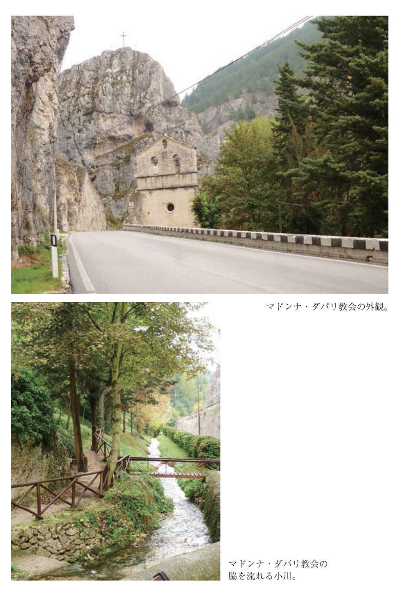
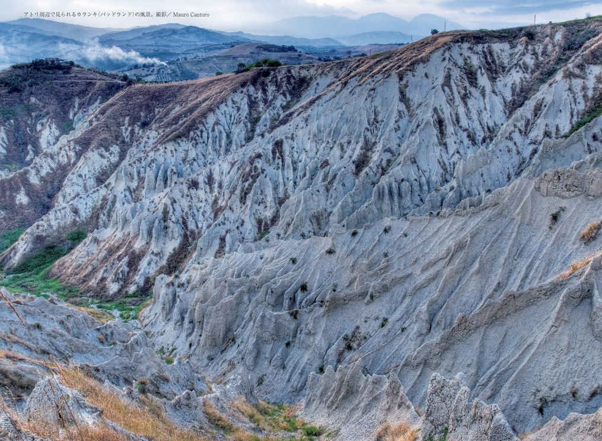
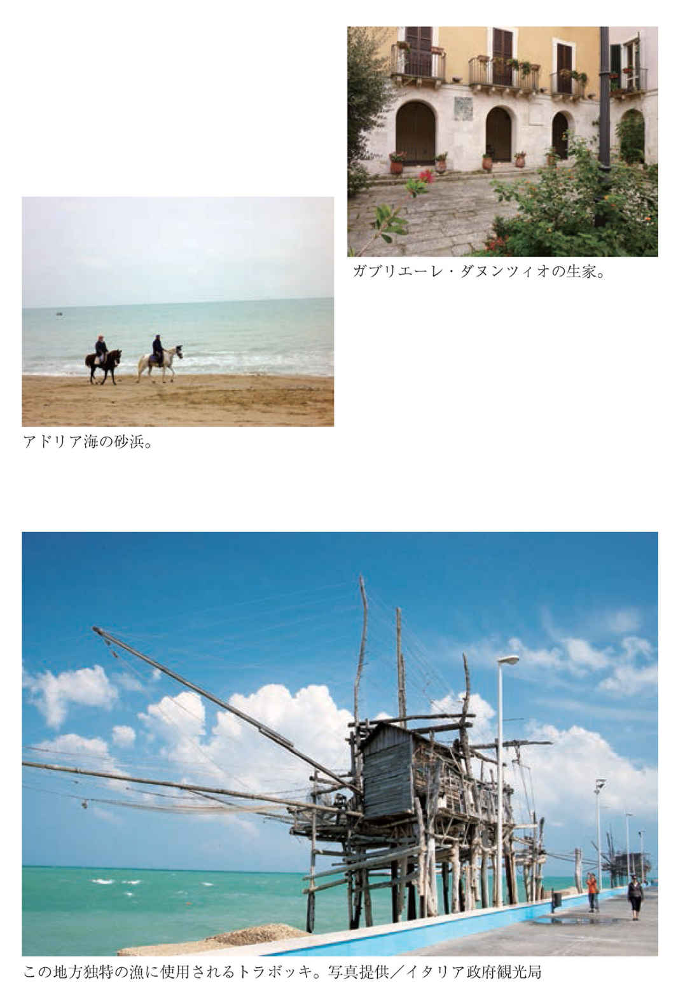

| あなたの知らないイタリア ミステリアスガイド・アブルッツォ | |
| 石川 康子 | |
| 株式会社世界文化社 (2013) | |
プロローグ
忘れ去られた地、アブルッツォ
イタリアを長靴にたとえると、アドリア海に面するちょうどふくらはぎの下あたりがアブルッツォ州と呼ばれる地方である。日本でいえば岐阜県ほどの大きさで、ローマの反対側に位置する。この州の素顔を知る機会はほとんどない。それどころか二〇一三年現在、日本では一冊のガイドブックもない。『地球の歩き方』でも、飛ばされてしまっている。イタリアへ出掛ける日本人観光客の数がこれほど増えたにもかかわらず、このアブルッツォ州にあるラクイラ県、テラモ県、ペスカーラ県、そしてキエティ県の四つの県に足を延ばす人はまずいない。いわばイタリアの陽の当たらない場所なのだ。
それはなぜなのだろうか。
やはり、ローマ、フィレンツェ、ヴェネチア、ミラノに代表されるように、イタリアには歴史的価値のある建築や都市が多すぎて、アブルッツォにまで専門家の目が届かないからなのだ。六五％ が山岳地帯で、ながらく近代化から取り残されているという理由もあろう。
だがこの州を一度知ると、虜になってしまう不思議な魅力がある。建築家、美術史家、考古学者、料理研究家たちにとってこれから見逃せない場所になるはずだ、と予見させる強力な磁場があるような気がしてならない。この州に関心を抱く学者や旅行愛好家がこの地方に目を向け、目覚める日は必ずやってくるだろう。
アブルッツォとの出会い
それにしても、なぜ私はこの地に誘われたのだろうか。
大学でドイツ語を学び、卒業した私は、ドイツのフランクフルトにある日本企業で働くことになった。仕事が終わるとまっしぐらに市内にあるイタリア語の語学学校に向かう日々が続いた。私は自身の研究対象でもあるドイツが生んだあの文豪ゲーテの『イタリア紀行』と同じルートを辿って「レモンの咲く国」イタリアに行ってみたかったからだ。そのためには語学は欠かせないものだった。
語学教室でいつも隣の席に座っていたのが、イタリアが大好きなドイツ人医学生ペトラであった。オードリー・ヘップバーンとどこか似ていた彼女は、大学の授業が終わるとイタリア語を学びに来ていた。彼女は、会うたびにイタリアの素晴らしさを私に語った。ゲーテと同じようにドイツ人はイタリアという国を通して自己のアイデンティティを確立したいのだということがいつしか私にはわかり始めた。歴史を鑑みればそこにこそ彼らの文化のルーツがあるからである。
ある日、ペトラがこんなことをこっそり教えてくれた。
「アブルッツォって知っている？ ローマやミラノやフィレンツェだけがイタリアではないの。あそこは行くたびに新しい発見がある不思議なところなの。ドイツ人にもほとんど知られていない秘境の地よ。ローマの反対側のアドリア海側で、歴史と文化が交差するアブルッツォの大地は、旅人を魅了するイタリアのすべてがあるの」
「アブルッツォ？」
彼女の言葉がそのとき妙に新鮮に聞こえたのを今でもはっきりとおぼえている。それ以来、「アブルッツォ」という固有名詞が風化することなく私の頭の片隅にいつも引っかかっていた。そこはゲーテも訪れたことのない場所であった。
アブルッツォ州を襲った地震、呼び覚まされた記憶
その後、結婚を機に私は仕事を辞め、フランクフルトのアパートを引き払い、フィレンツェに一年間住むことになった。だが、御多分に漏れず、私もフィレンツェやその周辺のトスカーナ地方を巡るのが忙しく、一度として「アブルッツォ」を訪れることなく帰国した。
古い記憶の奥底から突如としてかの地の名前が飛び出したのは、二〇〇九年四月六日のことだった。朝起きてニュースを見ていると、現地の真夜中の三時半、マグニチュード六・三の地震がアブルッツォ州の州都ラクイラとその周辺の二六の市町村に襲いかかったという速報が流れたのだ。
この都市のシンボルである「サンタ・マリア・ディ・コッレマッジョ大聖堂」がテレビ画面に映し出され、レポーターが「大変なことになりました。大聖堂のなかの屋根が一部落ちました。幸いなことに美しいファサードは崩れていません」と興奮しながらその悲惨な被災地の様子をリアルに伝えていた。死者の数は約三〇〇人以上、負傷者は一六〇〇人、住居を失った人びとはなんと六万人にも上ったという。
地震に見舞われたラクイラは、あのペトラのお気に入りのアブルッツォ州の州都であった。彼女はどんな気持ちでこのニュースを聞いているのだろうかと心配になった。
アブルッツォの地震から二年あまりが過ぎた二〇一一年の夏、仕事でドイツに行くことになり、医師となったペトラと久しぶりに再会した。話題はもっぱら日本とアブルッツォの地震についてであった。案の定、彼女はすぐに現地入りして怪我をした人の救助にあたったという。「あそこは大切な場所なの。魅力ある町が沢山あるところなの。あなたも早く行けるといいわね」
日本には山のようにイタリアのガイドブックがあるにもかかわらず、このアブルッツォ州を紹介する案内本が一冊もないことを話すと、ペトラは万巻の書棚のなかから英語のガイドブックを二冊取り出し、「飛行機の中で読んでね」と私のバッグにグッと押し込んだのだった。何か秘密の花園を覗いてしまったような、何か未知の世界が開かれたかのような、そんな気がしてその後の旅は終始落ち着かなかった。むくむくと頭をもたげた好奇心が、アブルッツォ州を知りたいという衝動に結びつく。
深くて豊かな歴史が眠る場所へ
帰国後、地球規模でそれぞれの国の運命や将来、それに自分の人生について考えるようになった。何かに取り憑かれたかのように、他のことが考えられなくなり、来る日も来る日もひたすらアブルッツォ州を調べ始めた。ペトラがくれた本を頼りに、次々と「古くて深くて豊かな」都市や町を歩き廻る計画を立てた。学生時代から当てずっぽうの旅をずいぶん体験してきた私だが今回は違った。調べ始めると、謎は謎を呼び、その謎がキリスト教の理解まで深めていくという始末で、調べるのをやめることなど、到底できなかった。
驚いたのは、日本の歴史を変えた織田信長、豊臣秀吉、徳川家康の三人の武将たちに多大な影響を与えた一人のイタリア人の出身地がアブルッツォ州であったことだ。
その名前は、宣教師アレッサンドロ・ヴァリニャーノ。ヴァリニャーノとは一体何者なのか。
彼は「天正少年使節団」と呼ばれる日本初の公式ヨーロッパ訪問団をあの時代に企画した人物であった。五〇〇年近く前に、少年ヴァリニャーノが生まれ育った町を私も歩きたくなった。たった一度の過ちを青春時代に犯したがために人生が狂い、その結果、二度と故郷アブルッツォ州キエティ県に戻ることがなかったヴァリニャーノの苦悩の人生を知ったからである。だが、彼の人生がもし狂わず、エリートコースを辿っていたならば、極東日本に来ることはまずなかった。そのことはこの本の最後の章でさらに詳しくお伝えしたい。
こうして、アブルッツォには何かがある、という確信はいつしか、アブルッツォに行く、との熱い思いに転じ、成田を飛び立ったのは二〇一一年一〇月のことであった。ドイツで友人ペトラと再会してからわずか二か月足らずのことであった。
この大地で繰り広げられた歴史のドラマが、強い引力をもって私をかの地へと誘いだしたのだ。アブルッツォに出会ったことで、私は、日本では誰も紹介してこなかった、イタリアに眠るいくつもの謎の物語を紡ぎだすことができた。その引力は、アブルッツォ出身のイタリア人たちと日本で知り合う機会にもつながった。彼らは遠く離れたふるさとを元気にしたいという強い想いと、その想いを馳せることしかできないというもどかしさを感じていた。
これから紹介する内容は、この足で踏み、この目で見、現地で聞いた声であるとともに、知られざる「辺境」を旅した「アブルッツォ州」の紀行文であり、「アブルッツォ物語」である。
その中でも特に、二〇〇九年四月のアブルッツォの大地震の傷跡をいまだ残すラクイラのことを考えると、今も、不意に胸が抉 られるような思いに捕らわれてならない。人間の生死が導く業と運命を垣間見たからである。
タリアコッツォ「ヨーロッパ史を変えた大事件」
私は今、アブルッツォ州ラクイラ県の町、タリアコッツォに立っている。思えばこの州を訪れる決断をするまでに、三〇年という長い月日が流れたが、やはりこの時間が私には必要だったのだろう。
ローマから最初に足を踏み入れたこのラクイラ県の町、タリアコッツォから私の旅は始まった。読者はイタリアの歴史のなかで、「タリアコッツォの戦い」という言葉を聞いたことがあるだろうか。この戦いはイタリアというよりも、世界史のなかでドイツとフランスに一大転機をもたらした大事件だった。その歴史を動かした舞台をさっそく訪れてみよう。
イタリア語で旧市街をチェントロストリコ（歴史地区）と呼ぶが、小さな町ではたいてい城壁の外にある駐車場に車を止めなければならない。中世の時代、車が通れる道幅など考えていたわけではないからだ。車一台がやっと通れるか通れないかというような細い道ばかりである。
門をくぐってゆっくり城壁内に入ると、まるで中世にタイムスリップしたような錯覚に襲われた。大きな広場の中央にはオベリスクが立っている。その広場をぐるりとかこむようにパラッツォと呼ばれる中世の大邸宅が隙間無く建っている。邸宅といっても日本でいえば一〇階建てのビルぐらいの高さの館である。
この町の歴史を知りたいと思い、広場に面した小さな書店に入り、店員にガイドブックがありますかと尋ねた。
「イタリア語しかないけどいいですか？」
きっと観光地化されていないのだろう。訪れる異邦人に広く浅く町を紹介する英語版のパンフレットがなかったことが妙に新鮮だった。
少し疲れたので、一休みをしようと思いバールに入った。バールでは、カウンターで立って飲むのが一般的で、テーブル席はわずかである。私もイタリア人にならって小さいカップに入った濃厚なエスプレッソを一つ頼んだ。このほろ苦いコーヒーが人生の味なんだと思いながら、この町の歴史について振り返った。
ドイツとフランスがイタリアを奪い合った「タリアコッツォの戦い」
考えてみれば、ドイツ人のゲーテを始め、あらゆるヨーロッパ諸国がこのイタリア半島に魅せられてきた。
特に、古代ローマ帝国の崩壊以降、ドイツとフランスのどちらがこのイタリアを支配するかで争いが絶えなかった。イタリアの政治は絶えず不安定で、いわば天下は実力のある者の回り持ちだった。その天下分け目の合戦が一二六八年にこの場所で起きた。それが「タリアコッツォの戦い」で、あのダンテも『神曲』の中でこの争いを活写している。
イタリアの三分の一を支配するドイツ人の「神聖ローマ帝国」にフランスはずっと嫉妬していただろうし、イタリア人たちにとっては神聖ローマ帝国の皇帝であるドイツ人に恐れおののいていただろう。
だからこそ、一二五〇年に神聖ローマ帝国を統治していた皇帝フェデリコ二世が亡くなると、彼の出身であるホーエンシュタウフェン家に、もはや明日はなかったのである。次に王座を狙ったのは言うまでもなく法王と組んだフランスのアンジュー家であった。法王庁は一気にホーエンシュタウフェン家を潰しにかかったのだ。
この戦いの後、イタリアはしばらくフランスの配下となる。だが、このフランスもその後シチリアの民衆に嫌われ、一二八二年に「シチリアの晩鐘事件」と呼ばれる大事件が起きる。一夜のうちに四千人ものフランス人がシチリア人たちに虐殺され、残ったフランス人は命からがらイタリアを脱出した。
その後はスペインのアラゴン王家に支配権が移る。いつの世も栄華と衰退を繰り返しながら人びとは生き抜いていくのだと実感させられる。
皇帝派（ドイツ）か、法王派（フランス）か
ほろ苦いエスプレッソを飲み終わった私はバールを出た。穏やかな午後の日だまりに包まれながら、町の背後に切り立つ岩壁を眺めた。あの山は今も昔も変わらぬ姿で町の動静を見てきたのだろう。
そのとき、私は中学生の頃に観たシェイクスピアの映画『ロミオとジュリエット』のワンシーンを思い出した。当時の私はキャピュレット家とモンタギュー家という二つの旧家が、なぜ何百年もお互い憎み合っていたのかさっぱりわからなかった。ただ、ロミオとジュリエットが両家に認められず、引き離されるのが可哀想とだけしか理解できなかった。あやふやな知識の中でジュリエットの悲痛な叫びにただ涙していたのだった。
ロミオとジュリエットが生きた中世のイタリアに吹き荒れていたのは、人びとが皇帝派につくか、あるいは法王派につくかの問題であり、大人たちの言い分に若い二人は振り回されていただけだった。
私はこうした単純な図式を、五〇歳を過ぎてようやく理解した。イタリアの歴史を面白くさせる二つのキーワードが「皇帝派」と「法王派」だったことをもっと早く知っていれば、若いときに過ごしたイタリアでの都市散策の見方も違っていただろう。
では、皇帝派と法王派の領土ぶんどり合戦の決着はいつなのだろうか。
それは、一八六一年のイタリア王国の成立まで待たなければならない。さらに、一九二九年に時の法王とムッソリーニとの話し合いでイタリアにおける法王の領土が接収され、現在の「ヴァチカン」ができあがるまでである。
タリアコッツォの町を歩きながら、私はイタリアの歴史が身近になっていくのを感じ始めた。
「サンタ・マリア・ディ・コッレマッジョ大聖堂」
次に訪れたのはアブルッツォ州の州都である、ラクイラという都市である。地震大国の日本人としては、アブルッツォ地方に行く以上はまずこの都市を確かめる必要があった。
ラクイラの旧市街に入る手前で私は足を止めた。テニスコート四面以上もありそうな手入れの行き届いた青々とした芝生が広がっていたからである。さらに、その奥に目をやるとまるで宝石箱のようなピンクと白の幾何学模様の四角い建物が佇 んでいた。
「なんてシンプルで美しい建物なんだろう」
芝生の上を歩きたかったが、ゴム製の赤いフェンスがしっかりそのまわりを囲み、立ち入り禁止となっていた。しかたなく、芝生の周囲に敷かれた歩きづらい玉砂利の上をサクサクと音を立てながら建物にゆっくり歩み寄った。近づくにつれ、そのデザインの美しさに心を奪われ何度も足を止めて見とれてしまった。建物はラクイラのシンボル「サンタ・マリア・ディ・コッレマッジョ大聖堂」だった。二〇〇九年四月六日のイタリア中部地震の時、テレビで「正面ファサードは無事でした」と繰り返しレポーターが報告したあの建物であった。
季節はずれのためか、あるいは地震の影響を受けたせいなのか、観光客で賑わうはずの場所に人影はまったくなかった。
だが、一三世紀に完成したというこの大聖堂のファサード（正面壁面）の前に立ったとき、その静 謐 で緻 密 な白とピンクの幾何学模様に私は釘付けになった。黒と白の横縞模様はシエナやフィレンツェの大聖堂で見たことがあるが、この配色と複雑な幾何学模様の組み合わせは初めてだった。さらにファサードの形は、大地に沿って水平に広がる堂々とした長方形であった。ドイツやイタリア・トスカーナ地方で数多くの教会を見てきたが、水平の屋根をもつファサードを見たのもこれが初めてであった。
「バラ窓」と「ポルタ・サンタ（聖なる扉）」
このあたりの教会は、どうやらこうした長方形のファサードを二層あるいは三層に分け、半円形の扉口とその上に「バラ窓」をもっているのが特徴のようだ。「バラ窓」とは、中世のキリスト教教会堂の正面壁面に設けられた円形窓のことである。バラの花に似ているためこの名が付けられ、聖母マリアの象徴でもある。同じくこの「バラ窓」がファサードに配されたパリのノートルダム寺院や、ドイツのケルン大聖堂に代表されるような天に高くそびえるゴシック建築とは全く違い、この建物の様式は大地に根づいた安定感がある。
この大聖堂の正面には三つの扉口があり、どの扉の上にも「バラ窓」があった。ガイドブックによれば、中央の扉口の上にあるものがアブルッツォ地方で一番大きいという。建物の全体を把握したいと思い、左側の側面を見た瞬間、思わず足を止めてしまった。素晴らしい彫刻を施したもう一つの扉口がそこにあったからである。それは固く閉ざされた、「ポルタ・サンタ（聖なる扉）」であった。私はヴァチカンにあるサン・ピエトロ大聖堂の「ポルタ・サンタ」を思い出した。二五年に一度「聖年」の年だけに開かれるというあのブロンズでできた大扉である。「聖なる扉」の意味は後述したい。
ラクイラのシンボルマーク、鷲と対面
このとき何か強い視線を感じ扉口の上を見上げると、じっと私を見据える一羽の鳥がいた。それは精巧な「ワシ」の彫刻であった。
ラクイラの語源は、イタリア語の定冠詞である「ラ」とワシという意味の「アクイラ」が合わさって現在の「ラクイラ」と呼ばれるようになったが、昔はただ「アクイラ」だけであった。この都市のシンボルマークである「ワシ」はこの都市の産みの親であるホーエンシュタウフェン家出身の皇帝フェデリコ二世の家紋でもあった。私はこのラクイラでまず「ワシ」とご対面したというわけである。
再び正面に戻ると中央の扉口も固く閉ざされ、開放されているのは右側の扉だけであった。重たい木でできた扉をグッと押すと、さらにもう一つ、近代的なガラスの扉があった。大聖堂内部にそっと入ると、どの柱も黄色いバンドで下から上までぐるぐると固定され、まるでギプスをはめられた足のような実に痛々しい姿が目に飛び込んできた。
奥の祭壇の方に目を向けると、教会には珍しい日だまりが見えた。足音を立てないように静かに奥に向かって中央通路を歩き、辿り着いて天井を見上げると、なんと祭壇の上の屋根がぽっかり崩れ落ちていた。透明の素材で修復した簡易屋根が、この大聖堂内に日だまりをつくっていたのだ。
教会は昼でも薄暗い光が差し込むことで祈る人々に「神は光なり」と言わしめたにもかかわらず、震災後は、皮肉なことに、天からの外光が直接さんさんと差し込んでいた。

法王チェレスティーノ五世との邂逅
その光の下にひとつのガラスケースの棺があった。
「ここに葬られている遠い昔の人はだれだろう」
死者に対する深い哀悼の念が私の胸の奥に静かに染みこんできた。透明なガラスケースの中には高貴な衣服に身を包まれた小柄な聖人が眠っていた。これほどまでに慕われた姿には何かいわれのある聖人に違いない。説明プレートには次のように記されてあった。
「一二九四年にこの場所で戴 冠 した法王チェレスティーノ五世（一二一〇─一二九六）」
法王の霊廟とそこに安置されていたガラスケースのなかで横臥する遺体は、二〇〇九年の大震災で幸運にもダメージを受けずにすんでいた。
時の法王の「戴冠式」がラクイラのこのサンタ・マリア・ディ・コッレマッジョ大聖堂で行われたということは、この大聖堂ばかりかラクイラという都市がいかにカトリック教会にとって重要であったかがわかるというものだ。
余談だが、イタリア関係の本には、英語のＰＯＰＥの訳が「法王」と「教皇」という二つの訳語で混在している。これは教科書を扱う文部科学省が「教皇」と訳し、外務省では「法王」と訳していることによる。マスコミやテレビなどでは「法王」と呼んでいることから私たちはこの訳に慣れ親しんでいるため、ここではやはり、「法王」あるいは「法王庁」と呼ぶことにしよう。
私は棺の前で手を合わせ、今日ここに来られたことをこの法王に感謝し、棺の前にあった「お布施」箱にユーロを何枚か入れた。すると、蝋 燭 のカタチをしたランプがピカッと光った。
「はるばる遠い日本からようこそ」
突然、死者の声が聞こえたかのようだった。
一二九四年にこの法王は八三歳で歴代法王の仲間入りをしたわけだが、その就任期間はわずか五か月間たらずだった。八五歳で亡くなった彼の顔をよく見ると、ロウで作られているとはいえ、幾多の苦労を背負ってきた人生だったのだろうと容易にわかる幾筋もの深い皺が刻まれていた。説明書には「八三歳で法王に選ばれたチェレスティーノ五世は、本名ピエトロ・デ・ムローネ。モリーゼ州のムローネ町の出身。貧しい小作農の息子であったが、高潔で聡明な性格からベネディクト会の修道士として活躍した」とある。
だが、その最晩年に悲劇が待ち受けていた。八五歳のときにローマの南東三六キロメートルにある「フモーネ城」で軟禁されそこで亡くなったからである。法王になると、死ぬまで法王の座に就くのが「きまり」だが、このチェレスティーノ五世は五か月たらずで辞職しその二年後に幽閉され亡くなった。一体なぜ短期間で法王を辞し、そして軟禁されたのだろうか。倒壊した大聖堂内を歩きながら、私はそのことが妙に気になってしかたがなかった。
チェレスティーノ五世の悲劇
実は裏話があることがその後にわかった。イタリアでは当時、二年半もの間、法王の座が空白になっていた。枢機卿たちは相反する利害から、誰を法王にするかという点で分裂を起こしていたからだった。この状態を危惧し、枢機卿らに「法王を早く選ばなければ、法王選挙会議に神罰がくだる」と警告文をしたためたのが、ピエトロだったのである。その警告文をほかの枢機卿たちの前で読み上げたのが、カエターノ枢機卿という人物であった。カエターノは突然こうひらめいてしまう。
「枢機卿のみなさま、警告文を出した本人に法王になってもらうというのはどうでしょうか」
するとカエターノの妙案にほかの枢機卿全員がとびつき、この修道士ピエトロに白羽の矢が立ってしまった。
だが、ピエトロは当座を穴埋めする「ピンチヒッター」にすぎなかった。八三歳という高齢にもなれば、静かに祈りに余生を捧げたいのが本音であっただろう。だが、人の良いピエトロはこの暫定的な選出をしぶしぶ承諾し、チェレスティーノ五世として法王の座についてしまう。だが、法王になるや、毎夜ベッドに入ると「あなたは法王になる人物ではない、早くもとの生活に戻りなさい」という声がどこからともなく聞こえてきたのである。そのことに彼は恐怖を覚え、だんだん食欲を失い、ついにはやせ細ってしまう。
実は、この種の話はよくあることで、夜になると壁越しにささやいていたのは、彼を法王に推したカエターノ枢機卿その人だった。
当然ながら、次期法王の座を得たのはこのカエターノで、ボニファティウス八世と名乗った。法王の座を降りたチェレスティーノ五世を待ち受けていたのは、悲しい結末であった。退位後、再び隠 遁 生活に戻ることを望んだにもかかわらず、彼を依然支持する信者たちと新法王の座についたボニファティウス八世の信者らとの間で争いが始まったからだった。その不協和音の拡大を恐れた新法王はチェレスティーノ五世を捕らえようと画策する。これを察知した彼は祖国を離れようとアドリア海を渡る決意をしていた矢先に、新法王一派に捕らえられ「フモーネ城」に軟禁されるのだ。その城はいまでもラツィオ州フロジノーネ県にその佇まいを残している。八五歳の老人は法王の座を降りた二年後の一二九六年五月一九日、閉じ込められた城内で亡くなった。この死についても多説入り乱れているが、信 憑 性 があるのは、この旅の最後に訪れた町キエティで知り合ったローマ大学建築学科の名誉教授フルラーニ氏が教えてくれた「死体には額を斧で殴られた後が残っているので殴り殺されたのです」という説だろう。
だが、一般には「望んでいた個室がようやく得られました」と軟禁された場所を美化して息を引き取ったという逸話が今も語り継がれている。その清貧な態度と徳を積んだ功績で、チェレスティーノ五世は一三一三年に聖人の列に加えられた。
法王ベネディクト一六世の賛辞
二〇一〇年はこの聖チェレスティーノ五世の生誕八〇〇年の年であった。当時の法王のベネディクト一六世はアブルッツォ州にあるスルモーナという町を訪れた際、人々に愛をもって接したこの聖チェレスティーノ五世の生き方を「すべての時代のお手本にしたい」と信者らを前にして語った。
イタリアのアブルッツォ州で聖チェレスティーノ五世がどの法王よりも多く語り継がれてきたのは、このような悲劇に巻き込まれながらも人のため世のために己を捨てた高潔で優秀な修道僧だったからだと思われる。ダンテが『神曲』の一節で「......臆病風に吹かれて大きな位を捨てた法王チェレスティーノ五世......」と彼を揶 揄 したのは、隠された真実を知らなかったからに違いない。
毎年８月のお祭り「聖チェレスティーノの許し」
この「サンタ・マリア・ディ・コッレマッジョ大聖堂」では、毎年八月二八日の夕刻から二九日まで「聖チェレスティーノの許し」という大きなお祭りがあり、各地から人びとが押し寄せる。その理由は、年に一度だけ、前述の「聖なる扉（ポルタ・サンタ）」が開かれ、そこをくぐると今まで犯してきた罪が免じられるという伝説があるからだ。これが「聖なる扉」の意味だった。
一二九四年にこの場所で戴冠式を行ったチェレスティーノ五世が、この「扉」から大聖堂に入れば誰でも免罪されるという画期的なアイデアを発表したのが起源だったのだ。免罪符は当時、貧者には買うことはできなかった。だが、富める者も貧しき者も「聖なる扉」をくぐって大聖堂内に入れば罪が許されると約束したのである。
そして、六年後の一三〇〇年に、次の法王ボニファティウス八世がこのルールをローマに来る巡礼者にも適用し、「サン・ピエトロ大聖堂」の「聖なる扉」は二五年ごとに特別に開かれ、許しを与えるようになった。
「サンタ・マリア・ディ・コッレマッジョ大聖堂」の芝生の庭は、震災後は立ち入り禁止となってしまったが、震災前は市民の憩いの場であったという。芝生の上で寝転んだり、ボールを蹴飛ばしたり、家族連れが犬とたわむれたりする楽園がそこには横たわっていたはずだ。
この建物は今でもラクイラの市民の誇りであり、世界の人びとを温かく迎える「聖母マリア」であることに変わりはない。何十年、何百年かかろうとも、きっと元通り修復するのがイタリア人である。
余談だが、この「チェレスティーノ」という名前が付いた美味しいレストランがローマにある。そのレストランでイタリア料理の修業を開始したのが日本イタリア料理協会の会長で日本におけるイタリア料理の先駆者、落合務氏である。この会によって九月一七日に定められた「イタリア料理の日」の二〇一二年のイベントで、私は氏から直接「僕がローマで最初に修業したレストラン〝チェレスティーノ〟のオーナーの実家はラクイラで、オーナーが墓参りに帰省するとき僕は一緒に連れて行ってもらったことがある。懐かしいなぁ」というエピソードを聞くことができた。ラクイラ出身のオーナーは、チェレスティーノという名前をレストラン名にするほど「法王チェレスティーノ五世」を誇りに思っていたにちがいない。この日、東京九段下のイタリア文化会館で行われた「イタリア料理の日」の「音楽と料理の祭典」にはまだ続きがあった。それは後章で述べたい。
ラクイラ中心部
ラクイラはイタリア半島を南北に貫くアペニン山脈の山裾の盆地にできた都市である。盆地といっても標高七一四メートルもある丘の上に造られた都市で、イタリアの州都の中では一番高い場所に位置している。その背後には二九〇〇メートルのグラン・サッソ山がそびえ立ち、特に晴れている日ははっきりとその姿を観賞できる。
ラクイラの駅は、高台に位置する旧市街の麓にある。訪れたときは、駅の周辺にもプラットホームにも人影はなかった。大きな町がひっそりしているのが妙に気になったが、駅のすぐそばにある城門「リビエラ門」から旧市街にまず入ることにした。
九九の噴水
門をくぐるとすぐ左に「九九の噴水」という名所があった。ゆがんだコの字形の壁にずらりと顔が並んでいた。その顔は動物のようでもあり人間の喜怒哀楽を表現したようでもあり、奇妙なものであった。その口から絶え間なく水が流れ出ている。本当に九九個あるのかと思い、私は壁沿いを歩きながらその顔を数えた。九三個目で顔が終わり、残りの六個は普通の形をしたただの蛇口であった。
皇帝フェデリコ二世の都市計画
この「九九」という数字は、実はラクイラの周辺に点在する村の数を意味していた。一三世紀、ラクイラに都市を造る構想をもった皇帝フェデリコ二世は、ラクイラ市内にこの九九の村と同数の自治区を造った。その自治区の名前は村と同じ名前にし、それぞれの守護聖人を祀った教会と広場を与えたのだった。だから、噴水も九九個あるというわけである。だが、後の調査でわかったことは、村の数は当時七一だったらしい。九九はあくまでもラクイラの伝説の数とのことだ。皇帝フェデリコ二世のこの壮大な発想は、日本で言うならば、江戸と本国を行き来する大名たちの江戸における居住地、つまり大名屋敷をラクイラに造るというような意味合いである。ラクイラ城壁内に力をあわせて一つの同盟国を造る仕組みは、当時の人間には誰ひとりマネのできない斬新なアイデアであった。
現代は蛇口をひねれば限りなく水が出てくる時代であるが、当時は旧市街の高台に住む女性や子供たちがせっせと水をくみにこの場所に集まってきたのだろう。ここに立っていると、女性たちが洗濯をしたり、髪の毛を洗ったり、楽しく井戸端会議を繰り広げるにぎやかな話し声が聞こえてくるようだ。声が形になり暮らしの知恵が生まれる場所である。
震災の傷跡が残る旧市街
いよいよチェントロストリコ（旧市街）へ向かって坂を上る。坂道を上る道すがら、なぜ人びとはこの高台を選んで生活をしてきたのだろうかと考えた。確かに防衛上の利点が大きい。さらに、背後のグラン・サッソ山が城塞となり、争いの絶えない時代から町を守ってきたにちがいない。湿気も少なく清潔であるからペストなどの疫病も遠ざけることができたはずだ。当時から山岳地帯に住む人びとは集団で住み、毎朝城門をくぐって農地のある低地へ仕事に行き、再び高台の住まいに戻っていくのが日課であった。
ラクイラは一二の門をもつ城壁で囲まれている都市で、中心の門は「バッサーノ門」と呼ばれる。その門に近づいて驚いたことは、震災後三年が経過したにもかかわらず、門のそばで数人の警察官が車の規制をしていたことだった。許可書をもっている車だけが入構可能というわけだ。町の中は、どの邸宅も傷だらけで人影もまばらであった。特に割れたままのガラス窓が痛々しかった。七万人も住んでいた活気のある町は一体どこに消えたのだろうか。大手銀行や事務所や店舗が重い錠で閉鎖されていた。その扉には蜘蛛の巣が張っていた。
皇帝vs 法王の権力争いの始まり
この町は前述したフェデリコ二世（一一九四─一二五〇）というイタリア史上最も「国際人」といわれた神聖ローマ帝国の皇帝が築き上げた新しい理想都市であった。そのコンセプトにはフランスやローマ法王に対抗するための都市計画が念入りに盛り込まれている。皇帝フェデリコ二世と法王との戦いは、相続問題を含む領土の奪い合いであった。ドイツの神聖ローマ帝国とローマ法王の長い長い権力争いの時代の幕開けは、この皇帝フェデリコ二世から始まるのである。それは同時にイタリア全土に「皇帝派」と「法王派」という二つの派閥を作ることになる。そして、イタリアは神聖ローマ帝国、スペインのアラゴン王家、そしてフランスのアンジュー家の激しい争いに巻き込まれ、翻弄されていくのだった。
聖地エルサレムとフェデリコ二世
シチリアで育ったといわれ、英才教育によって高い教養を身につけたフェデリコ二世が造り出した、斬新なラクイラの都市構造には、さらに話の続きがある。この構造が、あの「聖地エルサレム」と同じ配置をしているというのだ。まず、都市の標高がラクイラは七一四メートル。エルサレムは七四〇メートルとほぼ同じである。さらにラクイラにある重要なモニュメント、サンタ・マリア・ディ・コッレマッジョ大聖堂と九九の噴水が、エルサレムのソロモン宮殿とシロアムの池の配置と同じである。またエルサレムにあるケデロン川とラクイラに流れるアテルノ川の場所も位置関係が同じである。城壁の門も東西南北に合計一二ある。ラクイラの地図を裏返すとエルサレム市と重なり合う。偶然だけでは済まされないのだ。
では、なぜフェデリコ二世はラクイラを「第二のエルサレム」にしようと考えたのだろうか。学者たちの間ではこの問いにまだ答えは出ていないが、わずかな手がかりをもとに、推測してみよう。
その理由は彼の行動を辿ることで見えてくる。まず、彼はエルサレム王の娘イザベルを結婚相手に選んでいる。愛する妻のために故郷のエルサレムを再現しようと約束したと考えるのは飛躍しすぎかもしれない。だが、十字軍遠征で戦うことなく語学を駆使した無血の「聖地奪回」を成し遂げたフェデリコ二世としては、この「聖地」と同じような都市造りをしたいと考えるのは突拍子もない発想とはいいきれないだろう。
ローマ法王と全面対決するにあたり、フェデリコ二世は優秀な人材をキリスト教徒だけにこだわらず、イスラム教徒であろうとユダヤ教徒であろうと、能力があれば国家官僚に登用する辣 腕 であった。さらに、財源がなくては話にならない。そこで、ラクイラ周辺を繁栄させるためにビジネスをどんどん展開していく。そのビジネスについては後述したい。
そんな頼もしい皇帝フェデリコ二世に思いを馳せながら市内を散策した。だが、車はおろか人影がほとんどなかった。震災からすでに三年も経過しているのに人が住んでいる様子がないのだ。時おり、老人が道路を掃いている姿があるにはあったが、かつて七万人もが住んでいたとは思えなかった。
「サン・ベルナルディーノ大聖堂」
がらんとしたラクイラ市内を歩きながら、なんとしてでも辿り着きたい場所がもう一つあった。
トスカーナ地方のシエナが誇る聖人ベルナルディーノが眠る教会「サン・ベルナルディーノ大聖堂」である。地図とガイドブックを見ながら人影のない寂しい石畳を上ってテクテクと歩いていると、時折やせ細った犬がさまよっているのに遭遇した。一瞬ギョッとして立ち止まると、犬もこちらの様子をうかがっている。この犬も震災の犠牲になり飼い主を捜して終わりのない旅を続けているに違いない。過ぎ去ってしばらくすると遠吠えが悲しく聞こえてきた。人間にも動物にも多大な被害と不幸をもたらした地震を恨まないではいられなかった。
比較的広い坂道を上っていくと、突き当たりにまるで一枚の四角い大きな壁のようなものが石段を見下ろすように建っていた。これが「サン・ベルナルディーノ大聖堂」であった。
「壁」と言ったのは、あの「サンタ・マリア・ディ・コッレマッジョ大聖堂」と同じく、この教会もファサードが大地に沿って水平に広がる堂々とした長方形だったからである。
大聖堂の前にはローマのスペイン広場を思い起こさせるなだらかに広がる大階段があった。丘の地形を最大限活かした見事な傑作である。
シエナの聖ベルナルディーノは、マッサ・ディ・カラーラの裕福な貴族の家に生まれ、法律を学び後にフランシスコ会の修道士になった人物であった。その修道士がシエナから離れたこのラクイラで祀られているのは、一四四四年、六三歳の時にナポリに説教に向かう途中、立ち寄ったこのラクイラで亡くなったからであった。聖ベルナルディーノを慕っていたラクイラの人びとは、この見晴らしの良い場所に彼を祀ることを決めたのだ。まだその頃は、現在のような立派な正面ファサードのない教会であった。まもなく霊廟制作が始まり、制作者はアブルッツォでは当時一番の名声を得ていた彫刻家のシルヴェストロ・デル・アクイラが選ばれた。彼は、フィレンツェに工房をもち、レオナルド・ダ・ヴィンチやサンドロ・ボッティチェリを弟子としたアンドレア・デル・ヴェロッキオ、通称ヴェロッキオ親方の弟子だった。
ミケランジェロの夢を叶えた教会
その後サン・ベルナルディーノ大聖堂は、二〇〇九年の大地震でもびくともしなかった正面ファサードをもつ現在の姿に発展した。それが、かのミケランジェロとつながりのあるといわれている。
その理由は、彼がフィレンツェで設計した「サン・ロレンツォ教会」の正面ファサードの図面と酷似しているからだ。フィレンツェを訪れたことのある人は、未完成で終わっているむき出しの焦げ茶色のレンガだけの教会を知っているだろう。完成していれば、おそらくこのサン・ベルナルディーノ大聖堂のような姿だった可能性があるのだ。ミケランジェロのデザインだという確かな証拠は残っていないが、このデザインは当時斬新で、学者たちの間ではミケランジェロにしか設計できないといわれている。
では、一体どういう流れでこのラクイラにミケランジェロのデザインが辿り着いたのだろうか。
ミケランジェロとラクイラの接点
このことに関する資料がないので、あくまでも私の仮説だが、その結びつきはローマにあったのではないかと思うのだ。
一五二四年にこのサン・ベルナルディーノ大聖堂の正面ファサードの設計に携わった建築家はアブルッツォ出身のコッラ・デッラ・マトリーチェという人物であった。彼がローマで働いていた時期に、実はミケランジェロもローマでシスティーナ礼拝堂の天井画と壁画を制作していたのだ。
私の仮説はこうだ。メディチ家出身の法王レオ一〇世がフィレンツェのサン・ロレンツォ教会のファサードの設計をミケランジェロに任せたのは、一五一六年である。だが、法王レオ一〇世が一五二一年に亡くなると資材や資金の調達ができずにファサードは未完成のまま放置されてしまう。すでに、ミケランジェロは先代の法王ユリウス二世に呼び出されてフィレンツェを離れ、ヴァチカンのシスティーナ礼拝堂で働き始めていた。時を同じくして、この礼拝堂に隣接するサン・ピエトロ大聖堂でも改築が行われており、ブラマンテやラファエロなど錚 々 たるメンバーが従事していたが、その中に前述した建築家のコッラ・デッラ・マトリーチェも含まれていたのだった。ミケランジェロはこの一連のフィレンツェのグループらとローマで顔を合わせ、なんらかの機会にラクイラでサン・ベルナルディーノ大聖堂が建設されることを知ると、後年、自分が設計した未完のサン・ロレンツォ教会のファサード案をこのアブルッツォ出身のコッラ・デッラ・マトリーチェに手渡し、叶わなかった夢を彼に託したのではないかと思うのだ。
ミケランジェロの破れた夢が、ここラクイラで叶ったという仮説は、私に想像力を与えてくれた。教会建築に興味のある人は、ラクイラに足を延ばしてこの「完成品」と称された「サン・べルナルディーノ大聖堂」を見学して欲しい。
「スペイン要塞」
旧市街の中心から北に向かって一〇分ほど上った頂上に、「スペイン要塞」と呼ばれる要塞がある。城壁の周りは、幅二三メートル、深さ一四メートルの空堀で囲まれている。
この地に「スペイン」という名がついた理由は、ドイツの神聖ローマ帝国、フランスのアンジュー家、そしてスペインのアラゴン王家が血眼になってイタリアの所有権を主張してきた経緯にある。ここはそのスペインが所有した時代の証であった。
フェデリコ二世亡き後の歴史を物語る建築
このラクイラという都市を造ったラスト・エンペラーとまでいわれているフェデリコ二世の亡き後、「神聖ローマ帝国」の名前はカタチだけのものとなった。アブルッツォの領地はフランスのアンジュー家の支配下に収められ、いつしか「ナポリ王国」と呼ばれるようになる。そして、一六世紀に入ると次はスペインのアラゴン王家の時代になる。
この「スペイン要塞」はスペイン国王カルロス一世（神聖ローマ皇帝カール五世）を讃えて作られたモニュメントだったのだ。あの「陽の沈むことなき」といわれた大帝国を築き上げたハプスブルク家のスペイン国王カルロス一世である。
ルネサンス様式で造られているが、建設費用が莫大となり三〇年間の重税にあえいだ住民は一五六七年にスペイン側に建設の中止を嘆願したという。いまでも未完成のままなのは、当時の住民の声を受け入れた結果だった。
二〇〇九年四月の大震災で一部が崩れると、スペイン政府は専門家を現地に派遣し、修復費用を請け負った。時代は移っているがいまだに強い絆でスペインと結ばれていることを私は後で知ったのだった。この要塞は、現在は素晴らしい公共空間に蘇り、「橋」を渡ればそこは国立博物館として立派に機能している。この「橋」によって長い歴史と現在が結ばれているのである。アブルッツォの多くの芸術家の作品が飾られ、「サン・ベルナルディーノ大聖堂」の聖堂内にある聖ベルナルディーノの霊廟を制作した前述のシルヴェストロ・デル・アクイラの傑作「聖セバスティアン」も見られる。主にルネサンス期に制作されたものが主流で、そのレベルはフィレンツェで開花した芸術家たちと肩を並べるほどだという。アブルッツォで一番大きな要塞として知られているが、皮肉にも一度として戦争に使われたことはなかった。
アブルッツォ名産のお菓子、「トローネ」
「スペイン要塞」を後にした私は、歩き疲れてしまい一息入れようとバールに立ち寄った。コーヒーを頼むと経営者らしき中年のイタリア人が「観光客が来なくなり、実に寂しい町になってしまったよ」とため息をもらした。私は彼の悲しみを正視できずに、棚に沢山積まれていたお菓子を眺めながら「そうみたいですね」とうなずいた。すると、私の視線に気づいたのか、「トローネを食べたことがある？ ここの名産だよ」と、長細い箱から中身を取り出し、ナイフでカットしてくれた。
トローネとはオブラートで包まれている硬いヌガー菓子で、その中にアーモンドなどのナッツがぎっしり入っているアブルッツォの名産であった。箱を手にして裏返すと創業一八三五年と書かれたお菓子会社「ヌルツィア」のものだった。口に入れると、チョコレートとナッツの絶妙なハーモニーが広がり、一気に旅の疲れが取れたのだ。そして少し重たくなった腰を上げ、バールを出て旧市街の外に向かったのだった。
今なお残る、震災の爪痕
城壁の門に近づくとその手前に佇む住宅の前で私は足を止めた。二〇〇九年の震災後に立ち入り禁止の金網が住宅の周りに張り巡らされ、被災者が付けたと思われる色あせたリボンが金網のいたるところに結ばれてあったからだ。倒壊した家の鍵も無数にぶら下がっていた。
そのとき、「家があっても町がない」と書かれたメモ用紙が目に飛び込んできた。生命と財産が自然の猛威の前では実にはかなく消えてしまう現実がそこにはあった。無情という言葉しか出てこなかった。
だが、この町を捨てずにバールを経営している人びとがいるのだ。ホテルを再開した経営者たちも見かけた。昔から、アブルッツォの人びとは「強くて優しい」と形容されてきたという。再びこの街に七万人が戻ってくる日が必ずあるだろう。
日本との結びつき「紙の音楽ホール」
秋の陽はつるべ落としというが、日が暮れてもラクイラで最後にどうしても訪れたい場所があった。それはＧ８に参加した、当時の麻生太郎首相が二〇〇九年四月の大地震に対して約七千万円の支援を決定し、ラクイラ市の復興支援に協力した「コンサートホール」である。そのホールは旧市街から少し離れた丘の上に、音楽院と共に建設された。
建築家、坂 茂氏の被災地支援
音楽ホールの設計者は日本人建築家、坂 茂 さんである。彼は二〇一一年五月七日の落成式でこう述べている。
「打楽器の小さな音が次第に盛り上がっていく〝ボレロ〟は、一歩一歩ひろがっていくこのプロジェクトそのものだ」
ラクイラ市長は「大災害に苦しむ日本から素晴らしい贈り物をいただきうれしい。ラクイラ市民は誰よりも東北に寄り添っている」と挨拶した。
この落成式の数か月前の三月一一日、日本で大地震が起こるとはラクイラ市民の誰が予想しただろうか。指揮者に選ばれたのはロシア国立交響楽団（当時）の西本智実さんであった。地元のアルフレッド・カセッラ音楽院オーケストラと共に、エンニオ・モリコーネの「ガブリエルのオーボエ」も披露され、最後は三〇〇人のスタンディングオベーションで幕を閉じた。
設計者である坂さんは「紙」をつかった仮設住宅建設など、被災地支援でも知られる世界的な建築家である。彼は世界の災害復興に建築という具体的な解決方法でいくつものプロジェクトに取り組んでいる辣腕であった。
地震直後、坂さんはすぐにラクイラ市長に連絡を入れると、町の交響楽団や音楽院の学生たちが演奏をする場所がなくなったことを知り、自ら仮設音楽ホールを造りたいとラクイラ市に申し出たのだ。ただ連絡しただけではない。市長にみずからのプロジェクトを了承してもらうために、現地へ何度も足を運び、その熱意と誠意を示したのだ。天災の中で人の心を強くするのは、一人ひとりが支え合う力だということを実行した人である。
今、私は丘の上の音楽ホールに立っている。満天の星の下でラクイラ市の夜景を見ると光の点滅がなんと少ないことか。復興を加速し本来の活気あるラクイラ市に早く戻って欲しいと願ってこの町を立ち去った。
パガニカ「大地震の体験者」
ラクイラ市から八キロほど離れたところにパガニカという小さな町がある。この町も二〇〇九年の震災で被害を受けていた。ここには、ある貴族の館を改良した四ツ星ホテルがある。その貴族とはこのあたり一帯を治めていた「ドラゴネッティ」家だ。ホテルの名もそのまま「ホテル・ドラゴネッティ」であった。もともとは一六世紀の建築で、ホテル内には動物や植物の絵が天井から壁一面に描かれていた。パンフレットを読むと、この館では宿泊だけではなく、クッキング教室、結婚式、披露宴などパーティにも使われ、訪れる旅人をもてなす術がある。
ホテル・ドラゴネッティで出会った貴婦人
ホテルのロビーに座っていると、奥の食堂からステッキをつきながら一人の品のよい貴婦人が背中を丸めて歩いてきた。やさしく微笑みかけられ、私が日本から来たことを知ると彼女の表情が喜びに変わった。そして足を止め、身の上話をし始めた。
「よく、おいでくださったわね、遠いところから。私の名前はね、フェルナンダ・バラレッティ・バルドニというのよ。ラクイラ市に住んでいたけれど、二年前の地震で家の柱に何本もひびが入り、危険で住めない状態になったの。あの日、夜中の四時頃に息子がすぐに車で迎えに来てくれてね。私と夫を車に押し込むようにして家を立ち去ったの。車が発車したとき、ドカーンという大きな音がして後ろを振り向いたら道路がぱっくり割れ大きな穴ができたのよ。一分でも遅かったらこの世にはもういなかったわ。だって、後ろの車はその大きな穴に落ちてしまったのだから。命が助かったのは息子のおかげなの。でも、家があるのにその家に帰れないのは悔しいわ。でもね、不幸というものは誰のせいでもないのよ。誰かのせいにしたところで、人は救われないの。天災を憎み、天を恨んだところで、天災はなくならないの。愛する息子もいるし、このホテルにいられるだけ幸せよ。最後に残るのは愛だけなのよ。これから日本もまだまだ大変でしょう。こんな小さな村でも人びとは日本を応援しているのを忘れないでくださいね。それから日本人の建築家の方が、ラクイラに音楽ホールを造ってくださったでしょう。夫もあの世で感謝していると思います」
ここまで話すと急に婦人は目に涙をため始め、夫が心労で震災から一年後に亡くなったということをポツリと告げた。首を少し振りながら、夫が亡くなる直前までラクイラのバラレッティ音楽協会理事長を務めたと誇らしげに語るのだった。そばでホテルのオーナーがこの老婦人をじっと見つめて微笑んでいた。
「彼は私の息子よ。あの子が助けてくれたの」
と彼女は誇らしげにオーナーを指さした。素晴らしい息子をもった貴婦人の話であった。多くの人の命を奪ったラクイラの大震災から、この婦人のように紙一重で逃れた人びとがいたのである。
絶望感に襲われたとき、人を癒 すのはやはり人しかいないとこのとき感じた。互いに温かい励ましの言葉を交わすことで、人は救われるものなのだ。なぜ自分の町が、なぜ自分の家が、なぜ自分の家族だけがと嘆くのが人の常である。頭に浮かぶのはいつも「なぜ」の二文字であるが、この「なぜ」にはきっと答えはでないだろう。私はこの小さな村で、人間の営みの断片を眺め、日本の地震の話を共有できたことは幸いであった。経験することでしか、人は人に共感できないのかもしれない。二〇一一年三月一一日の大地震を東京で経験しただけの私だが、地震の不条理さやその絶望感を遠いこのラクイラの地の人びとと共感できたのはうれしかった。
やはり、心が救われたのは、日本政府と日本人建築家がこの地に「音楽ホール」を造る計画をし、ただちに資金を出して実行に取りかかったことである。目に見える形で日本政府が応援したことを、私は日本人として誇りに思った。「紙の音楽ホール」から流れる音色は、ラクイラの人びとにこれからも力と癒しを与えるだろう。

最後にホテルのオーナーが、この町の近くにある「マドンナ・ダパリ教会」を観に行くといいですよ、と教えてくれた。一五世紀に建てられた教会の由来は、羊飼いの青年に恋をした少女が安否を毎日祈っていた時に、夢の中でこの場所に教会を作るようにと神から「お告げ」があったのだという。
思いがけず立ち寄ることができた、小さな教会
翌日、さっそく私はパガニカの町を出て「マドンナ・ダパリ教会」を探した。旅のおもしろさは予期せぬ風景や名所に出会うことである。
道に迷って、もう引き返さなければならないと思った瞬間である。カーブの途中、岩壁に張り付くように教会があったのだ。それが「マドンナ・ダパリ教会」であった。切り立った岩壁の脇にスペースがあり、そこに車をとめた。ふと頭上を見上げるとその岩壁の一部がぽっかりとくり貫かれ、そこにフレスコ画が描かれていた。外気にさらされてかなり剥 げていたが、宗教画であることにはまちがいない。こんな外にまで神との対話を求めていた人びとがいたのだ。道路をわたると岩壁と洞穴の段差を利用し、道路より低い位置に建てられたシンプルな小さな教会であった。扉はかたく閉ざされていた。内部に入ることはできなかったが、質素で瞑想にふさわしい清雅な佇まいであった。案内書によれば、教会内の岩肌に描かれているのはイエス・キリストの生誕物語だという。歴史的価値があるこのフレスコ画を間近に鑑賞するのは次回のお楽しみ、ということになった。教会の脇に流れる小川のせせらぎが忘れられない。まるで水が語りかけているような音だった。このとき、生まれて初めて水に命があるということを意識したのだった。
サント・ステファノ・ディ・セッサーニオ「おとぎの国」
ラクイラ市から車で三〇分のところにサント・ステファノ・ディ・セッサーニオという長い名前の町がある。高さ二九〇〇メートルのグラン・サッソ山の麓にある町で、標高はなんと一二五〇メートルである。住民の数はわずか一二〇名足らずだが、いかに小さな町であろうとイタリアのなかで最も美しい中世の「町」の一つに近年選ばれたと聞けば訪れたくなるだろう。この町は一五世紀の中世がそのまま残っているのだ。
歴史が息づく町並み
戦前戦後にかけて、このあたりの村人たちは仕事を求めて大都市やイタリア北部、あるいは海外へと移住し、過疎化が進んでいた。
しかし、打ち捨てられたかつての美しい町は、ここ二〇年で少しずつだが人口が戻りつつあった。輸入食材に頼らず、その土地に古くから伝わる食材や食文化を見直す「スローフード」や、農家に泊まって農業を一緒に体験する「アグリツーリズム」がはやり始め、町の魅力を再確認する町おこしが始まったからである。夏になると休暇で帰省する人びとや、山岳地帯に息づく中世の町並みに魅せられる観光客が増えてきた。歴史が積層するこうした町の魅力に人びとは気づき始めたのだ。当然ながら、お洒落なレストランや特産物を売る店も増えてきた。
ところが、二〇〇九年四月の震災で再び観光客の姿が減ってしまった。私がこのチャーミングな「サント・ステファノ・ディ・セッサーニオ」の町を歩いたとき、人影はほとんどなかった。だが、屋根や壁面を眺めたとき、その素材が昔ながらの石造りであり、どの住居のドアも取っ手が豪華な金色の真ちゅうであったのには驚いた。何年も何百年もこの取っ手をつかんでドアを開いてきた歴史がこの町にはあるのだ。
どの空間も絵になる場所で、石畳の道がやたらと曲がりくねり複雑にからみあっていた。ところどころに背丈ほどのトンネルが突然現れたりする。頭がぶつからないかと思いながら少し腰をまるめて歩くとまるでおとぎの国に来た気分になる。実はこうした迷路状の細い道はよそ者を幻惑させるためだった。美しく維持されたこの町並みを歩いていると本当に中世へタイムスリップしたかのようだった。さらにこの町には、イタリアの中世の歴史を物語る要塞がある。
シエナに本拠地をもつピッコローミニ家が一六世紀に建てた高さ一八メートルの円筒形の要塞だ。この要塞は、現在ではピッコローミニ家の没落後、この一帯を支配した「メディチ家の要塞」として町のシンボルとなっている。しかしながら二〇〇九年の震災で崩れ落ちてしまい、現在修復中である。何年かかるかわからないとのことだ。
シエナのピッコローミニ家と、フィレンツェのメディチ家
歴史をひもとくと、かつてこの町を所有したシエナの富豪ピッコローミニ家は、一二世紀から一三世紀にかけて金融業によって目覚ましい発展を遂げた家系である。ランゴバルドの家系で、ドイツの神聖ローマ帝国皇帝フェデリコ二世に忠実に仕えた報奨としてトスカーナ地方のオルチャ渓谷を受け取るという名門中の名門であった。
シエナのお隣、フィレンツェのメディチ家はフランスの「法王」側を応援していた。当然、常にライバル関係にあった。その相剋は多くの世界史の本に書かれているが、このアブルッツォが果たした役割に関する史実がいまだに日本では紹介されていないのは残念である。シエナやフィレンツェの町があれほど豊かになった理由の一つに、この地方が貢献していたことが挙げられるからだ。それはこの町の周辺の道路沿いを走っていたときにわかったことだった。
シエナとフィレンツェの経済を支えた羊
道すがら、私は小さな教会が点在しているのに気がついた。
「なぜ人が住んでない場所に教会があるのだろう」
不思議に思っていたそのときである。羊飼いと羊の群れにばったり遭遇したのだった。
緑がない乾いた石灰岩の山肌ばかりのゴツゴツした土地に羊飼いが羊を追う姿は、まるで映画の一場面かと見違えるようであった。小さな教会は、昔から羊飼いのために造られた祈りの場所であるとともに旅の疲れを癒す休憩所だったのだ。
この辺り一帯は羊の放牧が盛んで、一四世紀には一〇〇万頭の羊がいた。一六世紀に入るとなんと五五〇万頭までにふくれあがったという。
「トランスマンツァ」という言葉がイタリア語にはある。
その意味は、「羊の移動」である。つまり、羊飼いは寒い冬がくるとより温暖なプーリア州まで草を求めて南下し、春になるとまたラクイラまで北上するのである。現在は、こうした羊飼いたちが移動する姿はめっきり少なくなってしまった。
イタリアの歴史は前述したとおり、ローマ法王側につく町と、神聖ローマ帝国側につく町との戦いの歴史でもあったわけで、その戦いを勝ち抜くためには軍資金が必要だった。その資金源が「羊」だったわけだ。
ラクイラ周辺一帯は毛織物工業が盛んで、毛織物がシエナのピッコローミニ家やフィレンツェのメディチ家に莫大な財産をもたらしたのだ。中世の花形輸出品がこのアブルッツォ州のラクイラ県にあったことは、町の発展を知る上で重要なことである。当時、一般の農民たちは粗末な麻織物の洋服を着ており、毛織物は高級服として珍重されていた。王侯貴族や教会関係者に求められていたのである。
フィレンツェの毛織物工業が銀行業とならんで一大産業だったのは知っていたが、その工場がこのラクイラ一帯にあったことを、この地を踏んでみて知ることができた。
両家のビジネスに大きな影響を及ぼす「商品」が羊であり、その主導権を求めてなりふり構わぬ攻撃の応酬が中世の時代に続いていたに違いない。「羊」が両家の財力を作ったということは、中世のビジネス展開の一端がこの大地に託されていたのだ。アブルッツォの底力はこの「羊」であった。
羊とともに文化が運ばれた道、トラットゥーロ
「トランスマンツァ」の話がでたら、もうひとつ忘れてはならない「言葉」がある。それは、「トラットゥーロ」というイタリア語だ。羊が移動する（トランスマンツァ）ための道、という意味だ。羊飼いは羊たちが草を見つけながら好きな道を選んで南下するのだとばかり思っていたが、まったく違っていて、必ず定まった「街道」に沿って南下しなければならないのである。それも鉄道と同じで、出発地点があり終着点があるのだ。四通りあるなかから選ぶのである。この移動こそ伝統、宗教、料理にいたるまで古代から何世紀も続く情報伝達でもあり文化交流でもあった。トラットゥーロ沿いに点在する町は、季節移動する羊の群れにより繁栄する可能性を手に入れられるのだ。途中で羊の毛を刈り込むことは羊毛製品を作ることにつながるし、チーズなどの乳製品もできる。また羊の肉を手に入れ加工することもできるのだ。
それにしても、「群れる」という漢字は「羊」を指しているのがおもしろい。羊は群がって動く性質があり、管理しやすいのも特徴である。こうして人は羊を守り、育てていく。その恩恵の歴史が脈々と古代から続いているのがこのアブルッツォなのである。
フェデリコ二世の時代から脈々と続く、もう一つの名産品
そして最後にこのラクイラが繁栄したもう一つのビジネスがある。それは日本人の我々にもお馴染みのサフランである。ミラノ風リゾットはこのサフランを使った黄色い色の米料理である。サフランは他にもスープや魚介類の煮込み料理にもよく使われる。
サフランはラクイラ県の「ナヴェッリ平原」で栽培される。ここは「サフランの里」と呼ばれ、二〇キロメートルも続く平野に二〇万本のサフランの花が咲き誇る。現在は年間八〇キログラムのサフランが採れ、昔ながらに一つ一つの花から赤い花柱を手で抜いて乾燥させている。気の遠くなるような手作業の連続から生まれる高価なもので、世界中に輸出されるが、この歴史を作ったのがあのフェデリコ二世だというのだ。
シチリアで育ったといわれる彼は、サフラン生産が重要なことを知っていた。その生産に適した土地がこのラクイラ県にあったのだ。サフランによってラクイラの経済が潤ったことも確かである。ヒポクラテスが「豆とサフランを料理することで痛風にもよい」と語ったように、サフランは古来「食べる黄金」といわれ珍重されていた。今でもアブルッツォ名物のキターラというパスタの色付けに欠かせない存在だ。
最後に、この町にあるレストラン「ロカンダ・ソット・リ・アルキ」に立ち寄ることをお勧めしたい。星こそついていないが、ミシュランのガイドブックにも載るほどの美味しいアブルッツォ料理が楽しめる。
カペストラーノ「シークレット・メッセージ」
カペストラーノという標高四六〇メートルの小高い丘の町に行く目的は、この町の麓にある教会「サン・ピエトロ・アドゥ・オラトリウム」を訪れることだった。その教会の正面壁面に埋め込まれている謎のラテン語の「回文」がお目当てなのだ。
彫刻の発見により有名になった町
「カペストラーノ」の名をイタリア中に一躍有名にさせたのは、紀元前六世紀の「戦士カペストラーノ」という彫刻の発見だった。この町の郊外にある畑をある農民が耕しているときに偶然何か硬いものにあたり、掘りおこすとこの彫刻だったのである。一九三四年のことであった。そこはかつて古代人の「墓」だった。
町の麓にある目的の教会に行く前に、まず、人口わずか九五二人の町を見ることにした。町に近づいたとき、立派な城塞が見えた。案内書にはかつてフィレンツェと覇権を争ったシエナのピッコローミニ家の城だと記されてあった。このあたり一帯はかつて皇帝フェデリコ二世の配下にあったシエナの縄張りだったのだ。広場に駐車し、城塞に向かって歩いて行った。城の門をくぐると城内に入る前に階段があり、ゆっくり上ると途中の左手にくぼみがあった。覗いてみると奥に二メートルはある例の「戦士カペストラーノ」が立っていた。だが、これは残念ながらレプリカだった。実物はこの旅の最後に訪れるキエティ県のキエティ市にあるアブルッツォ国立考古学博物館に飾ってあるのだ。これは旅の最後のお楽しみとなった。
「サン・ピエトロ・アドゥ・オラトリウム」へ
急ぎ足で町に別れを告げ、丘の上の町を下った。麓の平坦な一般道路を走っていくと、茶色い看板に白い文字で書かれた「サン・ピエトロ・アドゥ・オラトリウム」の標識が見えた。一瞬、見落としそうになったぐらい小さな標識で、教会を観光客に向けてアピールする気配はまったくなかった。
国道から入った道は農道のようだった。鬱蒼とした森が近づくとその先はもう道がない。森の手前に広場があり、どうやらここから林のなかを歩いて教会に行くらしい。歩き始めてしばらくすると川のせせらぎが聞こえ、林をぬけたところに、お目当てのそれはあった。
「これが教会？」
荒々しく素朴な壁面に、三つの半円形の祭室がベったりと張り付いた後陣がみえた。教会のまわりには高い柵が張りめぐらされ、施錠されて中に入ることはできなかった。教会の名前が「オラトリウム」とあることから、一般の教会というよりもさらに小さな「礼拝堂」にちがいない。教会の正面を見るには柵の中に入らなければならなかった。
途方にくれていたところに、一組のカップルが歩いてきた。軽く会釈をするとイギリスから来ていて、丘の上の町に最近別荘を買ったという話を始めた。毎年このカペストラーノで夏を過ごすのが恒例になっているという。女性が柵の扉に貼られた文字をさして、
「教会内に入りたい人は電話をかけてください、ってここに書いてあるでしょう。今、電話をかけるので一緒に待っていましょう。すぐ来るみたいよ」
すると五分もしないで教会の門番らしき老人がスクーターでやってきた。老人はアジア人の私を珍しそうに見ながらも愛想よく握手を求め、いくつもある鍵のなかから一つをつかんで教会の正面に向かい、鍵を開けてくれた。
オラトリウムの中へ
世俗から隔離されたこの小さな教会は、誰も侵すことができない孤立感すら感じられ、何かとても近寄りがたい高潔な雰囲気をもっていた。質素な造りからだけでなく、森を切り開いた平地に建つ教会の環境がそうさせていたのである。日本でいう「パワースポット」を思わせるような磁場があるような気がしてならなかった。
装飾もなくただシンプルなファサードの前に私は駆け寄った。
「回文」は扉口の左脇のやや上に、四角い切石に刻まれていた。
ガイドブックにある写真と同じ縦五文字、横五文字の合計二五文字のアルファベットが壁面のひとつのブロックに刻まれていた。それも、文字が逆さまである。
謎がたっぷり詰まっているこの「回文」についての考察は後でじっくりすることにして、ひとまず教会の内部に入った。おもわず息を呑むような荘厳さと教会独特のあのヒンヤリした冷気が私の気持ちを一気に引き締めた。やはり、教会内は静謐で厳かなただ祈りだけを捧げる場所というイメージであった。
中央通路の両側には柱がいくつもあったが、地震の影響でひびが入っていた。ラクイラの「サンタ・マリア・ディ・コッレマッジョ大聖堂」で見たあの悲しい姿と同じであった。とはいえ、深閑とした無垢のイメージがそこには横たわっていた。
一番奥まで行くと、正面の壁の上にフレスコ画が描かれていた。
中央に神が描かれ、その両側にそれぞれ一二人の老人たちが、その神の方向に向いていた。神の左手には書物があった。
さきほど一緒に中に入ったイギリス人カップルは、このフレスコ画の前に立ち、長老たちの人数を数えていた。
回文とフレスコ画に込められた謎
私はゆっくりと出口に向かった。教会内の柔らかい光に目が慣れていたので外の光が眩しかった。思い切り深呼吸をしてから、もう一度ファサードを眺めた。そこには、次のように端正でみごとな文字列が逆さまに輝いていた。
「ＳＡＴＯＲ ＡＲＥＰＯ ＴＥＮＥＴ ＯＰＥＲＡ ＲＯＴＡＳ」
左右どちらから読んでも、また上下どちから読んでも、また逆さまに読んでも「ＳＡＴＯＲ ＡＲＥＰＯ ＴＥＮＥＴ ＯＰＥＲＡ ＲＯＴＡＳ」と読めるのだ。
私がじっとその壁を見ていると、門番の老人が近づいてきて、
「この回文と同じ文句がイタリアには幾つもあるんだよ。シエナの大聖堂やポンペイの近くのヘルクラネウムの遺跡とかにね。イギリスのサイレンセスターやシリアのドゥラ・エウロポス遺跡にもね......」
老人は、この回文には謎が多く、研究されてはいるが決定的な意味はまだわかっていないのだと、まるでガイドのように教えてくれた。この言葉の意味は、「アレポという農民が馬を曳いて農地を耕し仕事をする」となる。意訳すれば「神は創造（ＲＯＴＡＳ）と人間の手仕事（ＯＰＥＲＡ）と大地の産物（ＡＲＥＰＯ）をご覧になる」というようなことである。
実はもっと深い意味があることがその後わかった。それはこの二五文字をバラバラにしてシャッフルし、その中の二一文字を組み合わせると、「ＰＡＴＥＲ ＮＯＳＴＥＲ（＝われらの父）」という文字が縦と横に十字架の形に配置できるというのだ。
ただ単に、言葉をシャッフルして文字を十字架にするのではなく、この十文字も上からも左からも同じように読めるのだ。ＡとＯの文字がそれぞれ二個ずつ余るのだが、この残りの四文字のＡとＯにも隠された意味があったのだ。
このとき、私は身震いがした。先ほど教会内部のフレスコ画の前で、イギリス人夫妻が、神が左手にもつ書物にＡとＯが描かれていると話していたのを思い出したからである。
なんということだろう。教会の外の壁に描かれたラテン語の回文の文字をシャッフルし、十文字を作ったときに余る文字と、教会内のフレスコ画に描かれている物語が同じメッセージだったのだ。
実はこの絵は『新約聖書』の「ヨハネの黙示録」の中に出てくる物語であった。それは、イエス・キリストが、パトモス島に幽閉されたヨハネを訪れる場面で、イエスがヨハネにこう語るのである。
「私はアルファであり、オメガである。最初であり、最後である」と。
ギリシャ語で最初に発音されるアルファベットの文字は、「アルファ＝Ａｌｐｈａ」で、最後の文字は「オメガ＝Ｏｍｅｇａ」であった。それぞれの頭文字が「Ａ」と「Ｏ」なのだ。
紀元前一世紀、ギリシャ語は世界制覇をなしとげたアレクサンダー大王の東征をきっかけに、各地に散らばったギリシャ系移民者たちによって国際的な標準語になっていた。『新約聖書』のほとんどの著者がユダヤ人ではあったが、『新約聖書』はギリシャ語で書かれ、その後ラテン語に翻訳される。
「ヨハネの黙示録」の二一章六節と二二章一三節にある「私はアルファであり、オメガである。最初であり、最後である」のくだりは、キリスト教信者にとってなじみがあった。つまり、イエス・キリストが〝神は自分である〟と言っていると解釈できるからだ。
「それじゃ、まるで阿吽の呼吸みたい」
と私は思わず連想した。
あ（阿）とうん（吽）とは日本語の最初と最後で、万物の始まりから終わりまでを象徴する言葉である。日本人がよく使う言葉だが、何か物事を突き詰めていくと西洋の「神」も東洋の「神」もカタチこそ違うが、どこか通じ合うものがあるのではないか、とふと感じたのである。
この小さな「サン・ピエトロ・アドゥ・オラトリウム」教会の外見を見る限り、美しくも煌 びやかでも、ましてやバラ窓があるわけでもない。ちょっと見たところまるで倉庫のような建物なのだ。だが、実は非常に由緒正しい教会であった。
かつてローマ法王として選ばれたシエナ出身のピウス三世（在位一五〇三年）が法王になる直前にこの教会を訪れて講話をしたという記録がある。ピウス三世とは、シエナのピッコローミニ家出身で、二二歳でシエナの大司教になった高徳の清い人物である。このカペストラーノと同じ「回文」が実は、シエナ大聖堂の扉の左上に目立たないように埋め込まれているのは偶然なのだろうか。
ヨーロッパ各地に点在する「回文」
「サン・ピエトロ・アドゥ・オラトリウム」教会が建立された一三世紀、西ヨーロッパ世界は「十字軍」の時代であった。キリスト教徒たちにとって新しい世界である「エルサレム」を知ることは、同時に異端思想が芽生え始める時期でもあった。権力がしみこんだ高位聖職者たちのぜいたくな暮らしを見ていた修道士たちにとって、この「サン・ピエトロ・アドゥ・オラトリウム」教会こそ本来の原点であるキリスト教に立ち戻れる象徴だったのではないだろうか。
「立ち戻る」とはつまり、「回文」に埋め込まれている「われらの父」を信じるということである。
帰国後、私は他の地にあるラテン語の「回文」についても調べた。
イギリスのロンドンから二時間ほど離れた場所から発見されたのは、古代ローマ人の別荘のフレスコ画に刻まれていたものである。紀元二世紀頃だという。
ローマ郊外にあるヴァルヴィッショーロ修道院にも「回文」があった。この修道院はギリシャ人の修道士によって八世紀に建てられたものである。
ローマの四大バシリカ（一般の教会よりも高位に位置づけられた教会）の一つに数えられるサンタ・マリア・マッジョーレ大聖堂の地下でも最近この「回文」が見つかったという。イタリアにはこの他にも一六か所の教会の壁面に「回文」が刻み込まれているのが発見されている。
フランスとスイスに国境を接しているアオスタのサントルソ教会ではモザイクのなかに「回文」が埋め込まれている。
さらに歴史の襞 が浮かびあがってきた。
フランスで見つかった「回文」がある場所は、ピレネー山中のフランスとスペインの国境付近にある岩をくり貫いた「ガラムス渓谷」に建てられた教会であった。
そこは一二四四年にフランス国王の怒りを買い異端として大弾圧を受けた「カタリ派」の最後の場所である。福音書にあるような質素な生き方に戻ろうと唱えたことでキリスト教会から弾圧された信徒が最後に逃げ込んだ窓のない城砦なのだ。信者二〇〇人が集団自決するという悲劇のドラマがそこにはあった。この「カタリ派」がなぜ二五文字の「回文」を城砦に刻んだのだろうか。
「カタリ派」と言えば、ヴェローナでも一三世紀に異端カタリ派の者たち合わせて約二六〇人がローマ時代の円形闘技場で火あぶりの刑になった史実がある。このヴェローナでも市内の中心に位置する館の庭で「回文」が見つかっている。
私はこの回文に込められた「シークレット・メッセージ」の解読にますます興味をおぼえたのだった。
キリスト教以前にもあった「回文」
このとき私の疑問はさらに奥があった。
このＡであるアルファとＯであるオメガの語彙が、イエス・キリストが生まれた後に書かれた『新約聖書』ではなく、イエスが生まれる前にどこかで使われていないだろうか、ということだった。
なぜそう考えたのか......。
「サン・ピエトロ・アドゥ・オラトリウム」教会の門番が私に語ったひと言を思い出したからだ。
「この回文と同じものが、ポンペイの近くのヘルクラネウムの遺跡にもある」
ヘルクラネウムという町は、ポンペイと同様にヴェスヴィオ火山の噴火により西暦七九年に失われた町であった。町の歴史は紀元前四世紀頃まで遡れるほど古い。そのヘルクラネウムの遺跡からこのカペストラーノと同じラテン語で書かれた「回文」が見つかったということは、この二五文字のフレーズはイエスが生まれる以前に存在していた可能性がある。
やはり、私の疑問は的中した。イエスが生まれる前に書かれた『旧約聖書』を調べると、イザヤ書四四章六節に次のような一節が含まれていたのだ。「イスラエルの王、これをあがなう者、万軍の主はこう仰せられる。私は最初であり、私は最後である。私のほかに神はない」
『新約聖書』の「ヨハネの黙示録」はイエスが生まれた後に書かれたものだが、それより古い『旧約聖書』にも、すでに「私は最初で最後である。私のほかに神はいない」という文言があったのだ。『旧約聖書』の中における「神」とは「ヤハヴェ＝エホバ」である。では、「回文」が示す世界を作った「神」が「ヤハヴェ」ということなのだろうか。
さらに、門番が語っていた紀元前一～二年ごろに栄えたシリアのドゥラ・エウロポス遺跡からも同じラテン語の二五文字が発見されたことも事実だとわかった。ここはユダヤ人が建てた多くの神殿やシナゴーグが見つかった場所である。
私は、「回文」について抑えきれない好奇心がどんどん湧き出すのを感じた。
「アブルッツォ・コード」
現代のようなグローバルな時代ならわかるが、紀元前の人びとはどのようにしてヨーロッパ各地にこの「回文」を伝承したのだろうか。歴史の栄華の跡というものは、それがほとんど見えなくなっていればいるほど、妙に何かを告示しているような気がするものだ。
私はそれを勝手に「アブルッツォ・コード」と名付けた。
イエス・キリスト誕生以前に各国に広まった「われらの父」とは誰なのか。まるで「隠れキリシタン」的アイデアである。迫害のようなものから身を守るために、「回文」に願いを込めて密かにまことの「神」を祀り、その神に祈りを捧げていた信者たちがいたのではないかと連想したのである。
それを信じる者たちが、それを信じない者たちから身を守るために「シークレット・メッセージ」として各地に伝承したと考えるのは私だけだろうか。
「回文」と「雄牛を屠るミトラの像」
ポンペイ遺跡の町の中心部には、『旧約聖書』に登場する「ソドムとゴモラ」の名前が木炭で落書きされている。西暦七九年に噴火で壊滅する以前、当時の人びとが『旧約聖書』の物語を知っていたということは、ローマから南へ約二〇〇キロメートル離れているポンペイでは、成立して間もないキリスト教はまだ力を持ってはいなかったと考えられるだろう。一神教のキリスト教が広がる以前の古代ローマ社会においては、多神教が基本であった。
だが、それと似たような一神教の宗教がローマを中心にイタリアにはあったのではないだろうか。というのも、キリスト教が正式にイタリアで認められるのは西暦三一三年だからである。三〇〇年もの長い間正式に認められなかった理由がほかに見当たらないのだ。
先述のヘルクラネウムの地下遺跡で見つかった「回文」のそばではさらに、男がまたがった牛をナイフで殺す姿の彫刻が見つかっている。それは「雄牛を屠 るミトラの像」と呼ばれている。
私は、「回文」のそばで発見されたこの「雄牛を屠るミトラの像」が、古代ローマにおけるキリスト教以前の一神教の存在を探る鍵になるのではないか、という気がしてならなかった。
「ミトラ教」の存在
その答えは、日本に帰国後、ある友人が教えてくれた。
その友人とは、東京に住むイタリア人の宗教学者マルコ・ニオイ氏である。謎が膨らみ、まるで底なしの泥沼に入り込んでしまったかのように感じていた私は、好奇心を抑え切れずにマルコに電話で尋ねた。
「マルコ、聞きたいことがあるの。キリスト教の祈りで〝天にましますわれらの父〟と言うときの、〝父〟って誰なのかしら」
「それは大変難しい質問で、電話で簡単には答えられるような問題じゃないよ」
では、行くしかない！ 私はすぐに彼の家を訪れた。そこで彼が語ってくれた話は、私をさらに不思議な世界へと誘ったのである。
「質問の答えはね、〝父〟とはもちろん〝イエス・キリスト〟ではなく地球をつくった目に見えない〝神〟のことだよ。それは人でもなくカタチがあるものでもなく、説明することは難しい。たとえば、あなたは曾おじいさん、さらにその前の曾々おじいさんの顔を知っている？ 顔はきっとわからないでしょう。もっともっと昔はさらに誰から生まれたのかさえわからない。もちろん家系図があっても、それはある時代までしか遡れない。だけど今、あなたがここにいるってことは誰かがいたからあなたがいるんだよ。その誰かは誰もわからない。神とは誰にもわからないし、何であるかもわからない。でも確かに〝いる〟のです。それが神です。その神を〝自然〟と呼ぶ日本人はいるけど、でも、神はもっと目に見えないものだと僕は思う」
「そうね、マルコの言っている意味はなんとなく理解できるわ。それから、もう一つ聞きたいのだけれど、ポンペイ近くの教会の遺跡で発見された回文があるの。それは二五文字でできていて、左右どちらから読んでも、また上下どちらから読んでも、また逆さまに読んでも〝ＳＡＴＯＲ ＡＲＥＰＯ ＴＥＮＥＴ ＯＰＥＲＡ ＲＯＴＡＳ〟と読めるものなの。このことについて何か知っている？」
「僕はその回文の話、興味があって随分前に少しだけ調べたことがあるけど、ポンペイにあったのは知らなかった。結局何なのかはまだ謎なんだ」
「私、そのポンペイの遺跡近くで見つかった回文のそばに〝雄牛を屠るミトラの像〟があるって聞いて、それと何か関係があるように思えてならないの」
「あ、その彫刻ならミトラ教のシンボルだよ」
「ミトラ教？」
「ミトラ教は、紀元前一世紀頃から紀元五世紀頃までローマ各地で広がっていたんだ。キリスト教徒との戦いに敗れてミトラ教信者は殺害されてしまったけどね。もちろんミトラ教の神殿も破壊された。当時のキリスト教徒はそのミトラ神殿の上に教会を建てたから、今でも教会の地下にミトラ教の遺跡が残っていることがよくあるんだ。たとえば、ローマで一番有名なのはサン・クレメンテ教会の地下にあるものだよ。そこには牛をナイフで刺すミトラ像のレリーフがある。他にはサント・ステファノ・ロトンド教会にもミトラ教の地下礼拝堂があった。一般には公開されていないけど、ヴァチカンの地下にもミトラ教の遺跡があるんだ」
さらに彼はこう続けた。
「ミトラ教はキリスト教と似ているところが多いんだ。礼拝や聖体拝領といった儀式、聖水の使用などがそう。ミトラの誕生を羊飼いが祝ったというエピソードや、ミトラ神の生誕日が一二月二五日で、それを祝祭日としている点もそう。クリスマスはもともとミトラ教のお祭りなんだ。でもこうした話をすると、今のキリスト教世界の教育に混乱をきたすから、大きな声では言えないんだよ。もし、ミトラ教がキリスト教に勝っていたら、キリスト教に代わって世界的宗教の座に就いていたかもしれない」
何か、秘密の花園を覗いてしまったような気がしてならなかった。マルコの家を後にして、ヨーロッパにおける宗教の歴史を私なりに振り返ってみた。
ミトラ教からキリスト教へ受け継がれた「シークレット・メッセージ」
古代ローマ人の宗教はギリシャ人と同じく多神教であった。例えばギリシャの最高神のゼウスはローマではジュピターであったし、ギリシャの美の神のアフロディーテはヴィーナスであった。あるいはエジプトの女神イシスはそのまま受け入れられていた。さらに一神教であるユダヤ教も受け入れられていた。
書物によると、マルコのいうミトラ教とは、ペルシャで発生し、ゾロアスター教の太陽神と同様、太陽神ミトラスを主神として人気を博した宗教とある。古代ローマ帝国へ流れ、帝国内の軍隊に人気のあった神だった。
キリスト教の発生とほぼ同時期にその姿を消したといわれるが、ミトラ教の習慣と教義の一部はキリスト教へと受け継がれたようだ。魂の不滅や最後の審判、さらに死者の復活を信じる点も共通している。
私は、点と点が線になったような、ぼんやりしていた画像が鮮明になったような気がした。
ということは、回文に隠された「われらの父」という言葉は、キリスト教のキーワードであるが、実はミトラ教のキーワードでもあったと言えないだろうか。
キリスト教は、紀元一世紀の設立当初はローマ帝国の側からはユダヤ教の異端程度にしか思われていなかった。ミトラ教はイエスが生まれる前からすでにあり、その頃から迫害されていたと考えられる。三世紀に軍人皇帝の時代に入ると社会の混乱は増し、キリスト教が信者を増やしていく。すでに迫害されていたミトラ教と、台頭を恐れたローマ帝国からやはり迫害され始めたキリスト教の信者は、地下の墓地カタコンベで集会を開くようになる。互いに信じる神を公の場で祈ることができないために、「回文」の中に隠すしか術がなかったのではないだろうか。
私は、「われらが父」の「父」が示しているのは、地球に住んでいる人間や樹木にエネルギーを与える光、つまり「太陽」を指しているのではないかと思った。それが「神」なのかもしれない。
男性のみ信者となれるミトラ教は、密かにローマの軍人や貴族、商人たちの間で広まった。壁画や彫刻がポンペイやローマの教会地下に多く残る、雄牛の角をつかむ男性の姿。それこそ太陽の神、ミトラであった。
キリスト教もミトラ教も迫害という運命を辿りながら人びとに受け入れられていく。どちらも入信の儀式を必要とし永遠の生命を説いた。来世での救済があると思えば、抑圧された不安におののく人々の心をとらえたのは不思議ではない。決定的に違う点は、ミトラ教は男性のみで、キリスト教は男性も女性も信者になれたことである。
その後ローマは三世紀末に軍人皇帝の時代が終わり、四世紀にローマ帝国皇帝コンスタンティヌスが専制政治を確立し、キリスト教を公認する。最終的にミトラ教とキリスト教の二つの宗教がローマの国教を争った結果、それに打ち勝ったのが女性も入信できたキリスト教といわれている。
「回文」はミトラ教徒からキリスト教徒に受け継がれた秘密のコードだったのではないだろうか。そう考えると合点がゆくのだった。迫害から逃れるために「回文」にカモフラージュした言葉、実はそこにこそ永遠の神を信じる教えが隠されていたと私は考えたい。
石に刻まれた「回文」の歴史
もう一度この「サン・ピエトロ・アドゥ・オラトリウム」の歴史を振り返ってみよう。
この教会は遡ること八世紀にロンゴバルド族の最後の王デジデリウスによって建設された。正面の扉口のアーチにはラテン語で八世紀と刻まれているからである。だが、再び何らかの理由で破壊され、一三世紀に再建される。破壊された教会の素材は再利用された。
だが、それよりさらに前に「ミトラ教」の神殿がもしそこにあったとしたら、八世紀の前に教会が建っていたとも考えられる。考古学的証拠はないがゆえに、そのことに関しては誰にもわからないが、新しい宗教を布教するときは、その土地にすでにある異教信仰の教義を入れ込みながら、その土地の人びとを改宗させていくのが当時のやりかたであったからだ。
唯一の手がかりは、何百年、何千年過ぎようとも朽ちることのない「石材」である。建築資材はその場所に転がっていた石材を再使用することは大いに考えられる。もし、「回文」が刻まれた石材が八世紀にすでにあったとしたら、教会を再建する石工たちが材料の一つだと思って組み込んだとも考えられる。逆さまに壁に埋め込んだとしても不思議ではない。その行動を現代の私たちはどう評価するのか、彼らの思いはどのように受け継がれているのだろうか......。それは、それぞれが考えることなのだろう。そこで、私なりに、このカペストラーノの「回文」がなぜ逆さまに壁に埋め込まれたのかを考えてみた。
もしかしたら、ミトラ教の儀式を受け継いだキリスト教徒の一人が、天上の「神」である「太陽」と地上の「回文」を合わせ鏡のように対応させようとしたのかもしれない。そうすることで、現実と未来を映し出そうとしたと考えるのは飛躍しすぎだろうか。
門番、アンジェロの人生
最後に、この「回文」の謎に迫る重要なヒントをくれた「サン・ピエトロ・アドゥ・オラトリウム」の門番から聞いた話を付け加えて、カペストラーノを後にしよう。
教会の前で待っていた私に、彼はアンジェロだと名乗りでて、急に身の上話をし始めたのである。謎の「回文」と教会を早く見たい気持ちを抑えながら、私はじっと彼の話に耳を傾けた。
「五〇年間もブエノスアイレスで過ごし、つい最近生まれ故郷のカペストラーノに戻ってきたんだ。戦後、仕事がなくてね。このアブルッツォを離れてアルゼンチンに出稼ぎに行ったんだ。歳を取ったらだんだん故郷が恋しくなって、三年前に戻ってきたけれど、アルゼンチン人の妻は一緒に来なかったよ。生まれ育った場所を離れるのは、エネルギーがいるね。ふるさとは、やはりいいもんだよ。でも現実は厳しいね。寂しいよ。家族がいないとね」
たったの九五〇人の住民しかいない町に戻った彼の心の置きどころはどこにあるのだろうか。皆、人生を背負って生きているのだと思った。
後でわかったことだが、二〇世紀に入るとアブルッツォは、空前の移民をアメリカ、アルゼンチン、カナダ、ブラジルに出し過疎化を招くことになる。特に、一九〇〇年から一九一四年の間にアブルッツォの人びとは貧困から抜け出すために、故郷を捨てていった。アンジェロはかつての移民のひとりだったのだ。それが、現在の過疎化を招いた理由の一端なのだろう。余談だが、二〇一三年三月、新法王に選ばれたアルゼンチン出身のフランシスコ一世はイタリア系移民の家庭に生まれた。法王の両親もアンジェロと同じように、当時、活路を求めて移住したイタリア人だった。
カンポ・インペラトーレ『鷲は舞いおりた』
山岳地帯に行く場合、一番気になるのは天気である。
安定する夏の時期でさえ、一日中無風快晴を望むことはできないのだ。ましてや一〇月も半ば過ぎともなれば、山に霧がかからないことを祈るだけである。
この日は小雨が降り注いでいた。これから行くグラン・サッソ・ラーガ山国立公園に位置する標高二一〇〇メートルの「カンポ・インペラトーレ」の天候が心配であった。頂上まで行けるかどうか、すべては天候次第である。
イタリアのチベット
だが、私はどうしてもこの大草原の頂上に行きたかった。頂上にある赤い壁のホテルに第二次世界大戦の最中、ムッソリーニが幽閉されたからである。
その彼をドイツのヒットラーが巧みに救出させたという資料を読んでからというもの、そのホテルをこの機会に是非この目で見たいと思った。
長い道のりをぐるぐると走りながら、ようやく頂上まで上がった。気温は一気に二℃ に下がっていた。標高二一〇〇メートルに建つホテルもやはり霧に閉じ込められていた。
ここまでどれほど走ったかわからない。緑に覆われた日本の山々を見慣れた私には不思議な風景であった。ゴツゴツした石灰岩の山塊が迫り、まるでチベットの大草原を思わせるような光景が横たわっていたのだ。
山頂で小雨が雪となったとき、私はこの大草原でさまよう子羊になったようで心細くなった。同時に、決して快適なドライブではなかったが、秘境への冒険気分を満喫できた。大都会の東京から来た私は、車の往来もないこの霧の立ち込める幻想的な大草原で、車ごと大自然の「神」に飲み込まれるような気分に陥った。出会ったのは、のっしのっしと悠然と横切る放牧された馬の群れだけである。夏であればハイキングを楽しむ人々で活気があふれる場所だという。冬であればスキー客たちの姿で賑わう。訪れた一〇月は中途半端な季節であった。
ヒットラーによるムッソリーニ救出作戦
三〇年以上も前になるが、その頃の私はドイツ文学に目覚めてドイツ語と格闘する学生であった。ドイツ語の発音が英語と違ってとても日本人に向いていただけでなく、歴史も好きだった。その歴史の中で、特筆される一つに一九四三年七月二五日の事件がある。
それは、イタリアの首相であったムッソリーニが首相の座を追われて逮捕された日であった。連合軍のシチリア上陸作戦により、イタリアはきわめて不利な状態になり、ついにイタリアのファシズム評議会はムッソリーニを解任する、と決断したのである。
そしてムッソリーニはひとまず軟禁された。その場所がこの「カンポ・インペラトーレ」の頂上にあるホテルだったのだ。
隠密にことを運ばなければならなかったために、このホテルの従業員全員も山を下りることが禁止された。同盟を結ぶナチス・ドイツに知られることを恐れたからである。
しかし、ナチス・ドイツの対応は非常に素早かった。
ムッソリーニの居場所の暗号文を読み解き、軟禁されたまさにその翌日にヒットラーが盟友ムッソリーニを救出することを決定したのである。ドイツ空軍はその命令に従った。
ホテルのある二九〇〇メートルのグラン・サッソ山付近を飛行するのは困難を極めた。着陸ができないと判断したドイツ空軍が考え出した案は、「グライダー」であった。訓練された兵士たちがグライダーから舞い降りて、ムッソリーニを救出することに成功したのである。これは前代未聞の出来事だった。まるで小説のような劇的なストーリーである。
日本でもこの事件は映画や小説の題材にされている。三〇年以上前にドイツ文学をかじりだした私は、父が映画『鷲は舞いおりた』を観た話をしてくれたのを覚えている。それから何年か過ぎ、宝塚歌劇団星組により、ミュージカル『グランサッソの百合』が上演された。こちらの内容は脚色され、ホテルの娘とドイツ人軍人との非恋物語であった。
救出されたムッソリーニは、ナチスの後ろ盾でイタリア北部のサロに「イタリア社会共和国」を樹立した。対する連合軍側のバドリオ政権と国王は、南のブリンディジで「イタリア王国」を続投するのである。イタリアが南北二つに分かれ、政権も二つになってしまった。ナチス配下におかれた北部イタリアでは民衆が武器を手に取り、山にたてこもりゲリラ戦士となったのである。これが世にいう「パルチザン」である。
地上の「異郷」を感じさせるこの大草原で、私の脳裏にはさまざまな思い出が去来した。冒険心をもって旅をすれば、生涯心に残る大切な思い出の一ページになるのだと「カンポ・インペラトーレ」は教えてくれた。今もスキーや登山、ツーリング客が利用するホテルが歴史の生き証人として佇んでいる。
ロッカ・カラッショ『薔薇の名前』のロケ地
多くの映画監督がアブルッツォ州の町を映画のロケーションとして選んでいたことを知ったのは、ドイツ人医師のペトラと二〇一一年の夏に会ったときであった。
「アブルッツォの大地に力があることをイタリア通の監督たちは知っているのよ」
日本とアブルッツォの大地震やその後の日本での復興状況などについて、夜通し語り合っていたときに、彼女が目を輝かせて教えてくれた。イタリアのベストセラー作家ウンベルト・エーコの作品を映画化した『薔薇の名前』は、シエナのピッコローミニ家とフィレンツェのメディチ家が所有した城砦ロッカ・カラッショが舞台の一つだったという。
アブルッツォの代表的な景勝地
私はショーン・コネリーの名演技を思い出さずにはいられなかった。このロッカ・カラッショこそ、アブルッツォのガイドブックの表紙を飾るのに選ばれる被写体なのだ。
映画好きのペトラはリチャード・ドナー監督の『レディホーク』がロッカ・カラッショを舞台にしたと知ると、これでアブルッツォは有名になると思ったようだ。同じラクイラ県にあるカステル・デル・モンテという町は、あのジョージ・クルーニー主演の『ラスト・ターゲット』の舞台であった。ラクイラはフェデリコ・フェリーニ監督の『道』でも登場する。
友人ペトラが最も感動したアブルッツォのベスト五の一つも、標高一四六〇メートルにあるロッカ・カラッショだそうだ。イタリアの要塞の中では最も高いところにあるという。私は勇気をもってペトラの感動を自分も味わいたいと思った。
山道を走ると最初に「カラッショ」という小さな町があり、その先に「ロッカ・カラッショ」という廃墟になった町がある。その町の山頂に映画の舞台となった城砦がある。
カラッショに到着したとき、雨が激しく降り始めたので雨脚が少しおさまるまでバールでコーヒーを飲むことにした。あと一息でめざすロッカ・カラッショの山頂に到達できるというのに、このまま走ると危険だと、バールで働く青年に言われた。
コーヒーを飲み終え、外を見ると少し小降りになっていた。どうしたものかと迷っていると、青年は「このぐらいの雨なら大丈夫だよ。天気がまた変わらないうちに行くといい」と教えてくれた。私は小雨を背にして足を大きく踏みだした。 地元ならではの情報は、こうしたバールに入って知るものなのだ。
頂上に建てられたロッカ・カラッショに向かう途中、左手に谷間を望む絶壁が見えた。カーブを曲がるたびにこれから向かう山の道筋が垣間見られた。箱根の山を登るような急なカーブで、さらに道幅が狭かった。だんだん山頂に近づくと、円筒状の塔を四棟もつ四角い崩れた城砦が見えた。
あともう一息、と自分を励ましながらようやく山頂に辿り着いた。辺りには誰もいない。好奇心が恐怖心に変わり回れ右をして引き返そうかと一瞬迷った。ガイドブックに野生のオオカミが突然現れたとしても不思議ではない場所だと書かれていたからだ。
大パノラマの絶景
大きく深呼吸をし、勇気を奮い起こし、車を降りて幽霊屋敷のような城砦に向かって登り始めた。途中で杖になるような枝を見つけ、万が一オオカミが現れたらこれで身を守ろうととっさに思って拾った。高台に登るのは恐ろしくもあったが、登り切ったとたん、驚くことに怪しげな雲がさっと消え青空が見えたのである。それは本当に信じられないできすぎたストーリーであった。まるでモーゼの「海割れの奇跡」のようで、この現象に私は身震いした。目の前に三六〇度のパノラマが広がり、実に圧巻であった。その迫力のある大地に立ちながら、二〇〇〇年、いやそれ以上の歴史を靴裏で感じることができた。
それは、たった今、宇宙船でこの山頂に降り立ち、その昔この土地に到来して立ち去った地球人の遺跡に出会ったような世にも不思議な光景だった。いったい現代に生きる私たちは何者なのだろうか。私はこの大地に比べたら、なんとちっぽけでつまらない存在なのだろう。小さな人間である自分を改めて振り返らせてくれるような風景だった。どこまでもどこまでも続く草原が見える。ここは本当にイタリアなのだろうか。
この場所は、天然の観測所として周囲の丘や谷を監視するのに最適の場所であった。だからこそ、シエナの貴族ピッコローミニ家が最初に目をつけ、後にメディチ家の手に渡ることになったのだ。私は日本では知り得なかった隠れた歴史の一端を見る思いがした。
「ああ、この絶景を眺めるために私はここまで来たのだ」
俗世の欲望に左右される身としては、頭を殴られたような、そんな感覚を味わった。息つく間もないテンポで動くことに慣れていたからだろうか。自然の感動が私の全身を包み込み、イタリアの果ての風景を見た思いであった。山の息吹を肌で感じながら下山した。
また、城砦のすぐそばにある六角形の形をした教会が不思議な存在であった。遠くから歩いてくる羊飼いたちの憩いの場所だったのだろうか。あるいはこの城砦で働く人たちのための教会だったのかもしれない。
ラクイラ県
Provincia dell'Aquila
アブルッツォ州西部の内陸に位置する。県都はラクイラで、アブルッツォ州の州都も兼ねる。首都ローマの北東約100kmに位置。ローマ市街地から高速道路A24を使い、ラクイラ中心部まで車で約２時間弱。高速バスの便もある。
県公式サイト； http://www.comune.laquila.it/
ARPA（高速バス）； http://www.arpaonline.it/arpaonline/en/
サンタ・マリア・ディ・コッレマッジョ大聖堂
Basilica di Santa Maria di Collemaggio
住所； Piazzale Collemaggio5, 67100 L'Aquila
99の噴水
Fontana delle 99 Cannelle
住所； Piazza San Vito 67100 L'Aquila
サン・ベルナルディーノ大聖堂
Basilica di San Bernardino
住所； Piazza San Bernardino 67100 L'Aquila
スペイン要塞
Fortezza Spagnola
住所； Via Castello 67100 L'Aquila
ホテル・ドラゴネッティ
Relais Villa Dragonetti de Torres
住所； Via Oberdan 4, 67100 Paganica, L'Aquila
TEL; +39 0862 680222
URL; http://www.villadragonetti.it/
ロカンダ・ソット・リ・アルキ
Locanda Sotto Gli Archi
住所； Via Principe Umberto 67020 Santo Stefano di Sessanio, L'Aquila
TEL; +39 0862 899112
URL; http://www.sextantio.it/santo-stefano/ristorante/
サン・ピエトロ・アドゥ・オラトリウム
San Pietro ad Oratorium
住所； Località Bivio Capodacqua con Colle S. Giacomo Capestrano L'Aquila
ホテル・カンポ・インペラトーレ
Hotel Campo Imperatore
住所； Località Campo Imperatore L'Aquila
URL; http://www.hotelcampoimperatore.it/
ロッカ・カラッショの城砦
Fortezza Rocca Calascio
カラッショ村の北西部。カラッショ村までは車でのアクセスが可能。そこから山頂まで徒歩。もしくは、サント・ステファノ・ディ・セッサーニオから徒歩で２時間。歩きやすい靴で、暖かい日でも何か羽織るものを持っていったほうがよい。
住所； Calascio L'Aquila
サンタ・マリア・デラ・ピエタ教会
Santa Maria della Pietà
ロッカ・カラッショの城砦のすぐ隣。
孤高の都市、テラモ
ラクイラ県を後にした私は、ラツィオ州とアブルッツォ州をつなぐ「Ａ24 」の高速道路に乗った。高速道路をイタリア語でアウトストラーダという。ローマから約一六〇キロメートル延びているこの高速道路の終点に目指すテラモ県がある。
高速道路のみで他の地域とつながる
テラモ県の人にとって「Ａ24 」は命の道である。
なぜならば、それはイタリアの首都ローマのティレニア海側とアドリア海側を横断する重要なルートであるばかりか、この高速道路がつながるまでの長い間、まるで「陸の孤島」のような存在に置かれてきたテラモ県の人びとにとって、他の地域との間に広がってしまった格差を埋める上でも不可欠だからである。
この命の道ともいえるアウトストラーダが開通したのは一九六九年。このときようやく閉塞感の漂う「孤高のテラモ県」が日の目を見たのだ。それまで、テラモ県は「立ち寄りたくても立ち寄れない」場所だった。その理由は何だったのだろうか。
遠く前方に二九〇〇メートルの山塊、グラン・サッソ山が雲一つない青空と陽 炎 のなかで揺れていた。
私はようやく理解した。あの山脈が大きな障害になっていたのだ。その山脈の下に、現在全長一〇キロメートルのトンネルが通っている。日本の急峻な谷川岳を貫く関越道とほぼ同じ長さのトンネルだと知れば、その工事がいかに困難な一大事業だったかがわかるというものだ。現在はテラモまでしか開通しておらず、アドリア海沿岸まで到達する残りの区間で今も工事が続いている。
人びとはアペニン山脈をイタリア半島の背骨とたとえるが、その山脈を横断することは、古代ローマの頃から困難を極めていた。あたりは石灰岩がごろごろ露出する灌木地帯だったからだ。今でもこのトンネルを抜けると、そこは数百年前にタイムスリップしたような景観が広がっている。
余談だが、このグラン・サッソ山を貫通するトンネル内に今話題のニュートリノを測る「グラン・サッソ国立研究所」がある。スイスにある欧州合同原子核研究機構から七三〇キロメートル離れたこの場所に向けてニュートリノを発射し、到着時間を計測するという実験が行われたところである。
胸のすくような山岳風景や美しい石灰岩の山肌を飽きずに眺めながら車は東へとひたすら走った。その風景を見ながら、三〇年前、フィレンツェに一年間住んだときのことを思い出した。その頃、私はすっと空に向かって伸びる糸杉が点在する穏やかなトスカーナ地方の風景こそがイタリアなのだと信じていた。
そのイメージが、ガラガラと音を立てて崩れ落ちていく。冒頭で触れたドイツ人の友人ペトラが「フィレンツェやミラノやローマだけがイタリアではないのよ」と言った言葉の意味を、私は改めて理解した。これはイタリア半島の「Ａ24 」号線を通って半島を横断しなければとうていわからなかった経験である。
その長いトンネルを抜けてテラモ県の県庁所在地テラモに辿り着いたのは、夕暮れ時であった。トンネルに入る前に降っていた雨はやんでいた。「夕立は馬の背を分ける」とよくいうが、トンネルを越すと天気もこんなに違っていたことに驚かされた。
古代ローマ時代の繁栄
テラモの旧市街を囲む城壁内に車で入ると、そこには優雅で繊細な空間が広がっていた。旧市街の広さは、テラモ県の県庁所在地だけあってラクイラに次ぐ大きさであった。昔のままの石畳の道が広がり、その上に通行の邪魔にならないように道の端ぎりぎりに、整然と車が並べてある。実はこれこそがイタリアの風物詩といえるものだ。車の全長分しかないのではないかと思えるほどに狭い駐車スペースに、皆軽々と縦列駐車する。それは曲芸そのものといえるだろう。
雨上がりの夜の町は、石畳に残った水滴が素晴らしい光の反射を生みだしていた。この一つ一つの石から歴史の匂いが足元を伝わって体の中にまでしみこんでくるようであった。そこに差し込む光は、湿った空気と混ざり合い、深い荘厳な輝きとなっていた。
夜のテラモの裏通りをコツコツと靴音を響かせながら歩いていると、大きな石の塀が見えた。一瞬足を止めたのは、巨大であったばかりか非常に古い石の壁だったからである。過去へと引きずり寄せる力は夜になると一層強くなる。
「これはいつ頃のものですか？」
思い切って私は近くにいた若者に尋ねた。
「古代ローマ時代の遺跡だよ」
さらりと青年は答えた。
これはこの町が誇る古代ローマ時代に造られた円形大闘技場であった。だが、残念ながらその遺跡はローマのコロッセオのように全体像は見えず、一部分が残っていただけだった。
古代ローマ時代に三〇〇〇人も収容する大闘技場コロッセオや大浴場がこの場所に造られていたと聞けば、いかにテラモの町が繁栄していたかが想像できる。
「サン・ベルナルド聖堂」のファサード
あたりをキョロキョロしていると、遠くにオレンジ色の光が見えた。その光に引き寄せられていくと、そこには大きな教会と広場があった。教会のファサードをライトアップし、テラモの夜を効果的に演出していた。美しい光の舞台ではあったが、その古い教会のファサードを見た瞬間、私は失礼ながら「プッ」と吹き出してしまった。
そのファサードが、鼻があり口があり目がふたつあるまるで「顔」そのものだったからである。とはいえ、光に照らされた長方形をしたファサードは、濡れた石畳と調和してとても官能的であった。
この教会は一二世紀に建立された「サン・ベルナルド聖堂」だった。
あたりを見渡すと、コートの襟を立てた初老のカップルが何組も腕を組みながらゆっくり歩いていた。これは日本では考えられないのだが、イタリアに来るとよく目にする老夫婦たちの「銀ブラ」だ。イタリア映画のワンシーンの中に自分がいるようで、不思議な錯覚にとらわれたのだった。
さらに歩いて行くと、先ほど見た教会の裏側に別の教会と広場があった。その教会はかつてフィレンツェで見た「サン・ロレンツォ教会」と同じく、レンガがむき出しになった未完のファサードであった。現在と過去が隣り合わせに生きているこの町は、どのような歴史を辿ってきたのだろうか。
フェニキア人が築き、ローマ人が発展させた都市
アドリア海から二〇キロメートルほど内陸に位置するテラモ市を、港湾都市と呼ぶことはできないが、アドリア海とのつながりによる遠隔地交易こそが、この都市を古代におけるイタリアの重要な地位に押し上げたのは確かである。
さらにこの町を特徴づけるのは、ラクイラと同じように自然の要塞がすべてそろっていることである。アドリア海には二〇キロメートルで辿り着き、背後にはアペニン山脈のグラン・サッソ山がそびえている。そればかりか、ベゾーラ川とトルディーノ川の二つの川の合流地点にこの町が位置していた。トルディーノ川はまっすぐにアドリア海にそそがれ、ベゾーラ川は複雑に曲がりくねりながらいつしか地中海に流れ出る。
この「テラモ」という名前の由来だが、ローマ人が「二つの川に挟まれた町＝インテルムニア」と呼んだのが始まりであった。その言葉が語源となって「テラモ」と改め、再び城壁などを建築し町を造り替えた。経済的にも農業においても活気があり、現在の人口は五万五〇〇〇人である。
私の手元にある歴史書を拾い読みしてみよう。最初にこの町を造ったのは紀元前に海からやってきた商業民族フェニキア人だと説明されている。彼らが最初に都市を築き、その後古代ローマ、中世を経て現代まで生き続けてきたわけである。
フェニキア人とはギリシャ語の呼び名であって、ローマ人はポエニ人と呼んでいた。昔、歴史の授業で習った「ポエニ戦争」（紀元前二六四年から前一四六年までの三度にわたる戦争）がフェニキア人とローマ人の戦いだったことをあらためて学びなおした。
余談であるが、現在、私たちが使っているアルファベットは、元レバノン出身のフェニキア人が作った二二文字が由来である。その文字がギリシャ文字、ローマ文字へと発展していくのだが、Ａ、Ｂ、Ｃを「アルファベット」と呼ぶのは、ギリシャ文字の最初の二文字が「α ＝アルファ」と「β ＝ベータ」で、それを合わせて「アルファベット」という。最後の文字は第一章でも触れたあの「オメガ」である。
紀元前、地中海はフェニキア人の天下で、テラモは当時フェニキア人の商業センターだったという。やがてローマ帝国がイタリア半島を統一すると、地中海貿易の担い手はフェニキア人からローマ人へと代わり、フェニキア人は歴史上の舞台から姿を消してしまう。
先ほど見たあの巨大な円形大闘技場の遺跡こそ、フェニキア人に代わってテラモを発展させたローマ人が築きあげた帝国のシンボルだった。他にも、地元貴族の邸宅の床の修復工事をしているときに発見された質の高いモザイク画「ライオン」や、考古学博物館に飾られている古代ローマ時代の彫刻「首のないアフロディーテ」が発掘され、博物館に保存されている。テラモは、古代ローマ帝国の遺跡と現代が上手に共存している町なのだ。
だが、巨大だったさしものローマ帝国の繁栄も、そう長くはつづかなかった。運命の四一〇年がきたからである。ローマ帝国を滅亡に追い込むことに成功したのは西ゴート族であった。もちろんこのテラモも陥落した。そして時代は流れ、今度は航海民族ノルマン人によって町が再建されることになる。彼らは新天地を求めてイタリアへ移住してきたのである。そしてその土地の領主となっていくのだ。
町が落ち着くのは一二世紀、初代シチリア王ルッジェーロ二世の時代であった。さまざまな民族の手にゆだねられながら、この町は生き延びてきたことがわかる。誰もがこの地を征服したいということは、それだけ魅力的で豊潤な地域だったからに違いない。
テラモは夏のバカンスシーズンにゆっくり訪れたいところである。
チヴィテッラ・デル・トロント「迷宮のような町」
これから向かう「チヴィテッラ・デル・トロント」は山の斜面を利用してナポリ王国が造った町だと歴史書に書かれていた。
「ナポリ王国？」
この言葉を目にした瞬間に、イタリアの歴史は再びおそろしく複雑だと感じた。ローマ帝国からドイツ人の支配する神聖ローマ帝国の皇帝フェデリコ二世まではすんなり頭に入る。だが、次にフランスのアンジュー家、さらにスペインのアラゴン王家と、多くの異民族に支配されるようになると、イタリアの呼び名まで違ってくるので、毎回、時代の流れを整理していかないと頭が混乱してしまう。だが、これまで歩いてきた町の歴史の流れを追っていけば、理解が深まっていくに違いない。
フランスのアンジュー家からスペインのアラゴン王家へ
南イタリア半島がフランス王家カペー家の分家であるアンジュー家に支配が移った時、半島にナポリがあることから「ナポリ王国」と呼ぶようになった。これが「ナポリ王国」の始まりである。一三世紀の終わりのことであった。
そのフランスが支配した「ナポリ王国」も、じきにシチリア王国を支配するスペインのアラゴン王家に征服されてしまう。一五〇四年のことである。立役者のフェルナンド二世（一四五二～一五一六年）は「ナポリ王国」をそのまま引き継ぐかたちになった。
それから二〇〇年はスペインが南イタリアを直轄する。そして世代が移り、スペイン王のフェリペ二世（一五二七～一五九八年）が南イタリアの最北端に造った最大の城砦がこのチヴィテッラ・デル・トロントの町なのだ。
時は一五六四年。完成までに一二年の歳月がかかった。私はふと、あの皇帝フェデリコ二世がラクイラを創建したときと同じような思いで、フェリペ二世が愛情をこめて作り上げたのではないかと思った。この町の複雑な設計からそう感じとったのである。
では、町を訪れてみよう。
標高五八九メートルの高台にある城砦には、城壁の門が一つしかない。空中から撮影した写真を見ると、まるで馬の背に城砦を造ったように町が細長いのである。外から市内に入った人はまた同じ門をくぐって山を下っていく。
私はさっそく門をくぐって頂上の城砦を目指し、入り組んだ石畳の坂を登った。そこにはまさに中世の世界が広がっていた。細く曲がりくねった坂道に方向感覚が狂い、行けども行けども塀にぶつかり城砦に辿り着けないのだ。迷路のような石畳の道が、私を見当違いの場所へと運んでいく。あきらめかけていたところに老人とすれ違った。
「あの頂上に行くにはどうしたらいいのでしょうか？」と私は尋ねた。
「町からだと頂上には行けないよ。最初に来た門を出て、すぐ隣にあるエスカレーターから登っていくんだよ。みんな間違えるんだよね。戻るときには階段に気をつけて」
頂上の城砦へ至る別ルート
私は「グラッツィェ！」 と大きな声でお礼を言った。何か昔の下町的な人情のよさを感じたものの、何度も行ったり来たりしたのは一体何だったのかと少々がっかりした。気を取り直して来た道を下り、ようやく正門に戻った。この門があまりにも美しく、早くくぐりたいという気持ちが勝り、エスカレーターを見落としてしまったようだ。
この迷宮空間はイタリアの都市国家間に吹き荒れた対立抗争の、目で見る証ではないだろうか。民族間の絶え間ない抗争時代における緻密に計算された知恵がここにはあった。正面の門を突破しても頂上の城砦には辿り着けぬように、別のルートを造っているのだ。これほど堅牢な城砦は他に類をみないだろう。
この強大なチヴィテッラ・デル・トロントの姿は、こうした過酷な時代の余韻を物語っているにもかかわらず、構築した城主の美学が表れていた。端正で質実剛健のお手本のような美しさと心を打つような造形とが一致していた。この記念碑的な建物は、訪れる人びとの心を捉えて離さないだろう。アブルッツォの当時の経済力を誇示するかのような大きな城砦だ。
エスカレーターで中世にトリップ
エスカレーターに乗って城砦に辿り着くと、私はまず眼下を見た。淡いベージュ色の瓦を載せた家々がひしめき、道がまるで毛細血管のように町を覆っているように見える。遠くに目を向けると、アブルッツォ特有の雄大な景色に圧倒された。この場所からテラモ県が果てしなく見渡せる。どこからか、見張りのイタリア人戦士たちの鼓動が聞こえてくる気がした。風の音だったのだろうか。いや、中世の人びとの息遣いが確かに宿っているのである。この古びたレンガ造りの城砦をこの足で歩ける幸せを感じて再び長いエスカレーターに飛び乗った。ここを訪れれば、男たちの「兵 どもが夢の跡」をしのぶことができるのだ。
カンプリ「スカラ・サンタ（聖なる階段）」
チヴィテッラ・デル・トロントとテラモのちょうど間に位置する小さな町、カンプリに行こうと決めたのは、「聖なる階段＝スカラ・サンタ」の写真を見たからであった。
「スカラ・サンタ」の思い出
その写真を見た瞬間、三〇年前にローマで「聖なる階段」を訪れたのを思い出し、妙に懐かしくなってしまったのだ。カトリック信者が、全部で二八段ある大理石の階段の一段ごとに跪 いて祈りながら、一時間かけて上って行く姿に私は心を打たれた。中には涙を流しながら上る信者もいた。宗教をもたない私には、見学するのが何か場違いだったという気恥ずかしさがあった。それと共に、眠っていた記憶の奥底からもう一つの懐かしさがよみがえってきたのだ。
その「懐かしさ」とは、昔、大学の授業で聞いた話である。今から五〇〇年ほど前に、一人の若いドイツ人修道僧が憧れのローマの町に着き、心の悩みを打ち明けながら「聖なる階段」を跪いて上ったという。そのとき突然光が射し、彼は「人は信仰によって生きる」という言葉を聞くのだ。その言葉を心のより所として、彼は帰国後に期せずして新しい教派を創始することになる。「プロテスタント」と呼ばれる宗教改革を起こすマルティン・ルターの話である。
ローマにあった「聖なる階段」は、伝説によれば、キリストの処刑を命じたユダヤ総督ピラトの官邸にあったというもので、十字架にかかる前のイエスがこの階段をよく利用したことで、エルサレムから運んだらしい。二〇〇〇年も前に、かの地からローマに大理石の階段を運んだという話はロマンがある。
それと同じ「聖なる階段」のコピーがここカンプリにあるのだ。
「二八段の階段を上ってみたい」
私の好奇心はどんどんふくれあがっていった。
神聖ローマ帝国皇帝カール五世のお気に入り
町に着くと、車はどこにでも停められるようになっていた。広場は季節外れのためか、閑散としていた。やはりここでも、車から一歩外に出たとたん、まるで中世の時代にタイムスリップしたような錯覚を覚えた。建築物の保存状態から、この町がいかに繁栄していたかがわかる。建物やアーケードはこぢんまりとセンスよく建てられている。
歴史書によれば、一三〇六年にサン・フランチェスコ修道院がこの地に置かれ、一三九〇年には病院が建設されたという。「ファルネーゼ」という名前が目についたので調べてみると、あの神聖ローマ帝国皇帝カール五世がイタリアのファルネーゼ家に嫁ぐ娘マルゲリータのために、このカンプリを持参金の一つとして与えたということがわかった。このファルネーゼ家は、ローマ法王パウルス三世、枢機卿、パルマ公などを輩出したことで知られるイタリアの貴族である。マルゲリータは、偉大なるカール五世を父に、「太陽の沈まぬ国」を造ったフェリペ二世を弟にもつ名門の家柄であった。
歴史書の大人物が、アブルッツォの小さな町カンプリを「お気に入り」の一つとして選んでいたとなると、その魅力が一層増してくる。一体当時のカンプリのどこが気に入ったのだろうか。もちろん風光明媚な土地であることは確かである。だが、それだけではなかった。ビジネス的に見ると、この土地は古代から伝わる毛織物と陶器の産地で町が潤っていたのだ。
多くの人が祈り、磨り減らした階段
さて「聖なる階段」だが、一七七二年に時の法王クレメンス一四世がこの町にローマと同じ階段を真似て作らせたものだった。階段の素材はローマでは大理石だが、ここではオリーブの木だという。そのオリーブの木でできた階段は町外れにあった。
細い石畳の路地をぐるぐる回りながらようやくその場所に着くと、そこは行き止まりの絶壁であった。「聖なる階段」の建物は高台のエッジに建っていたのだ。張り出している道から下を覗くと高所恐怖症ならずとも少し怖かった。だが、見渡すかぎり谷間が広がっていたのを見ると、自然の要塞が町を守っていたのだとわかる。
一〇月ともあってか、観光客は一人もいなかった。木のドアをそっと開けると黒光りした「聖なる階段」が見えた。天井や壁や階段のすべてが古色蒼然と黒ずんでいた。土足厳禁である。跪いて上るかどうか悩んだが、先を急ぐ私に心の余裕はなかったため、結局木の階段と並行して作られている石の階段を上った。老いも若きも、富める者も貧しい者もゆっくりと一段上るごとに、祈りをささげてきた証は、すり減った階段を見れば一目瞭然であった。厳格に守られてきた信仰の尊さが伝わってきた。すべての階段を跪いて上って「罪が赦される」というならば、ゆっくりと上ってみたいと密かに思う人は少なくないだろう。
アトリ「童話『アトリの鐘』の世界へ」
カンプリの町を後にして次に目指したのはアトリという町であった。
なぜアトリを選んだかといえば、子供の頃、母が読んでくれた『アトリの鐘』という童話を思い出したからである。その町がイタリアのアブルッツォ州に存在していたという驚きは、一瞬にして子供時代の懐かしい思い出と記憶を呼び起こしてくれたのだった。
イタリアのもう一つの風景「カランキ（バッドランド）」
私はカンプリから国道をひたすら南下した。南下するに従ってまばゆい太陽が降り注ぎ、自然の恵みを強く感じ始めた。そして、だんだんアトリの町が近づいてきた、その時である。私は一瞬背筋がゾクッとした。
まるで月世界のような異様な風景とめぐりあったのである。それは「カランキ（バッドランド」と呼ばれる景色であった。日本の大 谷 石 のような石質で、イタリア語で「トゥーフォ」と呼ばれる凝 灰 岩 の渓谷が不気味な岩肌を見せていたのだ。ノコギリの歯のような鋭い造形がいくつもいくつもある。これは長い歴史の中で、雨水で浸食された斜面の跡であった。真っ青な秋空と細かなひだが入り込む複雑な茶系の地形が絶妙なコントラストを生み出していた。これは雨が大地を破壊した芸術品といえるだろう。
イタリアの自然とは、糸杉のある穏やかなトスカーナ地方と決めつけていた私は、これでもかと次々に現れる「カランキ」に打ちのめされた。まるで大自然のテーマパークともいえるだろう。広さは三六〇ヘクタールもあるという。東京ディズニーランドの七個分の広さに相当すると聞けば、カランキがどれほど広範囲にわたるかがわかるだろう。
厳しい自然がアブルッツォ人の気質を育む
何百年、何千年とこの厳しい自然と常に対 峙 してきたアブルッツォの大地に住む人々。彼らは精神的にも肉体的にも強くなくてはならなかったはずだ。そして心が優しくなければ隣人たちと結束して暮らすこともできなかっただろう。山岳地帯に住み続けるための条件は、一つの団体のような形で集落を築き上げ、お互いを守ることだった。イタリア人をして、アブルッツォ育ちの人を「強くて優しい（フォルツァ エ ジェンティーレ）」と呼ばしめるのはこうした自然環境からだった。現在、アトリのカランキは「世界自然保護基金」（ＷＷＦ）に選ばれ、これほど険しい地形は世界でも特異とされる。
アドリア海の名前の由来
さて、話は変わって「アドリア海」の名前の由来についてである。ヴェネト州のアドリアという町が有力だが、実際この「アトリ」の方が信憑性があると唱える歴史家も多い。この町はローマ人に征服されるまでラテン語で「アドリアＡＤＲＩＡ」あるいは「ハドリアＨＡＤＲＩＡ」と呼ばれていたからだ。なるほど、イタリア半島の南北のちょうど中心に位置するこの町は、アドリア海からわずか一〇キロメートル内陸に入ったところにある。
紀元前に港があった場所
町に着いて、私が真っ先に向かったのはアドリア海が一望できる場所であった。この町の近くを流れるヴォマーノ川は一直線にアドリア海へと注がれ、その先は砂浜しか見えないが、古代ギリシャや地中海沿岸各地を旅して『地理書』にまとめたストラボン（紀元前六三年から紀元二三年ごろ）によると、そこには大きな港があったという。紀元前後の話で、海底にその遺跡が残っているのだ。伝説の霧の向こうに霞んでしまった港は、アトリ専用の港だったというわけである。現在そこにはピネトという新しい町ができている。その遺跡の写真を私はこの次に行く町ピネトで見ることができた。それは後述したい。

アンドレア・デリティオのフレスコ画
アトリにはもともとサビニ人という先住民が住んでおり、ローマ人に征服されるのは紀元前二九〇年であった。ローマ人の痕跡はこの町にもあった。ローマ人が造った一万人も座れる巨大野外円形劇場の跡地が一九九三年に発掘され、人びとを驚かせた。黄金時代を迎えた当時の町はアドリア海での交易を基盤に発達し商業が栄えていたのだ。アトリは古代からローマとアドリア海とを連絡する結節点の役割を果たしていたのだ。
ローマ帝国が崩壊した後、五世紀までこの町を支配したのはロンバルディア人だった。その後ノルマン人が来たりと時代は流れ、落ち着いたのは一四世紀にアクアヴィヴァ家がこの町を自らの財力で再建したときからであった。現在市庁舎として使われているパラッツォ・ドゥカーレはこのアクアヴィヴァ家の宮殿である。
広場にそびえ立つサンタ・マリア・アスウンタ大聖堂に入ると、そこには天井一面に立派なフレスコ画が描かれていた。作者はアブルッツォで最も活躍した画家「アンドレア・デリティオ」であった。思わず嘆声が出るほどの美しさだ。その色彩は高貴で精神性を感じさせるものだった。これを描いた当時のデリティオの画家としての情熱と技量に感服すると同時に、ルネッサンス期の傑作をアトリで見ることの幸せを感じた。
外に出ると偶然にも「鐘」が鳴り響いた。
『アトリの鐘』のものがたり
私はもう一度あの昔話を思い出した。『アトリの鐘』の内容はこうだ。
王様の命令で広場の塔に大きな鐘が吊るされる。王様はこれを「正しさの鐘」といい、もしいじめられたり、辛い目にあわされたりしたら、誰もがこの鐘を鳴らせばよい、裁判官が裁定してくれると話す。そして子供でも鳴らせるように綱を長くしたと付け加えた。その鐘のおかげでアトリの町民は毎日楽しく過ごせるようになった、という話である。
「アトリの鐘」が近所の神社の鐘と重なって、子供の頃、一生懸命鳴らした思い出がある。あの時、何に困って、何に悩んでいたのだろうか。私の心を魅了した『アトリの鐘』の童話の町を後にして次はアドリア海に向かっていった。
ピネト「アドリア海のリゾート」
日本人がイメージするイタリアの海といえば、まず地中海だろう。だが、アドリア海沿岸一帯も、毎年夏にはイタリア全土のみならず、ドイツをはじめとしたヨーロッパ各地からたくさんの客が訪れるリゾート地だ。
アトリから一〇キロメートル離れた海岸にある町ピネトもアドリア海沿いの若い町である。アブルッツォのテラモ県とペスカーラ県、そしてキエティ県はアドリア海に面した地域を含んでいて、その全長は約一二四キロメートルある。その海岸沿いに二〇世紀に造られた小さな町がピネトだ。その町を知ったのは日本を出発する直前のことだった。
銀行家が執筆した町の歴史
東京にあるイタリア文化会館元館長ウンベルト・ドナーティ氏にアブルッツォの旅の計画を話したところ、アブルッツォ州に住む知人を紹介してくれた。その知人がさらにピネトの副市長に連絡してくれたのである。日本から私が来ることを知った副市長クレート・パリーニ氏は、日曜日であったが市庁舎を開けて待っていてくれた。この町の有力銀行の頭取エルネスト・イエッツィ氏も同席していた。ジーンズに革のジャケットというラフな服装だった。日曜日は誰と会おうと「普段着」というのが、形式張らないイタリア式である。
二〇一〇年にピネトの歴史を自らまとめた分厚い著書をプレゼントしてくれたイエッツィ氏は、町に並々ならぬ愛情を注いでいた。
私が彼の著書の労作をねぎらうと、
「仕事が終わって、家に帰るとすぐに執筆に取りかかり、夜中までという日々が何年も続き、妻はあきれかえっていました。いつ終わるのかってしょっちゅう聞かれましたね。執筆は苦しいですね」
と苦笑しながら当時を思い出すかのように語ってくれた。盛りだくさんの写真とこの町の貴重な文化遺産の詳細な説明は、確かに長い時間を要したに違いない。
町の誇りは、と聞くと中心から二キロメートルほど離れたところにある海辺に点在する「チェラッノの要塞」だと答えてくれた。そして、アトリで触れた古代ローマ時代に造られた、海底に沈んだ港もさらに追加した。「その港の写真がありますか」とイエッツィ氏に尋ねると彼は先ほど贈呈してくれた本を指し、そこに載せてありますと誇らしげな口調で教えてくれた。港の場所は航空写真でわかったが、海底の様子は柱の一部や石が横たわっているだけで、残念ながらあまりよくわからなかった。だが、海中写真の中で横たわる数々の石こそ、古い歴史の生き証人であり、当時の繁栄をしのぶことができるものなのだ。
一方、海から敵を見張る石積みの要塞は、「陽の沈むことなき」といわれた大帝国を築き上げたハプスブルク家の皇帝カール五世が一六世紀に建てたものだった。
この要塞は、当時は一〇キロメートル間隔で一二棟もあったという。アドリア海から侵入しようとするトルコ軍を監視し撃破するために必要だったのだ。現在は四棟だけ残っている。
ドイツやロシアの観光客も訪れるビーチ
市庁舎を出て、目と鼻の先の砂浜を案内してくれた。アドリア海のパノラマが広がり、どこまでも屏風のように立ち並ぶ松林のプロムナードが続いていた。白砂青松とはこのことである。
夏になると、広い砂浜にはビーチパラソルが等間隔に整然と続くという。無料の公共ビーチもあるが、イタリアのビーチリゾートを体験するならば、それほど高くない「パラソルとビーチベッド付き」の有料ビーチで過ごすことをおすすめしたい、とのことだ。
松林が名前の由来
この町の歴史を尋ねると、ひとりの青年フィラニの手によって一九二〇年代にできあがったと教えてくれた。
当時、海岸線にはフィラニ家の夏の別荘が一軒しかなかったという。青年フィラニがローマ大学で法律を学んでいた時、第一次世界大戦が勃発し彼は出征する。生きて帰るも、戦地でマラリアにかかり、その後の人生をこのピネトの町造りに捧げたのだった。
この町の名前の由来であるが、世界に名を轟かせた詩人ダヌンツィオの「ラ ポッジャネル ピネト（雨の松林）」にちなんでいるという。イタリア語で「松」を「ピーネ」という。文字通り町の名は「松」からきている。
ダヌンツィオの描いた松林は、ローマの「ピンチョの丘」にあるあの丈の高いローマの典型的な傘形の松であった。フィラニと同時代を生きたダヌンツィオも同じアブルッツォ出身で、ピネトからさらに南下したところにある海岸沿いの漁港町ペスカーラ生まれである。ダヌンツィオをこよなく愛したフィラニは、ピネトの松林をローマのそれに重ね合わせていたに違いない。
こうして彼は教会、病院、学校を造り、町ができあがっていった。だが、ホテル建設に目をつけた企業の誘致は一切しなかった。解禁は二五年後で、それから町のリゾート開発が始まった。一九四〇年代のことである。
そんなピネトの町を愛する銀行家イエッツィ氏の夢は、現存する四つの要塞のほかに、壊されてしまった残りの要塞すべてを復元することだという。夢を語る彼の目は輝いていた。
「ブルー・フラッグ」が授与された美しい海
優秀なビーチリゾートに与えられる「ブルー・フラッグ」を獲得したピネトの誇りは、「きれいな海水」だ。とろりとしたやわらかな水が満ちた海がそこにはあるが、それだけではない。「ブルー・フラッグ」のお墨付きをもらうためには、多くの基準を満たさなければならないのだ。海岸のゴミの収集と廃棄分別を適切に行うこと、リゾート客に対する交通システム整備や環境イニシアチブ、歩行者専用道路の設置もある。こうしてようやく認定資格を得た海岸の町は、あらゆる努力を将来に向けても課せられていくのだ。
テラモ県
Provincia di Teramo
アブルッツォ州北東部。県都はテラモ。ローマから約150kmに位置する、アドリア海に面した県。ローマから高速道路A24を通ってラクイラを通過し、２時間弱。高速バスの便もある。
県公式サイト； http://www.provincia.teramo.it/
ARPA（高速バス）； http://www.arpaonline.it/arpaonline/en/
ローマ時代の遺跡
Teatro Romano di Interamnia
Via Paris LuisiとVia Teatro Anticoの角
サン・ベルナルド聖堂
Cattedrale di San Bernardo
住所； Piazza Martiri della Libertà, 1, 64100 Teramo
チヴィテッラ・デル・トロント
Fortezza Civitella del Tronto
URL; http://www.fortezzacivitella.it/
チヴィテッラ・デル・トロント役場
Comune di Civitella del Tronto
住所； Corso Giuseppe Mazzini1, Civitella Del Tronto, Teramo
カンプリ
Campli
URL; http://www.campli.it/
カンプリ役場
Municipio di Campli
住所； Piazza Vittorio Emanuele2, Campli, Teramo
アトリ
Atri
URL; http://www.comune.atri.te.gov.it/home
アトリ役場
Municipio di Atri
住所； Piazza Duchi D'Acquaviva,11 Atri Teramo
サンタ・マリア・アスウンタ大聖堂
Basilica di Santa Maria Assunta / Duomo Di Atri
住所； Via San Berardo1, Atri, Teramo
ピネト
Pineto
URL; http://www.comune.pineto.te.it/
ピネト役場
Comune di Pineto
住所； Via Milano1, 64025 Pineto, Teramo
ペスカーラ「洗練されたビーチリゾート」
朝起きてホテルのカーテンを開けると波の音が部屋まで聴こえ、目の前には一八〇度のアドリア海の青い海が広がっていた。
部屋の前の道路を隔てたところは長く続く砂浜であった。乗馬を楽しむ人、犬と戯れるカップル、一人で黙々とランニングする人、そんな光景が海というロケーションを得て一層輝いていた。この浜辺を見れば、夏に無数のパラソルが並び、北イタリアやドイツから南下してくる観光客が日光浴やさまざまなマリンスポーツを楽しむ姿が目に浮かんでくる。
劇作家ダヌンツィオの生誕地
このペスカーラもピネトと同様、沿岸には特徴的な松並木が広がっていた。ここにも白砂青松の世界があるのだ。それは日本の熱海の海岸と実によく似ている。
朝食をすませた後、私は劇作家ダヌンツィオの生家を訪れることにした。
ダヌンツィオは第一次世界大戦をはさみ、イタリアで暴れ回った「狂気」の作家として知れわたっている。その作家に憧れた一人の日本人作家がいた。三島由紀夫だ。ダヌンツィオの代表的な作品に『死の勝利』と『聖セバスチャンの殉教』があるが、三島由紀夫の作品『岬にての物語』は前者から霊感を受け、後者からは、「楯の会」の制服や自衛隊市ヶ谷駐屯地のバルコニーでのアジ演説に影響を受けているといわれている。
学生の頃、私はその『岬にての物語』を読み、鳥肌が立った記憶がある。後でこの小説がダヌンツィオの『死の勝利』を下敷きにしたことを知ったが、まさか、その舞台のアドリア海に来ることができるなど想像もできなかった。ダヌンツィオの小説の結末は、三島由紀夫が描いたのと同じ、二人の男女が断崖から飛び降りて死ぬのである。愛し合っているはずの仲であっても相手が何を考えているのか結局のところわからない、人間はみな孤独なのだ、というようなテーマがそこにはあった。なぜダヌンツィオが「死」に勝利の栄冠をあたえたのだろうかと考えたとき、その答えは、このアブルッツォ州の厳しい山岳地帯にあったのではないかと思えてならなかった。
現在、博物館となっているダヌンツィオが生まれ育った家を訪ねると、そこには、観光客はいなかった。それもそのはず、この日は閉館となっていたからだ。道路に面している広々とした庭を眺めながら、私はダヌンツィオに思いを馳せた。すぐそこはもうアドリア海である。海の色はひたすら透明で水色であった。愛した女性と結婚し、そして離婚したダヌンツィオは後にスキャンダラスな生涯を送る。この海岸で何を感じ、何を思い、何を伝えたかったのか。
今回は彼の生家の佇まいしか眺めることができなかったのが、残念と言えば残念であったけれども、考えようによっては、「また来てくれ」ということに違いない。この博物館のなかにある彼の「デスマスク」や資料をいずれこの目で見ることを楽しみにして、この場を去った。
洗練された町並みでショッピングを
再び、ペスカーラの中心街に戻ってメインストリートを歩いた。この町は実に垢抜けていて、中心街の通りには、ローマ通り、ミラノ通り、バーリ通り、ウンブリア通り、ジェノヴァ通りといった州や都市の名前がついていた。
その中でも一番お洒落なのがやはり名実共にミラノ通りであった。あるショーウインドーには何枚もの楽譜を背景にして靴やカバンがステッキが並べられていた。イタリアは音楽の都だけある。行き交う女性のファッションも素晴らしいが、歩く姿勢も軽やかであった。男性は身体にぴったりと合ったスーツを着こなし、女性は胸の谷間を見せつけている。美しさと快楽は人生になくてはならないことを誇示しているかのようだった。山岳地帯の都市や自然ばかりを見てきたので、久しぶりに「都会に来た」という感覚をペスカーラで味わった。世界のファッションをリードするミラノの高級品街のモンテナポレオーネ通りにも負けていなかった。まるで飢えを満たすかのように、私は女性服や装飾品のお店を一つ一つじっくり見て回った。
ちょうどこの日は、広場で骨董市が開かれていた。数百軒の小さな出店が広場をギュウギュウに埋め尽し、活気があった。銀製品を売る店で、小皿を手に取るとイタリア人男性が「チャオ・ベッラ（君、きれいだね）」と声をかけてきた。彼らは買ってくれそうな女性になら誰にでも同じセリフで声をかけるのだ。そして「プレゴー、プレゴー」と笑いながらどうぞ、どうぞと勧めるのが実に上手だ。昔の下町的な人情のよさを感じた私は、アブルッツォの海沿いの町に来てようやく開放的な気分になったのか、銀製のお盆をつい買ってしまった。威勢の良い元気なおばさんのお喋りもあちこちで聞こえてきた。旅を楽しくさせるのは、建物ばかりではなく、現地の人びとが生きる姿を垣間見ることでもある。
シーフードを堪能できるレストラン
お昼をとっくに過ぎてしまい、あわてて市内のシーフードレストランに入ることにした。実はお目当ては町外れの海辺沿いにあるミシュランの星一つのレストラン「カフェ・パイロテス」だった。だが今回は時間がなかったので、次回の楽しみとなった。レストランで注文したのは白ワインと合う新鮮な魚介類の唐揚げと「ブロデット」と呼ばれるムール貝やイカなどが入ったトマト味の魚介スープだった。食後酒にイタリアのお酒「グラッパ」を飲んだ。アルコール度数が四〇度もあり、いつまでも喉がヒリヒリしたが、消化を助ける健康的なお酒で、一度飲むとまたその快感を味わいたくなる。
アブルッツォでは山の幸ばかりか、こうして海の幸も、そしてワインも堪能できる。土地の伝統的な食文化や食材を見直すスローフードの理念と密接につながっている地域だ。
日が暮れて、港湾にかかるＳ字形の橋を渡ることにした。近くにはペスカーラ川にライトアップされた影を映す市役所の綺麗なタワーが眺められた。ペスカーラは町全体が綺麗で整然とした町並みである。実は、この町は第二次世界大戦で連合軍の猛攻撃を受け、跡形も無くなったのだ。敗戦後の懸命の努力で復興した町であった。
漁師の仕掛け小屋
再び戻って港内に入り、しばらく岸辺を歩いていると、そこに不思議な木造の小屋がいくつもあった。
歩いていたカップルに尋ねてみた。
「この小さな家は漁師の家ですか？」
すると女性が、「これはトラボッキといって魚を捕るための仕掛けをする小屋です」と教えてくれた。
確かにこの小さな小屋は海岸から突き出していて、そこから網を沈めて魚を捕る仕掛けになっている。「トラボッキ」はアブルッツォ州のアドリア海でよく見られる光景だという。特に、後で訪れるオルトーナの海岸が一番有名らしい。潮騒の響き、海の香り、さやさやと風にそよぐ松の枝の音を感じながら、空と海と水平線を時間を忘れて眺めることができた。自分が自然の一部に還ったような安らぎをあたえる町。それがペスカーラであった。

アブルッツォ国立公園とマイエッラ山塊国立公園
次なる目的地は、アブルッツォ州に四つある国立公園のうちの二つ、アブルッツォ国立公園とマイエッラ山塊国立公園である。アブルッツォ州は六五％ が山岳地帯で、そのほとんどが国立公園といってもいいほど風光明媚。大自然がアブルッツォ州を包み込んでいるともいえる。マイエッラ山塊国立公園はいくつもの山のグループがひとかたまりになった地域で、東京都二三区ほどの大きさである。ペスカーラ県、ラクイラ県、キエティ県の一部にまたがり、公園内を眺めると同時に、そこにある町も一緒に訪れることができる。
羊の道＝トラットゥーロ出発点の町
まず、高速道路Ａ25 号線のペッシーナという町で降り、国道を走って二〇分ほどでアブルッツォ国立公園入口の標識が見えた。しばらく山道を上っていくと、標高一一六七メートルのラクイラ県のペスカセロリという町に着いた。人口二〇〇〇人の小さな町であるが、案内書には夏はハイキング、冬はスキー客で賑わう観光地とある。
ちょうどアブルッツォ国立公園の真ん中に位置しているペスカセロリは、第一章で述べたあの「羊の移動＝トランスマンツァ」と呼ばれる「トラットゥーロ＝羊の道」の、四つのコースのうちの出発点の一つであった。太古の歴史を受け継ぐ羊の群れは、この町から南のプーリア州カンデーラまで至るのだ。
哲学者ベネデット・クローチェの出身地
町を歩くと小さな教会の前で足を止めた。その毅然とした長方形のファサードに魅せられたからだ。山岳地帯に住むということは、厳しい自然との対峙を意味する。だが、山の神様から「守られている」という印象も受ける。案内書には、この町で生まれ育ったひとりの哲学者がいると書かれていた。日本でも戦前戦後にかけてよく読まれた哲学書『ヴィーコの哲学』で知られるベネデット・クローチェである。彼もまた神に守られた一人だったに違いない。
しばらく歩くと二二四〇メートルもあるペトローソ山が遠くにそびえ立っていた。この山はアブルッツォ国立公園とマイエッラ山塊国立公園の境界をなしている。アブルッツォ州の国立公園は野生的な自然が多く、手つかずのまま放置されているという感じだ。ヤギに似た珍しい動物「シャモア」やアブルッツォ産「オオカミ」まで住んでいるという。公園内に点在する町は何千年も続く歴史や手工芸の伝統を守っている。
スカンノ「切り妻屋根の家並み」
アブルッツォ国立公園は、なだらかな山脈もあれば、荒々しい景観や深くえぐったような谷などさまざまな表情をもっていた。特に力強い断崖の上を走る車の窓から眼下に広がる景色や絶壁は迫力満点だった。日本のアルプスでは見ることができないスケールの大きな風景がそこにはある。
イタリアで最も美しい町の一つ
その素晴らしい景色を眺めながら走っていたそのとき、斜面にへばりつくように整然とした町が見えた。それはラクイラ県のスカンノという町であった。この町は山間の地とはいえ決してひなびた田舎ではなく、まさに桃源郷だった。そこでは人びとの気質はどのように育まれていったのだろうか。佇まいに、その心ばえがうかがえそうだ。
山から吹き付ける風の抵抗を減らすかのように「切り妻屋根」が無数に見えた。「切り妻屋根」とは本を開いて伏せたような形の屋根をさすのだが、その三角の部分の「妻側」を正面にして、まるでドミノのようにいくつも連なっていた。その家並みの列が、並行して何列も何列も斜面に段々畑のように並んでいた。まるで中世にできたニュータウンのようだった。町全体の独特なバランスはここを訪れて初めて体感できる。
残念なことに、町に一般車は入れない。町の入口の外に車を停めて町の中に入ると、 中世がそのままじっと静止しているような旧市街があった。まるで映画のセットのように見える中世の風景である。調和のとれた坂道と階段を歩いていると、石が私をジッと見つめているようで怖くなった。
標高一〇五〇メートルに位置するスカンノが、イタリアで最も美しい町の一つに選ばれたと知ったのは、コーヒーを飲もうと立ち寄った店主の自慢話からだった。
「日本人の写真家も来たし、二〇世紀を代表する写真家アンリ・カルティエ＝ブレッソンのような写真家もスカンノを写真に収めています」
伝統工芸が息づく町
後から調べてわかったのだが、スカンノの町を写真に収めたのは日本人の写真家ヤマモト・ヨーコである。とくに、この町の黒い伝統的な衣装に身を包んだ女性たちは雑誌によく取材されるらしい。今でこそ交通の便がよくなり、ローマから車で一時間もあれば来られるのだが、昔は自然の要塞がこの町を守り、観光地化することなく、昔ながらの伝統を変わらぬ状態で受け継いできたのだろう。お店のショーウインドーを見ると、金や銀の細工のネックレスやレース編みがきれいに並べてあった。この町の女性たちは現在もこうした伝統的な手工芸による独特の衣裳を身に着け、旅人を魅了し続けている。スカンノの建築の素晴らしさや自然の美しさは訪れた者でなければ体感できないだろう。
夏に行われる湖の花火大会や、伝統的な衣裳をまとって昔ながらの婚姻の行列を再現する「ユ・カテナッチェ」も観に訪れたい。
スルモーナ「第二次世界大戦からの復興」
アブルッツォ国立公園を後にして次に立ち寄ったのが周囲を緑豊かな山々で囲まれ、中世の景色を色濃く残すスルモーナという町であった。この町はちょうどアブルッツォ国立公園とマイエッラ山塊国立公園の中間に位置し、ラクイラ県にある。人口約二万七〇〇〇人で、その発祥はとても古く、紀元前のローマ時代に遡る。日本でも有名な『変身物語』の作者、古代ローマの大詩人オヴィディウス生誕の地でもある。
大詩人オヴィディウスとコンフェッティを生んだ町
足の向くままに目抜き通り「オヴィディウス通り」を抜けると、光あふれる広場に出くわした。「九月二〇日」と名づけられたこの場所の中央に、スルモーナの市民たちが誇る大詩人オヴィディウスの銅像がすっと立っていた。そのまわりを囲んで身振り手振りでイタリア男たちが井戸端会議している光景があった。いつも思うのだが、日本とは違って外でおしゃべりする男たちの姿はイタリアではおなじみである。
『変身物語』といえば、その昔、映画『マイ・フェア・レディ』を見たとき、主人公で花売り娘のイライザが貴族のお嬢様に変身していく姿を見て、羨ましく思ったことがある。自分とは違う何か別な者になってみたい、という「変身願望」である。その欲望をこの町で生まれた詩人オヴィディウスがローマ時代に描いていたのだ。
「中世の町を色濃く残す町」と前述したが、実はスルモーナ鉄道の幹線が交差する重要な地点だったため第二次世界大戦で激しい爆撃を受け、徹底的に破壊され、瓦 礫 の山となった町だった。復興に向けて市民たちはかつての町の様子を示す絵などを参考にして再び石を積み上げ見事に再現したのである。そして、どの建物の背後からも雄大なマイエッラ山塊の景色が見えるのだ。
歩いていると、アーモンド砂糖菓子「コンフェッティ」を売る店がいたるところで目に入る。それもそのはず、この町こそ「コンフェッティ」の発祥の地だったのだ。このお菓子はイタリアでは結婚式になくてはならないものだが、最近では日本の結婚式でもフランス風に「ドラジェ」と呼ばれてよく使われている。コンフェッティの店はあちこちにあり、鮮やかな色とりどりのセロハンで包んで花にみたてて形作って売っていた。
町の規模はラクイラと同じ程度だろうか。一二世紀の水道橋の向こうには、雄大な山と青い空が広がっていた。それはマイエッラ山塊のなかで一番標高が高いといわれる二七九三メートルのアマーロ山である。スルモーナは山に抱かれた町という印象が強かった。
同時に、信仰が生まれ育った土地だということもわかる。今もその魂が受け継がれていると感じるのは教会に向かう人びとの姿からである。通りを歩くとここに住む人たちがどれほどこの町を大切にしているのかがよくわかる。まるで絵葉書のような町で、ゴミ一つ落ちていないからだ。
復元されたルネサンス期の建築
私がこの町に入ったときに通った「ナポリ門」は元々一四世紀に造られたものだが、それもやはり忠実に再現されたものだった。町の中心地にある一四世紀ルネサンスの時期に建てられたアンヌンツィアータ宮もしかりである。その玄関の彫刻のデザインが素晴らしかった。今では博物館になっている。
この町から出た有名な画家がいる。シルヴェストロ・デル・アクイラという名で、彼は、フィレンツェのレオナルド・ダ・ヴィンチの師であったアンドレア・デル・ヴェロッキオの弟子であった。つまり、シルヴェストロとダ・ヴィンチは同じ師匠についた兄弟弟子なのだ。ラクイラで見たあのサン・ベルナルディーノ大聖堂内部にあるひときわ目立つ墓石が彼の代表作である。
ペスココスタンツォ「宝石箱のような町」
標高一三九五メートルもある山の上にあるペスココスタンツォは、ルネッサンス様式の美しい建築物が建ち並ぶ小さな町だ。
観光客目当ての店がない
ここに住む人びとはよく自然に耐え、頼るべきは己の信仰だけであった。標高一三九五メートルの山頂で暮らすとなれば、一筋縄ではいかない寒さを相手にしなければならないからだ。強い意志をもって暮らすことでは誰にも負けないだろう。
町の入口は坂道を上がった頂上にあった。この町に足を踏み入れたとたん、文字通り「宝石箱のように美しい」といえる町の構造に心を奪われた。まるでおとぎの国に来たかのような、絵本の中の町に来たかのようなそんな錯覚にとらわれた。町全体がこぢんまりしていたからだけだろうか。
いや、あまりにもシンプルで静謐な空間がそこにはあったからだ。洗練されたきれいな町並みを歩きながら、この街に特別な愛着が生まれ始めた。どの路地も広場も年季の入った本格派の舞台装置そのものだからである。それほど、すべてが美しいのだ。
月に一度あるという「蚤の市」がちょうど開かれていた。骨董品を手に取りながら、再び中世の時代に思いを寄せた。観光客目当ての店がない。静かな丘の上の品のある街であった。
レース編みの伝統を継承する唯一の女性
家のあらゆるところに花が植えてあり、それが一層この街を引き立たせていたからかもしれない。この町の伝統工芸はレース編みであったが、今ではその伝統を伝承しているのは、一人の老女だけであるという。偶然、私はその女性と出会った。
「すみません、いつ頃からレース編みをしているのですか」
「子供のときからよ。マンマから教えてもらったの。昔は、女性はみんなレース編みができたのに、今ではこの町では私だけになってしまったわ」
そういうと再び黙々と、まるで機械のように正確に手を動かし、花柄のレースが完成していく。時間を忘れるほどの感動をもたらした愛おしい町だった。
カラマニコ温泉「美しいスパ」
イタリアは日本と同様火山国なので、温泉が各地にある。その数は優に一〇〇を超える。
体のトータルケアを行うスパ
ここペスカーラ県にあるカラマニコ温泉は標高六五〇メートルに位置し、マイエッラ山塊国立公園の麓にある。この温泉の歴史は古く、一五六七年にドメニコ会の宣教師がこの場所を発見し、それ以後今日までアブルッツォの人びとに愛されている温泉場である。お風呂好きの日本人にとっても、一度は訪れたいイタリアの温泉だろう。日本のようにのんびり浸かるというよりは、むしろ健康増進のために鉱泉を利用し、トータルケアを行うスパで、三五度から三八度と日本より温度が低い。水質はアルカリ性の硫黄泉である。美肌効果や冷え性改善、リウマチ治癒などその効果を掲げる温泉は数々あるが、このカラマニコ温泉は皮膚病や喘息に良いという。また温泉水を飲むと利尿作用があるという。専属ドクターも常勤している格調高い「ラ・レゼルヴ」という五つ星ホテルもある。酸素治療やジャグジー、そしてヒーリングプールがあり、豪華なスパが売りのホテルだ。
ペスカーラ県
Pescara
アブルッツォ州東部に位置する、アドリア海に面した県。県都はペスカーラ。首都ローマから約160kmに位置し、A24からA25/E80を通って、車で約２時間。高速バスの便もある。
公式サイト； http://www.comune.pescara.it/
ARPA（高速バス）； http://www.arpaonline.it/arponline/en/
ガブリエーレ・ダヌンツィオ生家
Casa Natale di Gabriele D'Annunzio
住所； Corso Gabriele Manthonè 116, 65127 Pescara
TEL; +39 086 2633478
URL; http://www.casadannunzio.beniculturali.it/
カフェ・パイロテス
Café les Paillotes（Lido Delle Sirene）
住所； Piazza Le Laudi 2, 65100 Pescara
TEL; +39 085 61809
URL; http://www.lidodellesirene.it/Les-Paillotes/
アブルッツォ国立公園
Parco Nazionale d'Abruzzo Lazio Molise
URL; http://www.parcoabruzzo.it/
マイエッラ山塊国立公園
Parco Nazionale della Majella
URL; http://www.parcomajella.it/
ペスカセロリ
Pescasseroli
URL; http://www.sciareapescasseroli.it/
観光案内所
Abruzzo Promozione Turismo
住所； Viale Principe di Napoli, 67032 Pescasseroli, L'Aquila
スカンノ
Scanno
URL; http://www.scanno.org/
スカンノ役場
Comune di Scanno
住所； 42 Via Porta Sant'antonio 67038 Scanno, L'Aquila
スルモーナ
Sulmona
URL; http://www.sulmona.org/
スルモーナ役場
Comune di Sulmona
住所； 1, Via Sardi Gennaro 67039 Sulmona, L'Aquila
ペスココスタンツォ
Pescocostanzo
URL; http://www.pesconline.it/
ペスココスタンツォ役場
Polizia Locale Comune di Pescocostanzo
住所； Via Ottavio Colecchi 15, 67033 Pescocostanzo, L'Aquila
TEL; +39 0864 640036
カラマニコ温泉
Terme di Caramanico
URL; http://www.termedicaramanico.it/
カラマニコ・テルメ役場
Comune di Caramanico Terme
住所； Corso Gaetano Bernardi 30, 65023 Caramanico Terme, Pescara
ホテル ラ・レゼルヴ
Hotel La Réserve
住所； Via S. Croce Fonte, 65023 Caramanico Terme, Pescara
TEL; +39 085 92391
URL; http://www.lareserve.it/
オルトーナ「ワインを造る王妃マルゲリータ」
ペスカーラを出発し、左にアドリア海を見ながら国道16 号線の海岸線を二〇キロメートルほど走っていくと「オルトーナ」という港町が見える。港を守るかのように堅牢な要塞が目に入る。
アドリア海を眺めながら遊歩道を散策
車を降りて少し歩くと、なんとも雰囲気の良い南国を思わせる遊歩道が見えた。「パッセジャータ・オリエンターレ」という名で、バルコニーのような手すりがどこまでも続いていた。キラキラと海面が輝く薄いブルーの浅瀬を見ながら、昔、スタジオジブリの『紅の豚』で描かれた海を思い出した。人の心を洗ってくれるあの海と空である。
案内書をめくると、オルトーナは作曲家フランチェスコ・パオロ・トスティが生まれた場所とあった。歌曲に門外漢の私がトスティの名前に親しんだのは、盲目のテノール歌手アンドレア・ボチェッリが「セレナータ」を歌ってからであった。そのトスティの故郷に私は足を踏み入れた。トスティは第三章で述べたペスカーラ出身のダヌンツィオをこよなく愛し、音楽院在学中から一九一六年に亡くなるまでダヌンツィオの詩に曲をつけたという。その数は三三にも上るのだ。同じアドリア海を見て育った二人は、共に故郷を離れてしまうが、共通するのはふるさとをこよなく愛してやまない哀愁を具現化したことだろう。
帰国後、日本でトスティを讃えて「日本トスティ協会」を奈良で立ち上げたオペラ歌手がいることを知った私は、その山口佳恵子氏に電話で思いを尋ねてみた。
「トスティ生誕一五〇年だった一九九六年にオルトーナにあるトスティ協会にお手紙を書きました。その翌年に私はオルトーナを訪れましたが、素晴らしい風光明媚な土地柄に驚きました。日本とイタリアの文化交流として、邦楽をオルトーナに紹介し、その後日本トスティ協会が組織化されました。奈良がトスティ歌曲国際コンクールのアジア予選大会の場所になったのです。これからも奈良とオルトーナの交流が深まることを祈っています」
血で染められた一二月
美しい海を見ていると信じられないが、この場所は第二次世界大戦でドイツ軍と連合軍カナダとの戦闘で銃撃が飛び交う戦場の舞台であった。それも真冬の一九四三年一二月二〇日から二八日の九日間に集中し、「血で染められた一二月」と呼ばれる戦いであった。それは一体どのようなものだったのだろうか。
ソ連との東部戦線で鍛えられたドイツ軍が、若いカナダ兵たちを待ち構えていたのだ。カナダ軍はオルトーナの建物を制圧しながらも、一五〇〇人以上の若い兵士が銃撃戦で亡くなった。民間人も巻き込んだ悲惨な戦いであった。美しい歴史と自然に感動する場面のあちこちに残る戦争の生々しい傷跡がこのオルトーナにはある。たとえば、カナダ人戦没者を慰霊する墓地がそれを物語っている。青い澄み切った空の下で、あの遠い日に起きた出来事はまるで嘘だったかのように、海の美しい輝きは今も昔も何一つ変わっていない。そのギャップを感じながら、時を超えて今につづく静寂に満ちた景色を私は忘れることができなかった。では、オルトーナの歴史を振り返ってみよう。
ワイン造りに適した地
オルトーナの要塞は、「アラゴン要塞」と呼ばれ、ナポリ王国を領有したアラゴン王アルフォンソ五世が一四四八年に建てたものだった。その後、このオルトーナは時を経てイタリアの貴族「ファルネーゼ家」に嫁いだオーストリアのマルゲリータ王女に買い与えられた。一五八二年のことである。テラモ県の「カンプリ」という町でもすでにファルネーゼ家について触れたが、ファルネーゼ家はイタリアでもローマ法王を輩出するほどの家柄であった。カンプリの町は陶器や毛織物で潤っていたが、マルゲリータはこの土地にもビジネスチャンスがあると考えたのだ。
この紺碧のアドリア海を見ながら彼女が考えたのは、この地で伝統的に受け継がれてきたワイン造りだった。このアドリア海沿岸の地域やその内陸で生まれるワインはまたたく間にヨーロッパの宮廷祝宴で好評を博したという。
確かに、海岸沿いを走りながら右手に見えるなだらかな丘は、どこもかしこもブドウ畑だった。海と山に近く粘土や石灰質が混ざった水分吸収率の高い土壌から素晴らしいワインを造れる条件がこの大地にはあった。
赤ワインの代表的なブドウの品種に、豊かな味わいをもつモンテプルチャーノ種がある。それがこのアドリア海沿いの、なだらかな丘陵地帯で作られているのだ。昔からキャンティ・クラシコの濃厚な赤ワインが好きだった私だが、いまではオルトーナという町で造られるはっきりとした強い香りとバランスの取れた赤ワインの虜になってしまった。アブルッツォのワインは漫画『神の雫』で紹介され一気に火がついたということを知ったのは帰国後であった。アブルッツォの濃厚なワインのブドウは、通常一本の木から八房収穫されるところ、二房しか収穫しないという。その分、凝縮感と甘みをたっぷりと閉じ込めた、なんとも贅沢なワインに仕上がるのだった。ワインは技術のみで造り上げるものではなく、大地が造るのだということを改めて教えられた。
他にも「ペコリーノ種」というブドウの品種がある。羊の乳からできるチーズが名前の由来で、羊飼いがブドウ畑の間を縫うようにしてラクイラ県から南下するとき、このブドウの苗を売ったことが始まりだったという。アブルッツォ州で飲めなかったこのペコリーノ種の白ワインは帰国後に近くの酒屋で注文した。照りのある黄金色にまず驚き、飲んでみるとフルーティな香りが素晴らしく、驚くほど深みのある白ワインに造り手の魂を感じるほどだった。昼と夜の寒暖差が激しいとこうした香り高いブドウができるという。今ではこの風の匂いや季節の魅力をかぎ取るアブルッツォの感受性に支えられた白ワインの虜になっている。
アブルッツォの名物料理
アドリア海沿いの町は漁業で栄えているのかと思っていたが、ワイン造り一つ見ても実は農業や牧畜業のほうが盛んなのだ。ラム肉やハム、ソーセージの産地として、つとに有名だった。食事は羊料理の種類が多い。
アロスティーニに出合ったのは、オルトーナに着いた日の夕食時であった。レストランで何を食べたものか思案していたところ、シェフが悩んでいる私に気づき、
「アブルッツォの名物料理〝アロスティーニ〟を食べましたか」
と尋ねてきた。まだだと言うと、
「それなら一度羊の串焼きはいかがですか」
出された串焼きは、専用炭火焼き台で焼くのだと説明された。
「昔はね、アブルッツォでは今日は何本食べたかというのが武勇伝みたいなものでした。でも一〇本以上食べるとお腹を壊すので気をつけないといけません」
こうして、限られた時間のなかで、「歴史」「文化」「食」そして「自然」が通り過ぎていった。アブルッツォ州はスローフードを味わえる最高の土地柄といえよう。
そのスローフードに認定されているチーズは、ローマ時代から受け継がれている「ペコリーノ・ディ・ファリンドラ」と「カネストラート・ディ・カステル・デル・モンテ」である。どちらも羊乳を入れて固めるのだ。
フォッサチェシア「ヴィーナスが住む修道院」
オルトーナを後にしてフォッサチェシアに向かって海岸線を走っていると、ところどころの小さい入り江に仕掛けられている怪獣の骨のような桟橋がいくつか見えた。それはペスカーラでも見かけた、この地方にしかない「トラボッコ」と名づけられたものだ。複数形は「トラボッキ」という。海に張り出したこの「トラボッキ」から捕れた新鮮な魚を調理して出すレストランもいくつか見えた。
ヴィーナスの神殿の上に建てられた修道院
これから訪れるフォッサチェシアにあるベネディクト修道会が作った「教会付きサン・ジョヴァンニ・イン・ヴェネレ修道院」は、異教の神殿の上に建てられたとガイドブックに書かれてあった。
古代のキリスト教の教会にはよくあることで、第一章のラクイラ県カペストラーノでみたあの「サン・ピエトロ・アドゥ・オラトリウム」教会と同じで、所有者が代わるたびにもともとあった神殿なり教会を壊し、その上に新たな教会を建てるのがイタリアでは常であった。それも、異教の風習や祭礼がキリスト教に受け継がれ、現地の宗教と融合していくやり方である。ギリシャの神々を信じていた時代の人びとを改宗させるために、キリスト教は異教の神殿の場所に教会を建立することを積極的に奨励したのだ。
ローマの南東に位置するモンテ・カッシーノという丘の上に五二九年頃に建てられたベネディクト修道会の総本山「モンテ・カッシーノ修道院」も、もともとギリシャ神話の太陽神アポロを祀った神殿があった所に、アポロ像を壊して建てられたものである。この修道院から派遣された一人の修道士マルティンが、今から訪れる「サン・ジョヴァンニ・イン・ヴェネレ修道院」の基礎を六世紀に作ったのだった。ドリス式神殿の瓦礫の上にキリスト教徒の祈りの場があるわけだが、思うにどんなに「顔」を変えても人びとの願いの本質は変えられないだろう。
「サン・ジョヴァンニ・イン・ヴェネレ修道院」の名前にある「ヴェネレ」とはイタリア語で「ヴィーナス」のことであった。このフォッサチェシアの丘には、ヴィーナスの神殿があったのだ。この神殿も、キリスト教のベネディクト修道会に打ち倒され、破壊された。いまや亡霊のように音もなく沈んでいる。
ヴィーナスはギリシャ神話ではアフロディーテと呼ばれているが、ギリシャ神話に登場する紀元前八世紀以前から「ヴィーナス」はこの地に住んでいた人々の信仰を集めていた。大地の神クロノスが父親ウラノスの性器を切り海に投げ捨てると、その体から血が流れ、血が白い泡に変わったときに誕生したのがヴィーナスである。海に神々がすんでいた時代の話である。
ベネディクト修道会は同地を洗礼者ジョヴァンニに捧げ、修道院と付属教会を築いてそこへ定住した。それが一〇一五年のことである。「ジョヴァンニ」とはイタリア語名で、英語では「ジョン」、ドイツ語では「ヨハネス」である。ヴィーナスの名前を消すことなく「サン・ジョヴァンニ・イン・ヴェネレ」と名づけられたのは納得するところである。
緑と花に囲まれた由緒ある修道院
フォッサチェシアの町から離れた小高い丘の上にその「サン・ジョヴァンニ・イン・ヴェネレ修道院」はあった。なだらかな道を車で頂上までいく途中にオリーブ畑やブドウ畑が見え、その美しさに思わず息を呑んだ。頂上に着くと車を修道院の手前にある広場に停め、展望台から目の覚めるようなフォッサチェシアの町とその入り江を眺めた。先ほど見た「トラボッキ」も細長く海に突き出ているのがはっきり見えた。生涯でもこれ以上の景色は二度と体験できないだろうと思うほど美しかった。ペスカーラ生まれのダヌンツィオが『死の勝利』で綴っているように、トラボッキがまるで「巨大グモ」のように網に掛かる獲物を狙っていた。
美しく静かで厳かな雰囲気に満ちた由緒ある修道院。背後からゆっくりと近づいていった。飛び出た三つの半円形の祭室をもつ後陣が、息を呑むほど端正である。周囲は緑と花に囲まれた心が洗われるような優しさに包まれ、余計な装飾が一切ない、ストイックな雰囲気が漂っていた。言葉を失うほど厳かで、はるばる遠い日本から来て見学する価値は十分ある。オリーブの畑に囲まれた修道院は隠 遁 には格好な土地であった。ここでの精神生活はさながら雲上の天国にも匹敵したにちがいない。
教会の中へ
近づいて教会の門を開けようとしたが閉まっていた。この修道院のガイドブックを買うついでに、近くの売店にいた女性にいつ扉が開くのかと尋ねると、「神父が住む裏庭の建物にまわって、そこの呼び鈴をならしてみてください」と親切に答えてくれた。
それほど観光地化されていない場所にちがいない。神父がいるのかどうか、それも心配だったがとにかくここまで来た以上、中を見たいのは誰も同じだろう。
「すみません、日本から来たのですが、教会の中を見せてもらえませんか......」
インターフォンにすがる思いで来意を告げると、
「少ししたら行きますから、教会のドアの前で待っていてください」
淡々と神父は答えた。引き返して待っている間、教会のドアの前でこの教会の説明書を読んだ。そこにはやはり「かつてこの場所には紀元前八〇年に八角形の形をしたヴィーナス神殿があり、その入口はアドリア海に面していた」と綴ってあったのだ。今はその姿形はまったくない。ただ一つだけあるとしたら、石塀のかけらである。
しばらくすると、教会のドアが開き、中から神父が出てきた。薄暗い教会に入ると、教会の内陣に淡い光だけが差し込んでいた。だが、祭壇付近は暗く大きな空間を歩くには危ないと思った。その瞬間、神父が壁にあった照明のスイッチをパチパチとつけ、一気に厳かな美しい空間が現れた。一瞬、私はまるでこの世とあの世の中間を漂っているような妙な感覚に襲われたのだった。「ワインが血になり、パンが肉になった奇跡があった」と記される教会を歩き始めた。
教会地下のフレスコ画
教会の正門扉の両側には天使がその誕生を予言したヨハネの物語のモチーフが、実に説得力に溢れた彫像として描かれている。その扉は美しいレリーフ彫刻や柱頭に飾られ「月の門」と呼ばれていた。
最盛期には一二〇人ものベネディクト修道士たちがこの場所で「祈りなさい、働きなさい」という教えに基づいて、互いに精神的に励まし合っていたという。「人生すべてこれ修行」という精神で信者たちと接し、物質的な援助などを通して人々とつながっていた。
日本からわざわざ来たのを知ってか、「地下をお見せしましょう」と神父が案内してくれた。地下のクリプトに一歩下りると息を呑む程の衝撃的なフレスコ画がアーチがかかる素朴な天井に描かれていた。
純粋に祈りのためだけの空間がそこには横たわっていたのだ。フレスコ画のそばにはこの修道院がイタリアの有力なアブルッツォ州の銀行の援助で常に修復の対象になっているとプレートに書かれてあった。
見事なまでに保存された簡素な半地下の窓から外を眺めると、中庭の回廊が見えた。これまで多くの修道院の回廊を見てきたが、これほど魅力的なオリエント風な空間を見たことがなかった。この修道院のハイライトはこの回廊だった。中庭はバラが咲き誇り、パームの木が端正に植えられ、回廊の天井を見上げるとテラコッタの世界であった。ここでのんびり青空を見ながらベンチで本を読みたかったが、まだまだ先がある旅なので、次の町、ランチャーノに向かうことにした。
アブルッツォ州の海岸沿いの町を巡ってきたが、海は潮風と磯の香りがするものと思っていたのに、アドリア海はただただ澄み切った水の匂いしかしなかった。そして、無色であるはずの水が、限りなく多彩であった。アドリア海は人間の五感に訴える場であった。
ランチャーノ「トロイの子孫が住む町」
アドリア海から内陸に一〇分ほど走った場所にランチャーノの町がある。町に着いたのがお昼時であったこともあり、旧市街は静まりかえっていた。「この静けさはアブルッツォらしい」と思った。観光地化されず、町の人びとのペースで動いているからだ。しばらくウロウロしていると、昼食を終えた人々が町に繰り出してきた。
ローマ時代の遺跡と中世の建物
中世の面影を十二分に残しているこの町は、標高二六五メートルで人口約三万六〇〇〇人とアブルッツォ州の中ではかなり大きな都市である。町を取り囲む城壁から見えるマイエッラ山塊は見事で、古代からこの地は人びとを魅了させる場所であった。
ランチャーノ旧市街の魅力は、古代や中世に造られた建物がそのまま残っていることである。ローマ皇帝ディオクレティアヌス時代に造られた「ディオクレティアヌスの橋」、その橋の上に建つ「マドンナ・デル・ポンテ大聖堂」、アポロン神殿の跡地に建てられたファサードが素晴らしい「サンタ・マリア・マッジョーレ教会」、そして、キリストがパンを肉に変えた聖体が祀られている「奇跡の教会」がある。この「奇跡」を見るために、熱心なキリスト教信者が各地からやってくるというのだ。
古典様式でできた「フェナローリ劇場」も、音楽家なら一度は足を踏み入れたい場所だろう。現在のランチャーノは、古代でもそうであったようにエレガントで活気がある町という印象を受けた。
ギリシャ人が造った紀元前の町
歴史書を見ると、ランチャーノの歴史はなんと紀元前一一八一年にまで遡れるという。古代ローマの詩人ウェルギリウスが著した『アエネーイス』というのがあるが、この話は「トロイの木馬」で有名なトロイア戦争でトロイアが滅ぼされた後、この国の英雄アエネーイスが受難と苦闘の末にイタリアに辿り着くまで描いた一大叙事詩である。そのアエネーイスと一緒にイタリア半島に辿り着いたソリムスというギリシャ人がこのランチャーノの町を造ったといわれている。
ギリシャ人は、ギリシャ神話などの宗教や都市生活などさまざまな文化をアドリア海沿岸都市に持ち込んだのだ。
こうしてイタリア半島にギリシャ文化が入り、土着のイタリア人フレンターニ族と異種交配し、交易を拡大し、ローマ帝国時代にはその重要な一都市となり、ローマとアドリア海を結ぶ貿易都市として発展した。生い茂る小麦畑が作られ、ワイン、皮、毛織物、木材、ハチミツ、そして銀鉱山が採掘されていく。後の世紀で発達するヴェネチアのように、このアドリア海沿岸の都市は当時、世界の商品を山積みにした場所であった。世界中から商人が来る市場として栄え、商業や手工業の分野で発展するコスモポリタンだったといえる。
ファラ・サン・マルティーノ「スパゲッティの王様ディ・チェコ」
昔からずっと使っている大好きなパスタに青いラベルのものがある。イタリアのどこで作られているのか考えたこともなかったが、それがアブルッツォ州で作られていると知ったからには是が非でも行きたくなった。興味津々たる気持ちでファラ・サン・マルティーノという町に私は向かった。
美しい水が育むパスタ
ランチャーノから車で三〇分、この国際的に知られたパスタ製造所にたどり着いた。そこは町から少し離れた大きな山の麓だった。工場の青い屋根が見えたとき、「あのパッケージと同じブルー」と思わず叫んでしまった。そして工場の背後にはゴツゴツした岩肌の大きな山がそびえていた。入口で工場内を見学したいと話すと、守衛から完全予約制なので飛び込みは無理だと告げられた。しかたなくパンフレットだけもらい、周辺をしばらく散策することにした。ひやっとする空気、そして澄み切ったヴェルデ川の清流を目にしたとき、原料の純良さを引き立てる水はこの自然水だということがわかった。雪解け水や雨が岩の隙間にしみ込み、長い時間をかけて天然のフィルターでろ過された清流水を使うことが、極上のパスタの秘訣だったのだ。
パンフレットには、一八八七年、ドン・フィリッポ・ディ・チェコ氏によって創設されたとある。家族経営の工場が、いまや世界のパスタメーカーに成長したのだ。「アルデンテ」という言葉は、彼が発明した低温乾燥機が生み出すパスタあってのことだという。イタリア国内に十八もの工場があり、一日あたり八〇万箱ものパスタが生産される。パスタの原料として名が知られているデュラム小麦を一〇〇％ 使用し、「セモリナ」という荒い挽き方で製粉する。なかでも「キタッラ」はアブルッツォ州の伝統パスタである。イタリア語で「ギター」という意味だが、断面は丸ではなく四角いのが特徴で、色が黄色い。これはラクイラで栽培されているサフランを使用しているからである。サフランもアブルッツォの名産の一つだ。「キタッラ」は歯ごたえがあり小麦本来の風味がある。蕎麦同様、コシのある麺が好きな日本人向きのパスタである。このコシのあるキタッラに仔羊を使った濃厚なソースを絡ませるのがアブルッツォの郷土料理である。
この手付かずのままの自然環境がパスタを美味しくするということがわかっただけでも来た意味があった。歴史や伝統や食文化がこのアブルッツォ州に残っているのは、この自然を人の手で壊していないからこそ可能だったのだと思う。
グアルディアグレーレ「トレモンティ」
グアルディアグレーレは、標高六〇〇メートルの小さな町である。この町は、ダヌンツィオの作品『死の勝利』でたびたび登場する舞台であった。そこには「母なる不動の大いなる山、マイエッラの山腹にあり、千年の時に耐えてきた数々の塔がそびえる石造りの高貴な町」と綴られている。その「高貴」な町にこれから足を踏み入れたい。
「サンタ・マリア・マッジョーレ教会」
まずサン・マルコ門をくぐった。車から降りるとそこは見晴らしのよい高台で、ダヌンツィオがこよなく愛したマイエッラ山塊が間近にそびえ立っていた。グラン・サッソ山に続く雄大な山並みで、「絶景」そのものだった。
町の道は狭く蛇行し、町そのものが美術館のようである。ふと足を止めて見上げた教会はロマネスク様式でできた清楚で美しい「サンタ・マリア・マッジョーレ教会」であった。ダヌンツィオは、この教会を次のように描写する。「町の中心にあるサンタ・マリア・マッジョーレ教会には礎石から頂上まで、無数のすみれ色の繊細な花が石と石の割れ目から花を咲かせ、古い教会は花のような大理石と本物の花にすっかり包まれて青空の中にそびえ立っていた」
一二世紀に建てられたというこの教会は、三つの箱を積んだような長方形だった。
豚の丸焼きに舌鼓
「ローマ通り」という目抜き通りの坂道を歩いているときである。店の前に立っていた女性が、
「日本人なら豚の丸焼きを試食させてあげるよ」と大きな声で呼びかけてきた。
優しい目をした老女はなぜ私が日本人だとわかったのだろうか。話を聞くと、この町にはピアノのコンクールがあり、日本人もよく参加するのでなんとなくわかる、というのだ。スライスされた焼き豚を口にいれると、それは本当におばさんが自慢するだけあって美味しかった。ローズマリーとニンニクを詰めてじっくりこんがりと八時間以上ローストしたという。口をモグモグしていると、おばさんは急に身の上話をし始めた。人の良さそうな下町の人情深いおばさん、というイメージだった。
「この店を一から大きくしたんだよ。この私がね。夫は何も手伝わずにね。ほら、この向かいのあの邸宅も私が働いたお金で購入したんだよ。子供の教育費も私が出したんだ」
老女は自分の人生をいつでも誰かに機会があれば語ってきたにちがいない。その語る目の奥には商売で成功しながらも、どこか寂しい気持ちが隠しきれない様子であった。
また、いつか来ますと言い残してその場を立ち去った。いつまでもあの豚の丸焼きの味が口の中に広がっていた。この店はこの町のメインストリートのちょうど真ん中に位置していた。
中央通りにはおしゃれなジュエリー店がいくつかあり、この町の伝統工芸になっているペンダントの金細工「プレゼントーサ」がどのショーウインドーにも飾ってあった。その中心にある模様で「独身」か「既婚者」かが見分けられるのだという。前者はハートが一つだけ。後者は三日月の先が二つのハートの上にくっついている。
伝統菓子「トレモンティ」
さらに歩くと、ガイドブックにある「グアルディアグレーレの伝統的な銘菓」を売る老舗の看板を二つ見つけた。それは「パスティッチェリア・パルメリオ」と「パスティッチェリア・ルッロ・エモ」だった。同じ焼き菓子だが、ネーミングが前者のお店は「トレモンティ」で後者は「シセ・デッレ・モナケ」なのだ。
トレモンティとはイタリア語で「三つの山」という意味である。なるほど、確かに山が三つあるシュークリームのようなケーキで表面には粉砂糖がいっぱいふりかけてあった。「パルメリオ」の店主は私に微笑みながら、実は見てもわかるように、これは女性の「おっぱい」なんだよ、とこっそり教えてくれた。後者の「シセ・デッレ・モナケ」もずばり方言で「修道女のおっぱい」という意味らしい。
ゆるりと流れる時間の中で伝統をやわらかく包んできた歴史を振り返り、私は一口「トレモンティ」を食べた。鼻に粉砂糖がついて店主に笑われた。陽気なイタリア人たちの笑顔がこの町にはある。
後日談だが、二〇一二年九月一七日、東京九段下にあるイタリア文化会館で開催された日本料理協会のイベントで、私はこのグアルディアグレーレのレストランで修業した一人の日本人シェフ、金田俊之氏に偶然出会った。レストランは『ミシュラン』に掲載されている一つ星レストラン「ヴィッラ・マイエッラ」で、この町から一キロメートルほど離れたところにある。この町を有名にしている一つがこのレストランなのだ。アブルッツォについて調べていると言った私に、彼は次のように語ってくれた。
「二〇〇一年から六年までの五年間、〝ヴィッラ・マイエッラ〟で料理修業したことがあります。きっかけは、ローマで料理見習いの仕事を探していた僕に、ワイン界の重鎮であるジャンニ・マシャレッリ氏がグアルディアグレーレに素晴らしいレストランがあり、そこでアルバイトを募集していると知人を通して教えてくれたのです。ローマからそれほど遠くない場所でしたし、近くにはマシャレッリ氏のワイナリーもあり、ソムリエの僕にとって自然も堪能できる最高の場所でした。レストランではシェフたちの湧き上がる情熱の中で豚や羊の美味しい料理を沢山ならいました。もちろん、豚の飼育、ハムなどの製造にまでかかわらせてもらいました」

彼の話に出たジャンニ・マシャレッリ氏とはアブルッツォ州のワインを世界的に有名にした功労者だった。次回、グアルディアグレーレを訪れるときは名物の「アニェッロ・アッラ・ブラーチェ（仔羊の炭火焼き）」や「仔羊のラグー添えキタッラ」を是非食べたい。
キエティ「アブルッツォ国立考古学博物館」
遠くからキエティの町が見えたとき、私は「やはり」と思った。アブルッツォ州のどの山岳地帯の町にもいえるように、この町も一つの丘にべったりと家が「へばりつく」鳥の巣のような旧市街を作っていたからだ。
旅のフィナーレ
キエティの町に足を踏み入れたその瞬間、アブルッツォ州の旅のフィナーレを飾るにふさわしい悠久の時が流れる魅力的な古都だと感じた。
キエティの旧市街の麓にはアドリア海に注がれるペスカーラ川が流れている。北へ一五キロほど走れば、そこはもう紺碧のアドリア海が広がっている。背後には、二五〇〇メートル級以上のマイエッラ山塊とグラン・サッソ山が町を見下ろし、まるで子供を守るかのように聳えていた。こうした自然の要塞がすべてそろった標高三三〇メートルの丘に、現在約五万四〇〇〇人の人びとが住んでいるという。
旧石器時代まで遡れる歴史ある町
前述のイタリア文化会館元館長ドナーティ氏から、この町の有力銀行の頭取ディ・ニージオ氏と、市長ディ・プリミオ氏を紹介されていたのでさっそく連絡を取った。この日、市庁舎にいたディ・プリミオ氏は会議が始まる前の慌ただしい最中であったが、私が日本から来たということを聞き、幸いにも快く応対してくれた。そしてキエティまで足を運んだことを喜び、何冊か歴史書をプレゼントしてくれた。さっそくいただいた歴史書を読んでみよう。
なんと、キエティの歴史は実に旧石器時代まで遡れるのであった。めまいがしそうである。古代民族が不便な山頂に都市を築いたのは、一つには軍事的防衛もあったが、もう一つはマラリアの発生源となる沼地を避けたためだともいわれている。
当時住んでいたと考えられる古代人の分布を単純に分けると、アペニン山脈を境に、地中海側にはアフリカやスペインと貿易をするエトルリア人やラティー人、そして反対側のアドリア海側にはギリシャやユーゴスラビアやトルコと貿易をする山岳部族のウンブリア人、ピチェーニ人、サビニ人、サムニウム人、そしてマルチーニ人となる。キエティはアドリア海側と交易するマルチーニ人の領土だった。
ギリシャ人の大植民政策「マグナ・グラエキア」
紀元前四世紀になると、交易相手のギリシャ人たちがこの地に活路を求めて移住してくる。ギリシャ本土が不毛となり、肥沃な土地を求めて地中海やアドリア海に四方八方に散ったのである。その一つがこの地であった。ギリシャ人はつぎつぎに植民市を築き、南イタリアに「大ギリシャ」を造っていく。このいにしえの大植民政策を「マグナ・グラエキア」と呼ぶが、ヨーロッパや日本のような帝国主義的植民地ではなく、ある種の移住なのだ。日本風に言うならば、縄文人が弥生人になっていくイメージである。当然、ギリシャ神殿もあちこちに造られた。
だが、ローマ人の領土もこの頃から各地に拡大してくる。ローマ人はローマから直線距離で行けば約二〇〇キロ先のアドリア海沿岸地域を制圧したかったのだ。アドリア海沿岸地域はトルコやユーゴスラビアからの物資をイタリアに持ち込む重要な拠点だったからである。そのためには、ローマ人はなんとしてでも険しいアペニン山脈を開拓し、道路を整備しなければならなかった。それが「ヴァレリア街道」と呼ばれる半島を横断する「ローマの道」の一つである。
ローマ・ギリシャ文明の古代遺跡
だが、その行く手を阻む敵がいた。アペニン山脈一帯に住む前述した山岳部族の人びと「マルチーニ人」である。
彼らは手強く、ローマ人はなかなか征服することができなかった。日本の「落人伝説」のように、山岳部族は攻めても攻めきれないアペニン山脈に逃げ込んでは生き延びていくからである。しかし、マルチーニ人は他の部族に先駆けてローマ市民権を得ることを条件についにローマ人と和解することとなった。
ローマ人はキエティをアドリア海の本拠地と定め、先住民であるマルチーニ人を大切に扱いながら町をローマ化していった。
その一例は、キエティの一番高い場所を「アクロポリス」と呼び、そこに三つのギリシャ神殿を建てたことである。その三つは、英語表記でいえば「ジュピター神殿」「ジュノー神殿」「ミネルヴァ神殿」である。紀元後一世紀になると、この三つの神殿は少し低い場所に移される。現在でもその遺跡は「マルチーニ通り」を歩くと見ることができる。
神殿の跡地アクロポリスには、円形劇場が建てられた。その円形劇場があった場所には現在「ラ・チヴィテッラ」という名前の考古学博物館が建てられ、古代の遺跡が展示されている。
キエティの町は、ローマ・ギリシャ文明の歴史の跡を数多く残しながらも、マルティーニ人としての誇りを捨てず、町の随所に「マルチーニ」の名前を残している。町が誇るマルチーニ劇場もその一つである。
アブルッツォ考古学国立博物館へ
マルチーノ通りという、日本でいえば銀座通りのようなおしゃれな通りをしばらく歩くと「トレント・トリステ広場」にぶつかった。その広場から延びる「一一月四日通り」をまっすぐ行くと、噴水のある円形の庭園に辿り着いた。どうやらここにお目当ての「アブルッツォ国立考古学博物館」があるらしい。そこに、あの「戦士カペストラーノ」の本物が飾られているのだ。
キョロキョロあたりを見渡すと木々で覆われた高台があり、階段から下りてくる数人の観光客が見えた。
「あの森のなかだ」
階段を一五段ほど上るとそこには品の良い三階建ての重厚なクリーム色の館があった。博物館というよりは貴族の邸宅といった趣だった。博物館の前庭に玉砂利が敷かれており、その上をザクザクと音を立てながら入口に向かっていった。胸の鼓動が高鳴るのは、ロマンをかき立てる謎の遺跡がまもなく見られるからだった。
「戦士カペストラーノ」の彫刻
博物館のガラスのドアをゆっくり開けた。「戦士カペストラーノ」がどこに展示されているのか係員に尋ねると、すぐに案内してくれた。まっすぐ歩き右の部屋に入った。その瞬間である。台座にまっすぐに立つ二〇九センチメートルもある長身の「戦士」が私をじっと見据えたのだ。
私はようやく憧れの男性に出会えたような、そんな気分になって一瞬身動きができなかった。人間の肉体を描く、いわゆる人間賛美に溢れていたからだ。
この彫刻は一九三四年に畑を耕していた一人の農民が発見した。実はそこは古代人の墓「ネクロポリス」であった。二五〇〇年以上前から地中の「黄 泉 の国」に住んでいた「戦士」は、ある日地上に偶然現れたのだった。エジプトの王の墓のように深く掘られた穴に納められていたのだ。ラクイラ県カペストラーノで見たレプリカの本物に、この日ようやく出会ったのだった。
あの白く輝く大理石のギリシャ彫刻ではない、山岳部族の堂々とした姿を私はこの目で見たのである。それは、白いギリシャ彫刻に匹敵する力強い先住民の姿であった。この目もくらむような二五〇〇年以上の歳月を生き抜いてきた「生命力」にただただ圧倒され、足の疲れも忘れて、私はじっと「戦士」と向き合った。石材は、アブルッツォで産出されるやわらかな色調とあたたかい質感が特徴の石灰岩ライムストーンであった。自信に満ちた量感がみなぎっていた。
メキシコ人のようなつばの広いまん丸い帽子をかぶっていたが、実はこれは戦闘用のヘルメットの機能ではなく、まるい形をした盾らしい。そして、頭の上にはトリのトサカのようなものがついている。両側には槍を持ち、顔はマスクをつけている。そして右手は胸にあて、左手はお腹にあてている。抱きかかえているのは「剣と斧」である。フンドシのような腰布で前をかくし、胸と背中にクロスするヒモを身にまとっているだけであった。ほとんど裸状態である。
一体、誰がなぜ、この彫刻を作ったのだろうか。
よく見ると左の槍のそばに「MA KUPRI KORAM OPSUT ANANIS RAKI NEVII」という端正でみごとな文字列が刻まれていた。係の人に聞くと、それは文末から読み、意味は「私は彫刻家のアナニスで、ネヴィウス・ポンプレイウス王のために捧げる」だという。
この戦士は、実は山岳部族ヴェスティーニ人の「王様」だったのだ。
戦士の足をみてみよう。そのふくらはぎがまるで馬のように筋肉がしっかりついている。「おしり」もふっくらしている。この彫刻には山岳地域に生きる力強い「男」の姿が具現化されているだけではなく、彫刻家としての技術の高さもある。
だからこそ、二〇〇九年四月にラクイラで開催されたサミットで、わざわざキエティの国立博物館からこの「戦士カペストラーノ」を丁重に運び出して会場に飾り、世界にアピールしたのである。アブルッツォ、イコール「戦士カペストラーノ」なのである。いまだ日本で正式に紹介されていない「イタリア男」がいつの日か日本に来ることを夢見てこの場を去った。
「アブルッツォ国立考古学博物館」の建物は、キエティ市の市長も務めたことのあるフェランテ・フリジェリ男爵が一八三〇年に邸宅として建てた三階建ての館であった。その館の中には、いにしえの世界が息を潜めて横たわっていた。館をぐるりと一周すると、背後に雄大なグラン・サッソ山が見えた。
ヴァリニャーニ広場
「天正少年使節団を送り出した宣教師」
四〇〇年以上前に、この場所で、きっと同じ景色を眺めていたにちがいないひとりの神父のことを考えながら、今、私はキエティの丘に立っている。遠くに見えるなだらかな丘は、空と海の青のなかにとけあっていた。
宣教師ヴァリニャーノ
その神父とは、故郷キエティを離れ、遠い日本という未知の国に向かう決断を自らに課したアレッサンドロ・ヴァリニャーノその人である。
青年ヴァリニャーノは、このキエティのどのあたりに住み、どのような心の持ち主だったのか。彼はなぜそれほどまでに日本人に優しかったのか。そして慈悲深かったのか。
安土桃山時代にはるばるこのキエティからやってきて、命の危険を知りながら日本にキリスト教を広め、日本の歴史を変えた織田信長、豊臣秀吉、そして徳川家康の武将たちに多大な影響を与え、さらに日本人の少年四人に夢をたくして日本で初めての外交使節団「天正少年使節団」をヨーロッパに差し向けた宣教師とは、一体何者だったのか。
私は特定の宗教に思い入れがあるわけではないが、強い意志で故郷を立ち去ったヴァリニャーノが心の底にずっと住み続けていた。彼の並外れたバイタリティはどこから来たのか、実はアブルッツォに来た最大の理由はその源泉を知りたいがためであった。
私は「アブルッツォ国立考古学博物館」で見たあの「戦士カペストラーノ」とヴァリニャーノを重ねてみた。二五〇〇年以上前の山岳部族の強い精神は悠久の時を経ても変わらず、ヴァリニャーノに受け継がれていたのだろう。
ローマ帝国崩壊後のキエティ
西ローマ帝国崩壊後、東ゴート族が侵入すると良くも悪くも町は見放されてしまう。幸いにビザンチン帝国が東ゴート族を滅ぼすと、キエティに「テアーテ公国」が建設される。キエティが「テアーテ」と呼ばれていた安定した時代である。
再び歴史の流れが一気に変わるのは、五世紀から九世紀にかけて西ヨーロッパを支配したゲルマン系のフランク王国の侵入であった。キエティは八〇一年にフランク王国によって破壊されてしまう。外国の軍勢に踏み荒らされて経済的にも政治的にも活力を失い、長い沈滞期に入っていく。
時が流れ、一二世紀になるとあたり一帯の領土はラクイラの章で登場したあのフェデリコ二世の「神聖ローマ帝国」になる。ノルマン人も住むようになるとキエティは経済的にも文化的にも落ち着き始めた。一五世紀になるとテラモ県の章でも触れた「ナポリ王国」ができ、スペインのアラゴン王アルフォンソ五世の統治下で、キエティは一層華やかな歴史の光景に包まれていく。
ここで、われらのアレッサンドロ・ヴァリニャーノの登場である。
ヴァリニャーノの銅像
案内書を読むと、彼の没後四〇〇年を記念して二〇〇六年に銅像が建立されたとある。私は早速「ヴァリニャーノ」に会うためにその場所に向かった。
「マルチーニ通り」に「ヴァリニャーニ塔」という名前の塔があり、さらに進むと五差路の広場にぶつかった。そこも「ヴァリニャーニ広場」とあった。
「ヴァリニャーノとヴァリニャーニと名前が似ているわ」
そう思いながら、まるで恋人を探すような青春時代の気持ちになって、さらに歩いて行った。
銅像が立つところは、現在では「ヴィットーリオ・エマヌエーレ二世広場」と呼ばれ、一八七〇年のイタリア統一の立役者、初代国王ヴィットーリオ・エマヌエーレ二世の偉業を称えて「サン・ジュスティーノ大聖堂広場」からこの名に変わったキエティのメイン広場であった。だが、残念なことに広場は駐車場になっていたので、広場というイメージはなかった。車が邪魔をして、私は銅像をすぐには見つけることができなかった。あたりをぐるりと見渡すと、キエティ市が誇る「サン・ジュスティーノ大聖堂」がそびえ立っていた。一一世紀に遡る古い教会が最初の核になって、拡張や再構築が行われ現在の大聖堂になるわけだが、支配者が変わるたびにその様式や聖堂内部も新しく生まれ変わっていく姿は、イタリアの古いどの教会にも当てはまる。
澄み切った青空の下に、ヴァリニャーノの銅像を見つけ駆け寄った。銅像は大きな館を背にして冷気の中に、すくっと台座の上に座っていた。台座には彼の足跡を辿った地図が刻まれていた。そこには日本地図もあり「ＫＹＯＴＯ」があった。私は大理石に刻まれた文字に指で触れた。
旅路の果てに辿り着く安楽の地というような大げさな表現もあてはまる感じで、なぜかこの銅像から安らぎを得られるような気がしたのだった。
キエティ県
Provincia di Chieti
アブルッツォ州南東部、アドリア海に面した県。県都はキエティ。県内のランチャーノは、ラクイラに次ぐアブルッツォ第２の都市。首都ローマから約150kmに位置し、A24とA25/E80を通って車で約２時間。高速バスの便もある。
公式サイト； http://www.provincia.chieti.it/
ARPA（高速バス）； http://www.arpaonline.it/arpaonline/en/
オルトーナ
Ortona
URL; http://www.comune.ortona.chieti.it/
オルトーナ観光案内
IAT Ortona
住所； Piazza della Repubblica 9, 66026, Ortona Chieti
日本トスティ協会
URL; http://www.tosti-asia.com/
アラゴン要塞
Castello Aragonese
住所； Largo Castello 66026 Ortona, Chieti
カナダ人戦没者墓地
Moro River Canadian War Cemetery
住所； Contrada San Donato 66028 Ortona Porto, Chieti
サン・ジョヴァンニ・イン・ヴェネレ修道院
San Giovanni in Venere Abbey
住所； Strada Per San Giovanni in Venere 56, 66022 Fossacesia, Chieti
TEL; +39 087 260132
URL; http://www.sangiovanninvenere.it/
ランチャーノ
Lanciano
URL; http://www.comune.lanciano.chieti.it/
ランチャーノ観光案内所
住所； Largo Tappia 7, 66034 Lanciano Chieti
マドンナ・デル・ポンテ大聖堂
Basilica Cattedrale della Madonna del Ponte
住所； Piazza Plebiscito 1, 66034 Lanciano, Chieti
TEL; +39 0872 712516
サンタ・マリア・マッジョーレ教会
Chiesa di Santa Maria Maggiore
住所； Via Garibaldi, Lanciano, Chieti
TEL; +39 0872 713170
フェナローリ劇場
Teatro Comunale Fedele Fenaroli
住所； Via dei Frentani 6, 66034 Lanciano, Chieti
TEL; +39 0872 717148
ディ・チェコ
F.LLI DE CECCO di FILIPPO Fara San Martiono S.p.A
住所； Zona Industriale 66015 Fara San Martino, Chieti
TEL; +39 085 45486570
＊ 工場見学は、事前予約が必要
URL; http://www.dececco.it/
グアルディアグレーレ
Guardiagrele
URL; http://www.guardiagrele.gov.it/
グアルディアグレーレ役場
Municipal Town Hall
住所； Piazza San Francesco 12, Guardiagrele, Chieti
サンタ・マリア・マッジョーレ教会
Chiesa di Santa Maria Maggiore
住所； Piazza Santa Maria Maggiore 1, Guardiagrele, Chieti
パスティッチェリア・パルメリオ
Pasticceria Palmerio
住所； Via Roma 70, 66016 Guardiagrele, Chieti
TEL; +39 0871 82727
パスティッチェリア・ルッロ・エモ
Pasticceria Lullo Emo
住所； Via Roma 105, 66016 Guardiagrele, Chieti
ヴィッラ・マイエッラ
Villa Maiella
住所； Località Villa Maiella 30, 66016 Guardiagrele Chieti
TEL; +39 0871 809319
URL; http://www.villamaiella.it/
アブルッツォ国立考古学博物館
Museo Archeologico Nazionale d'Abruzzo
住所； Via G.Costanzi 2-Villa Comunale 66100 Chieti
TEL; +39 0871 331668
URL; http://www.archeoabruzzo.beniculturali.it/
サン・ジュスティーノ大聖堂
Cattedrale di San Giustino
住所； Piazza Vittorio Emanuele II, 66100 Chieti
ヴァリニャーニ広場
Piazza Padre Valignani
サン・ジュスティーノ大聖堂に隣接。
ヴィットーリオ・エマヌエーレ２世広場
Piazza Vittorio Emanuele II
ヴァリニャーノの銅像が建つ広場。サン・ジュスティーノ大聖堂に隣接。
エピローグ
ヴァリニャーノとの対話
ヴァリニャーノの像の前に立つと放心状態になり、私はしばらく動けなくなった。気が張り詰めていたのか、旅の終わりを実感したのか、気の遠くなるような安堵感を覚えた。像の後に建つ大きな館は現在市庁舎として使われているが、そこはヴァリニャーノの生家だった。市庁舎の前は今も昔も人や物が行き交う広場が広がっていた。その生家を守るかのように彼は広場を見つめていた。長い時間、私は像の前に佇みヴァリニャーノを見つめた。気がつくとすでに日が沈みかけ、西の空が真っ赤に焼けているのに気がついた。
自分にとってアブルッツォの旅は意味深く大きな体験だったけれども、最後にこの像に会うためにアブルッツォに呼ばれたのかもしれないとさえ思えるような、大きな、大きな体験だったのだ。読者には奇妙に聞こえるかもしれないが、手を合わせてここまで無事に来られたことへのお礼をヴァリニャーノに述べると、私はどうやらマジックにかかってしまったようだ。突然、ヴァリニャーノの声が聞こえてきたからである。
「あなたは私の愛した日本人ですね。はるばる私の故郷まで足を延ばしてくださり、とても嬉しいです。ここまで来る道のりは遠かったですか。さぞ、お疲れのことでしょう。アブルッツォの旅はいかがでしたか。あの向こうに聳えるグラン・サッソ山を見てください。人間の心と体を強くする山です」
私は感無量。空耳などとかたづけられない霊感につつまれてしまった。そしてこう彼に尋ねたのだった。
「この台座にあなたのお名前が彫られています。アレッサンドロ・ヴァリニャーニ、と。あなたの名前はヴァリニャーノだと思っておりました」
ここまで質問すると、胸からジーンと熱いものが込み上げてきた。短いながらもこれまで歩いたアブルッツォの旅が息の抜けない連続だったからかもしれない。
「そうです、私の家族の名前はヴァリニャーニです。イタリア人の名字のほとんどが、最後に複数形のｉで終わるのに気づいていますか。ですから、ヴァリニャーニが本名です。だが、私はあるときから〝ヴァリニャーノ〟とサインするようになりました。イタリア語の単数の語尾は女性名詞なら〝ナ〟で、男性名詞なら〝ノ〟で終わります。聖職者は家族をもつことは許されません。家族をもつと、まず人は家族を愛してしまうからです。神だけを愛し、その神を人びとに広めることが使命です。天涯孤独で使命を全うするという自分への証が〝ヴァリニャーノ〟だったのです」
「そうだったのですか」
私はヴァリニャーノの語る言葉に妙に納得してしまった。
そして続けてこう尋ねた。
「ヴァリニャーノ神父はどうして四〇〇年以上前に、日本に来ることをきめたのですか」
「それを語るには、あまりにも長くなります。何から始めたらいいのでしょうか......」
私はじっと彼の目を見つめ、彼の話を聞いた。これまでかき集めた彼についてのつぎはぎだらけの情報がよどみなく彼の口から流れ出てきた。
「私が生まれたのは一五三九年二月一五日、ノルマン貴族の血を引くヴァリニャーニ家はこのキエティで最も由緒ある貴族でした。イタリアの貴族階級は、学問に対する情熱は大きく、私の父ジャンバッティスタ・ヴァリニャーニも、息子の私に優れた教育を与えてくれました。学問こそが大きな美徳だと父は考えられる人でした。あの険しい二五〇〇メートル以上のグラン・サッソ山やマイエッラ山塊を登山することも教えられました。子供のときから青年になるまで、父と一緒に何度も登った山々です。草木も生えないような岩肌を、苦しくても登りました。あなたがこのキエティに来るまで何度も見たあの山々です。あなたはロッカ・カラッショに登りましたか。あそこは太古の地球の化石を見るような場所です。黄昏時にひとりで登るときは、神の審判の前に一人引き出された罪人であるかのような、何とも言えない恐れを感じます。あなたはどうでしたか」
「はい、確かに私は怖くて震えました。美しいと思う以上に目がくらみ、足がすくみました。カンポ・インペラトーレにも行きました。大自然に飲み込まれそうで、逃げだしたくなりました」
「頂上まで歩いて行くのは辛いが、人生における陰と陽、光と陰、そして生と死が見える体験ができます。そうした体験が、人間には必要なのです。死を感じない生活では生を感じにくいはずです。冒険は人生を豊かにする妙薬です。だからこそ、死を感じた時に、命の存在や生きることへの力が湧いてくるのです。山に登ると、記憶の奥底に眠る恐れが呼び起こされ、恐れおののくことができます。私はこの偉大な自然の神秘にあふれるアブルッツォで生まれ育ち、知恵や生きる力を学んだのです。そんなある日、父がこういいました。息子よ、キエティの大司教ジョヴァンニ・ピエトロ・カラファは私の親友だ。彼はいずれ法王になる男だ。アレッサンドロ、おまえの体は十分鍛えられた。これからはラテン語、人文主義、騎士道精神、そして法学をしっかり学び、彼のような立派な聖職者になってほしい。そのためにも、まず名門パドヴァ大学で法学を学ぶことが最初だ、と」
私は彼の話から、子どもの自然体験における親の役割のありかたを学んだ。それと同時に子供にエリートコースを進ませたい親の気持ちも痛いほどよくわかった。古今東西、親が子供に託す夢は大なり小なり同じだからである。それがいつかどこかの時点であきらめ、あるいは子供の自由を尊重しなければならないと知るのである。
こうして、アレッサンドロは一九歳でパドヴァ大学を卒業し学位をとって地元に戻ってきた。だが、激しい気性の彼はキエティのような地方都市で一生過ごしたのでは自分の力を発揮できないと感じてしまう。幼いときから少年アレッサンドロの才能を知る父親の親友カラファ大司教は、彼の父が予想していたように、法王に選ばれパウルス四世となっていた。
アレッサンドロをよく知るパウルス四世は、さっそく大学を卒業した彼をローマに呼び寄せ自分のそばで研鑽を積ませた。 誰もがアレッサンドロの順風満帆の船出を信じて疑わなかった。だが、しばらくすると法王パウルス四世は高齢で死んでしまう。よくある話で、トップが交代すればトップについていた部下たちはきまって左遷させられる。それと同じように、法王のグループはいっせいに交代させられ、アレッサンドロの出世も露と消えてしまった。だが、彼の教養の高さを知るひとりの枢機卿がいた。そしてアレッサンドロにこう切り出した。
「君は法王庁の裁判官になる資質をもっている。だが、裁判官は聖職者からしかなれない。君のもっている法学の学位だけでは足りない。神学の学位をパドヴァ大学に戻ってとってきなさい」
「わかりました。聖職者になってまたローマに戻ってまいります」
ここで言う神学の学位だが、イメージとして「神学と論理学」だと思いがちだが、実は、哲学、数学、物理学、天文学、形而上学を含む幅の広い学問であった。神父になるためには神の存在を弁証できる能力が求められ、かつ、神が創造した自然科学を研究することが必要であった。だが、大学に再び戻ると、きまじめでいながらも情熱的なアレッサンドロは、これまで張り詰めていた糸がきれたかのように、一人の女性に恋をしてしまう。その名はフランチェスカーナ・トローナ。ダンテがベアトリーチェに一目惚れしたのと同じであった。
私は、どうしてもこれが真実かどうかヴァリニャーノにそのことを聞いてみたかった。
「恋の話は遠い昔々のことです。二三歳の時、再び大学生活に戻ると、自由を手に入れたと思い込みました。がむしゃらに勉強してきて、息が切れてしまったのかもしれません。私は初めて女性に恋をしました。彼女も私を愛してくれました。いやそう思っていただけだったのかもしれません。美しいフランチェスカーナは私以外の男ともつきあっていたのです。どちらをとるのか迫ったときに激しい口論となり、私はカッとなって彼女に暴力をふるいました。そのとき、一四か所もの傷を与えてしまったのです。ただ彼女に一途だったからでした。ヴェネチアに四年間の投獄が決まり、罰金刑も言いわたされました。私をこよなく愛した父が何も言わずに多額の金を作り、罰金を払ってくれました。そして一年間に減刑されたのです。若気のいたりとはいえ、このときから私は一生罪を償うと神に誓いました。家族も作らず、神にのみ奉仕することを約束したのです」
実際に、投獄された話は当時の裁判記録に残っていた。
父は牢獄にいる息子に手紙でこう書いた。
「罪をつぐなったら、また故郷に戻ってきなさい。ここはお前が育った土地だ。待っている」
獄中で、ヴァリニャーノは自らの過ちを通して、人間の弱さをとことん知った。「真の聖職者」になりたいと心から思うようになった。宗教改革の嵐の中で新しい理念をもって創設されたイエズス修道会の存在を知ると、刑期を終えたら入学試験を受けたいと真剣に考えた。本来ならば「罪人」は聖職者になれないし、入会もできないが、彼が名門の出であること、人が変わったように真面目になったこと、そして何よりも飛び抜けて成績がよかったことなどが加味され、試験資格を得て合格する。イエズス会士アレッサンドロ・ヴァリニャーノの誕生である。そして、ローマにあるイエズス会のローマ学院で布教に必要な知識をさらに学んだ。
「お父上、私はカトリック教会を建て直すために本物の神父になって故郷に戻ってまいります」
思った通り、ヴァリニャーノは最高の成績で終えると、すぐに教師の地位を与えられ、入会する修練生たちを教える側になった。この時一緒に学んだ同級生に、のちのイエズス会会長アクァヴィーヴァがいた。彼とは終生の親友となり、ヴァリニャーノのアジアでのカトリック布教を精神的にも物質的にも支える人物になる。彼の学生の中にはのちに中国布教の立役者となったマテオ・リッチがいた。
「カトリック教会を立て直す」と言ったのは、この時代、マルティン・ルターによる『九五ヶ条の論題』がヨーロッパのカトリック教会を脅かしていたからである。宗教改革の幕開けは、第二章のカンプリという町で綴った、ローマにあるあの「スカラ・サンタ」が引き金になっていたなどと誰が想像しただろうか。聖職者の堕落が誰の目にも映るようになって久しかったとはいえ、伝統的に保持してきた教会組織に対する攻撃が、ルターのいるドイツからアルプスを越えてきたのだ。
こうした時代背景の中で、カトリック側にも新たな改革が生まれた。その一つが、ヴァリニャーノが入会したイエズス修道会だった。イエズス会が果たした役割は、日本にきたザビエルひとりとっても無視することのできないほど大きかった。アジアを強化し、教会にはびこる悪習を断ち切っていったのだ。
イエズス会は改革の情熱に燃えるグループへと成長した。会員は入会時に十分に審議され、厳しい教育を受けさせられ、鉄の規律を守った。その掟を守る者だけが世界に派遣されていく。宣教師の資質とは、従順、清貧、貞潔という三つの誓願を忠実に守れる人間であることだった。神に仕えるためには、一切の願望をもつことは御法度だったのだ。一度決めたからには生涯守り抜く強さを父親に叩き込まれたヴァリニャーノは、ついにアジア全体を巡察するトップの地位を与えられたのだった。与えられたというよりは、志願したというほうが正しい。
ヴァリニャーノは続けて私に思いの丈を語った。
「一五七九年七月、日本で言えば天正七年ですが、私は長崎の口 之 津 港に初めて入港しました。私の目的は、日本におけるキリスト教の布教状況と問題点をローマに報告する役目でした。すでに一五五二年にポルトガル人のアルメイダ修道士が口之津で布教活動を始めてから、キリスト教は島原半島全体に広がっていました。領主の有馬義直がキリシタンに改宗すると家来たちが皆これにならったからです。弟の大村純忠もキリシタン大名になりました。私が到着したとき、島原半島あげて大歓迎してくれたことを神に感謝しました。豊後（大分県）のキリシタン大名である大友宗麟にも会いました。私は一年以上かけて九州の布教状況を見て回ったのです」
彼はさらに語ることを止めなかった。
「私は日本に着いたとき、アフリカのモザンビーク出身の黒人を連れてきました。力仕事もボディーガードとしても役に立つ男でした。日本に来て二年経った一五八一年、私はついに織田信長に拝謁できることになりました。織田信長はいたく黒人を気に入り、家臣にしたいというので、私は彼を献上したのです。信長は彼を弥助と名づけかわいがってくれました。信長が築城中の安土城を案内してくれたとき、彼から建築に関しての助言をもとめられました。信長ばかりか、この時代の日本は安土桃山文化が栄え、社会のあらゆる階層の人間が外国から渡来する新しい知識を受け入れようと必死だったのです。日本人は驚くべき吸収力をもっていました。三年間で、九州の大名たちがキリスト教に改宗してくれました。日本はいったんトップが改宗すると、トップダウンで家来やその家族も従います。さらに、我々、キリスト教徒の間では、一夫一婦制ですが、日本は正妻のほかに愛人をもつ習慣がありました。私はこれに関しては間違っていると日本の女性たちに語りました。彼女たちは私の話に感銘し、洗礼を求めてきました。私のメッセージに敏感にこたえるのは男性よりも女性たちでした。日本の女性は子供の頃は父親に、結婚すると夫に、未亡人になると長男に従うという男性への三つの服従がたたきこまれます。男性が女性を尊重したり献身的に愛したりすることは堕落だとされていました。日本人は強いグループ意識と個人が全体へ服従する意識に支えられています。私は個人を尊重することを彼らに教えたのです。布教するならば、日本人を特徴づけている多くの美徳を尊重することがとても大事なのです。たとえば人間の尊厳の自覚や、異なった階級間における互いの尊重、ホスピタリティそして人を思いやる気持ちや清潔感などがそうです」
私は冷静な語り口のヴァリニャーノが好きになった。宣教師たちが日本人に伝えたかったことは、人びとの罪や過ちに対して体罰を与えずに、寛容と愛情をもって見守るやりかたであった。これはキリスト教の原点であった。そして彼の強さは、日本の文化を尊重し、その上でキリスト教を理論的に説明できる「考え方」に支えられていたことだった。だからこそ、ヴァリニャーノは三三年間に及ぶアジアでの布教活動を不屈の精神で毅然として続けていけたのだろう。三五歳で旅立ち、アジアを回りながらようやく日本に着いたときは四〇歳になっていた。それ以後、二度と愛する故郷キエティの土を踏むことはなかった。ヨーロッパの土を踏む機会もなかった。彼の言葉にはまだつづきがある。
「日本人は世界で一番利口な国民です。理性が教えることに従うことを愛し、我々よりすぐれています......日本人は自分たちの怒りを示すことを極端にいやがります。こうした態度を見せる者は日本人からは気が短いと揶揄されるのです。人に対しては非常に礼儀正しいです。彼らは受けた親切に応分の礼を返す習慣ももっています」
ヴァリニャーノは外国人の宣教師や修道士に日本の風習に合わせて活動しなければ、キリスト教を布教することはできないと力説した。
そして、ついに辿り着いた彼の結論は、日本初の外交使節団である「天正少年使節団」を計画し、少年四人をヨーロッパに送り込み、西洋の文明を彼らにじかに見せることであった。これによって、少年たちにキリスト教の偉大さを痛感させ、日本での布教に役立てようと考えたのだ。当時のヨーロッパは、「陽の沈むことなき」といわれた大帝国を築き上げたハプスブルク家のスペイン国王カルロス一世が活躍した時代で、暗黒の中世から近代へ移る過渡期でもあった。国家も宗教界も新しく生まれ変わろうとする動乱期だった。ルターの改革によって多くの国が法王庁に背を向け始めた時期に、カトリック諸国はいち早くアジアに目を向け、開拓したのである。
アジアでのカトリック教会の勝利は、粘り強い精神を持ちあわせたヴァリニャーノがいたからといっても過言ではない。当然、イエズス会が成し遂げたことを、他の修道会、たとえばフランシスコ会も羨望の眼差しで見つめていた。一六〇〇年に法王クレメンス八世はすべての修道会に日本での宣教活動を正式に認める宣言をすると、ヴァリニャーノが意図しなかった別なやり方で布教が始まってしまう。とにかく、イエズス会に追いつけ追い越せの勢いだったからだ。だが、キリスト教という同じ神をもちながらも、宗派によって規則が違っていたことが後で障害になった。それが日本のキリスト教迫害につながった一つだという見方もある。たとえば、ヴァリニャーノは神社仏閣を壊すことをまったく意図していなかったにもかかわらず、彼の息がかからないところではキリスト教徒が闇雲に仏教徒の建物を壊す行為があった。これは当然周囲に反感を与えてしまう。
一五九〇年、五一歳になったヴァリニャーノが二度目に来日を果たすと、事態は悪化していた。豊臣秀吉は天下を統一し、キリスト教改宗に反対し、キリスト教徒を迫害し始めたからである。
その理由は、キリスト教徒の娘たちが賢くなり、秀吉と夜を過ごす慣例に背いたとか、秀吉が訪問したポルトガル船でワインを飲み過ぎてしまったとか、キリスト教を毛嫌いした相談役の徳運（施 薬 院 全宗）の言葉を秀吉が真に受けたとか、諸説はいろいろある。
では、織田信長が天下を取ったときに、ヴァリニャーノが企画し、ヨーロッパに送り込んだ「天正少年使節団」の四人の少年たちは、その後どうなったのだろうか。
一五八五年にローマで法王グレゴリウス一三世に謁見し、ローマ市民権を与えられた。さらに、四人はグレゴリウス一三世の後を継いだシクストゥス五世の戴冠式にも出席するのだ。ヴァリニャーノが送った使節団は、どの国でも心から歓迎され、国賓級のもてなしを受けたと伝えられている。
ヴァリニャーノは子供のように大事に育てた四人の日本人少年たちが、大志を抱いて日本に帰国し、そして活躍してくれることを願っていただろう。なぜならば、かつて彼は日本人の子供たちについてこう綴ったからである。
「日本の子供たちの理解力はヨーロッパの子供たちより優れています。彼らは我々の教義を理解する十分な能力があります」
だからこそ、その少年四人はヨーロッパの土を踏んだとき、天に浮かぶ別世界の体験を日本に伝えようと必死であった。語学はもちろんのこと楽器を弾くことを含めてあらゆる学問を身につけて八年後に日本に戻ってきたのである。
だが、帰国すると天下は豊臣秀吉のものになっていた。秀吉が建てた政庁兼邸宅である聚 楽 第 に赴き、彼の前で西洋から運んだオルガン、ハープ、リュート、ヴァイオリンの四種類で彼らはジョスカン・デ・プレの曲を演奏する。だが、秀吉の「キリスト教毛嫌い」の気持ちは変わらず、日本に帰国後の四人の運命は一転してしまう。「キリスト教布教禁止命令」を出しキリスト教徒を迫害していたからである。一人は追放後にマカオで死去。一人は「穴吊り」によって殉教、一人は長崎で死去。最後の一人は妻帯し仏教に改宗してしまった。
私は聞いてはいけないことを最後にヴァリニャーノに尋ねた。
「ヴァリニャーノ神父さま、故郷のキエティにどれほど戻りたかったことでしょうか」
「人は生まれ落ちた瞬間から、個人という旅を続けなければなりません。だが、私も人間です。故郷へ戻りたいと孤独の中で泣いたことも、一度や二度ではありません。両親や羊の肉が恋しくなったことも数え切れません。長い船旅で食べ物が腐り、悪臭が漂い、病気にもなりました。ですが、神に仕える私は我慢ができた。私の強い心と体は、あのグラン・サッソ山で鍛えられたからです。私が日本人のあなたに伝えたいことは一つです。人生の最後に残るものは愛と信仰と希望であるということです。あなたは希望があったからこそこのアブルッツォまで来られたのです。私も日本でいつも希望をもっていました。永遠にほろびることのないものはなにかということを教える喜びです」
「いろいろお聞かせくださりありがとうございました。またいつの日かお目にかかれるのをたのしみにしております。さようなら」
銅像を前にして、私はヴァリニャーノを抱きしめたくなった。この世の表も裏もすべて知り尽くした知恵と意志の人だったからだ。彼は、マカオで一六〇六年に亡くなる。六六歳であった。東洋に三三年間滞在し、三度日本を訪れ合計九年以上も日本に住んだ。飽くことを知らぬ執筆家であった。数奇な運命を辿ったがゆえに、愛した美しい故郷の土を、二度と踏むことができなかった。その深い彼の悲しみだけは、四〇〇年以上経た今も、どうしようもなく私に迫ってくる。この日、西の空が一面に真っ赤であった。アドリア海に落ちる夕焼けは明日への希望につながった。
あとがき
呪いにより一〇〇年の長い眠りにつき、王子の助けで目を覚ますという『いばら姫』の物語がありますが、私はまるで「王子」になったような気持ちでこのアブルッツォ州に取り組んできました。とくに、『ダ・ヴィンチ・コード』のように、カペストラーノで見た「回文の謎解き」は興奮しました。ですが、それ以上にアレッサンドロ・ヴァリニャーノがアブルッツォ州のキエティで生まれたことを日本で知ったとき、キエティの町の存在を浮かびあがらせる使命を与えられたと感じたのです。なぜならば、ヴァリニャーノの日本での動静を綴った書物はありますが、どのような場所で彼が生まれ育ったかを紹介する書物は一つとしてなかったからです。
アブルッツォ州は確かに、イタリアのなかで一番忘れられた存在であり、イタリア人でさえあまり訪れない場所です。ですが、このマイノリズムをバネに実は着実に発展している州なのです。それは本書を読んですでに読者もおわかりでしょう。
経済的発展からの立ち遅れが強調されながらも、アブルッツォ州を旅して感じたことはその食文化の豊かさでした。アブルッツォの各都市は異次元の官能に溢れていました。風景を台無しにする宣伝広告も自販機もコンビニもなにひとつありません。あるのは中世そのままの家並みとひっそりと佇む教会でした。「絵」になる町が数知れずありました。
アブルッツォ州はイタリアのどこからも簡単にアクセスできる実はとても便利な場所でもあります。アブルッツォはいわば二一世紀の「ニューツーリズム」といえましょう。「ブランド品を買う」「スパゲッティを食べる」「ローマを観る」という組合せを十分味わった人は、次は、アブルッツォで「温泉に入る」、郷土料理や土地の食材を使った「スローフードを食べる」、土地の「歴史を学ぶ」、そして「大自然を体験する」という組合せを試みてはいかがでしょうか。私はこのアブルッツォに魅せられ、「パンドラの箱」を開けてしまいました。山に海に町に、楽しみ満載のアブルッツォからは、もう、目が離せない、というのがこの旅の感想でした。未だ多くの謎を含んだ歴史上の秘境、それがアブルッツォの宿命であり魅力なのだと思います。それと同時に、アブルッツォに行く前には気づかなかった自分に出会うことができたことで、わたしの思考も生き方も大きく変わりました。今ではアブルッツォの大地と運命が私の細胞に深く浸透していると思わずにはいられません。
取材に基づいて資料を読み込んだつもりですが、もし本書に誤りがあればそれは私ひとりの責任です。本書を執筆するにあたりご協力くださった多くのイタリア人の方々に心より感謝申し上げます。特に、イタリア文化会館元館長のウンベルト・ドナーティ氏、イタリア文学研究者のマルコ・ニオイ氏、音楽家のルカ・チュホレッティ氏には大変お世話になりました。担当してくださった編集長小穴康二氏の「カバーページはやっぱりロッカ・カラッショしか頭に浮かばない」の言葉に氏の熱い思いを感じました。真摯で粘り強く、イタリア大好き人間の編集者安藤菜穂子氏が本作りに精力的に取り組んでくださいました。最後に、私が本書に取り組む気になったのは、日本ではまだ知られていないアブルッツォの旅のおもしろさをできるだけ多くの人にわかっていただきたいと思ったからです。アブルッツォに興味を覚えた読者がこの後、アブルッツォを巡る旅に出かけてくださればこんなにうれしいことはありません。
二〇一三年四月吉日 石川 康子
参考文献
フリードリヒ・フォン・ラウマー『騎士の時代 ドイツ中世の王家の興亡』法政大学出版局
阿部謹也『中世の窓から』朝日新聞社
塩野七生『ルネサンスとは何であったのか』新潮社
高山博『中世シチリア王国』講談社現代新書
ジュゼッペ・クアトリーリオ『シチリアの千年～アラブからブルボンまで』新評論
堀米庸三『西洋中世世界の崩壊』岩波全書セレクション
竹山博英『シチリア 神々とマフィアの島』朝日選書
P.G.マックスウェル・スチュアート『ローマ教皇歴代誌』創元社
G.Rホッケ『文学におけるマニエリスム－言語錬金術と秘教的結合技術』 凡社ライブラリー
種村季弘『増補 ナンセンス詩人の肖像』筑摩書房
スティーブン・ランシマン『シチリアの晩禱』太陽出版
藤沢道郎『物語イタリアの歴史---解体から統一まで』中公新書
バーナード・マッギン『フィオーレのヨアキム---西欧思想と黙示的終末論』 凡社
菊池良生『神聖ローマ帝国』講談社現代新書
ダンテ『神曲』 地獄篇（河出文庫）
J・ブロス『世界樹木神話』八坂書房
ロジャー・クック『生命の樹---中心のシンボリズム』 凡社
アレックス・バタワース, レイ・ローレンス『ポンペイ 今も息づく古代都市』中央公論新社
ジョルジュ・タート『十字軍』創元社
エレーヌ・ペイゲルス『禁じられた福音書』青土社
加藤隆『「新約聖書」の誕生』講談社選書メチエ
ロビン・レイン・フォックス『非公認版 聖書』青土社
プラトン『プラトン全集12 ティマイオス』岩波書店
ゲルハルト・ヘルム『フェニキア人---古代海洋民族の謎』河出書房新社
山根章弘『羊毛文化物語』講談社学術文庫
ダヌンツィオ『死の勝利』岩波文庫
G.Rホッケ『マグナ・グラエキア--ギリシア的南部イタリア遍歴 』 凡社
久慈力『聖徳太子と斑鳩京の謎』現代書館
山本兼一『ジパング島発見記』集英社
ヴィットリオ・ヴォルピ『巡察師ヴァリニャーノと日本』一藝社
松田毅一『ヴァリニャーノとキリシタン宗門』朝文社
若桑みどり『クアトロ・ラガッツィ』集英社
陣内秀信『南イタリアヘ！』講談社現代新書
■ Marialuce；Latini Histroy and art guide,Aburuzzo,CARSA
■ Marisa Veri；In guida di bell' Abruzzo,Bell'Abruzzo
■ Padri Passionis；Abbazia Di S.Giovanni In venere
■ Adele Campanelli；La Civitella,CARSA
■ Vladimiro Furlani；La Citta` di Chieti al tempo del Padre Alessandro Valignano (1539-1606) Fondazione Cassa di Risparmio della Provincia di Chieti
■ Raffaele Bigi；Chieti-Citta D'Arte, di Storia;Rocco Carabba
■ Ernesto Iezzi；Pineto, Associazione Arocoballeno-Citta Ideale
■ Fabbriche Francescane in Antologia --- Itinerario francescano in Abruzzo e Molise --- Michele Massone --- Fondazione della Cassa di Risparmio della Provincia di Chieti
■ Trabocchi Traboccanti & Briganti - Pietro Cupido - Fondazione della Cassa di Risparmio della Provincia di Chieti
■ Welcome Abruzzo 2011 - Il Centro
■ Pineto - Percorso storico e naturalistico - Ernesto Iezzi - Associazione 〝Arcobaleno-Citta`Ideale〟
Pineto un Mare di Colori - Mauro Cantoro
■ Atri-Cerrano --- Un comprensorio di potenziale interesse per l`UNESCO --- Atri di un convegno - Pineto 26 Giugno 2010
■ Tagliacozzo --- Guida Storico Artistica --- Fernando Pasqualone
■ La Civitella --- Il Museo Archeologico Nazionale la Civitella --- Oggetti e storie del passato di Chieti --- Adele Campanelli ---
■ Chieti --- Guida alla Citta` --- Storia e itinerari - Rotary Club
■ La citta` di Chieti al tempo del padre Alessandro Valignani (1539-1606) --- Vladimiro Furlani --- Fondazione della Cassa di Risparmio della Provincia di Chieti
■ Holidays in Abruzzo; Touring Club Italiano
取材協力者一覧
Special thanks：Petra Kirchman / Luca Ciuffoletti / Umberto Donati / Marco Nioi /Marco Fraticelli / Ciuffoletti Family / Francesca Bruni / Alberto Cavicchiolo / Giovanni Perversi / Mauro Cantoro（Photographer）/ Letizia Di Tommaso (Journalist) / Luce Palumbo
Thanks: Istituto Italiano di Cultura di Tokyo / Associazione Italia－Giappone di Roma / Mario Di Nisio / Umberto Di Primio / Art Valley / Valentina Cocco / Federico Cuccolini / Giuseppe De Dominicis / Carla Di Tommaso / Vladimiro Furlani / Ernesto Iezz / Fabio Marone Cleto Pallini / Massimo Pamio / Rosa Uzzo / Vittorio Volpi / Fernanda Barattelli Baldoni /大倉陽子 / 花輪薫
石川康子 Yasuko ISHIKAWA
1958年東京生まれ。獨協大学外国語学部ドイツ語学科卒業後、フランクフルト在住（赤井電機勤務）。結婚退職後フィレンツェ滞在。帰国後東京都立大学（現首都大学東京）人文学部独文学科卒。同大学院人文科学研究科独文学修士課程修了。東京農業大学大学院農学研究科食品栄養学中退。2009年順天堂大学大学院医学研究科免疫学博士課程修了。
株式会社ビーベスト代表取締役社長。医学博士。機能性食品や食品免疫学をテーマに予防医学に取り組む一方、翻訳家・作家としても精力的に活躍。2011年より、イタリアと日本との文化の架け橋となる芸術家を讃える「ヴァリニャーノ賞」を設立。著書に『原智恵子 伝説のピアニスト』（KKベストセラーズ）、『御木本澄子 幸せの旋律』（小社）、共訳に『もうひとりのゲーテ』（法政大学出版）『アレルギー疾患の緩和にビーポーレン』（ハート出版社）などがある。
＊ 本書掲載の写真のうち、クレジットのないものは、すべて石川康子による撮影。
あなたの知らないイタリア ミステリアスガイド・アブルッツォ
著者 石川康子
協力／イタリア政府観光局
http://www.enit.it/ja/
装丁・デザイン／加藤京子（Sidekick）
編集／安藤 菜穂子
図版製作／地図屋もりそん
校正／株式会社円水社
電子版発行 2016年7月10日
この書籍は2013年６月１日に発行された『あなたの知らないイタリア ミステリアスガイド・アブルッツォ』初版第１刷を電子書籍化したものです。
この書籍に掲載されている情報は、初版刊行当時のものです。
発行者 竹間 勉
発 行 株式会社世界文化社
〒102-8187 東京都千代田区九段北4-2-29
お問い合わせ先／digitalbook@sekaibunka.co.jp
本書の無断複製（コピー）、転載は、著作権法上での例外を除き、禁じられています。
© Yasuko ISHIKAWA, 2013.